| Digital Eden Attracts Humanity 最凶の覚醒 (MF文庫J) | |
| 櫂末 高彰 | |
| (2015) | |

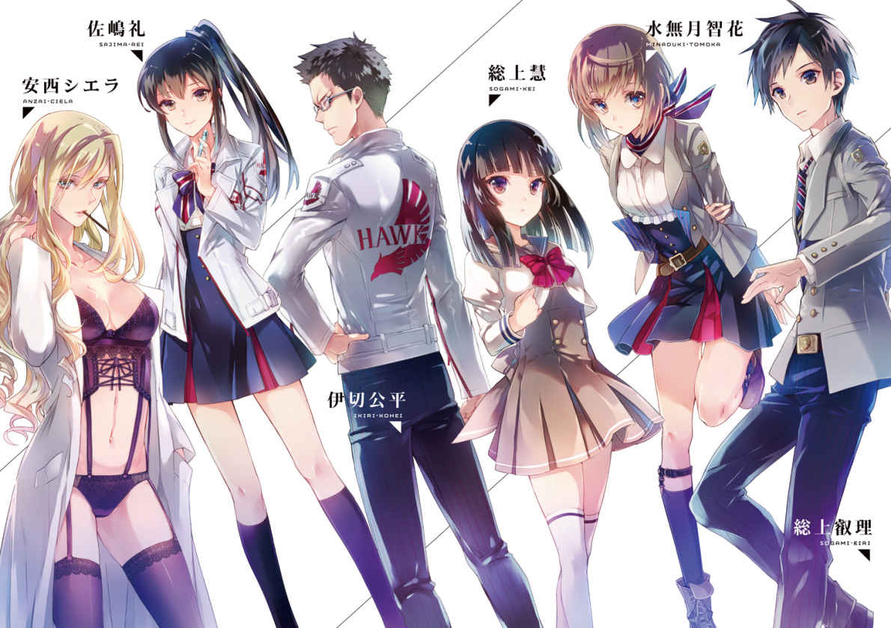
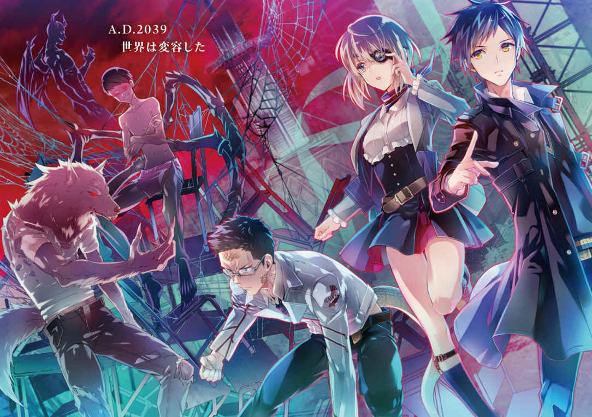
ＭＦ文庫Ｊ
Digital Eden Attracts Humanity
最凶の覚醒
櫂末高彰
口絵・本文イラスト●ミユキルリア
ＣＯＤＥ：０００
悪魔が立っていた。
悪魔としか形容しようのない存在が一人、道路に立っていた。
黒に近い濃紺の肉体。醜悪にねじくれた角を生やし、眼球は鮮血のような赤一色。細い尻尾の先端は鋭い刃と化していた。
「なるほど、これが進化か。素晴らしい」
東京都心のスクランブル交差点。そのど真ん中に突っ立ち、悪魔は空を仰いで笑う。
耳まで裂けた口が大きく開き、鮫を思わせる尖った歯が剥き出しになった。低音の笑い声に、大勢の通行人が奇異の目を向ける。
「何あれ？」
「映画の撮影？」
「ただのコスプレじゃない？」
ひそひそと囁き合いながらすれ違い、離れていく。
じきに信号が赤に変わった。
しかし悪魔は動かない。脇を避けていく車にクラクションを鳴らされても、仁王立ちで空を仰いだままだ。とうとう一台が目の前に止まり、運転席の窓が開いた。
「邪魔なんだよ！ さっさとどけ！」
四十過ぎの男性が声を張り上げる。スーツ姿の彼に、悪魔はゆったり顔を向けた。
苛立ちのままにクラクションを鳴らし続けていた男が、ビクリと硬直する。その顔がみるみる青ざめていった。
「邪魔しないでくれ。今、非常に良い気分なんだ。最高の気分なんだよ。見るもの全て、聞くもの全て、触れるもの全て、感じるもの全てが素晴らしいんだ。新世界に生まれ変わったような気すらする」
悪魔が一歩、踏み出す。
二メートル近くある濃紺の肉体が唐突に躍動した。
フロントガラスを突き破り、運転席の男性を引きずり出す。ガラスの切っ先に引っかかれ、血まみれになった体を無造作に放り投げた。
男性は天高く舞い上がり、交差点の先にあるビルの壁にベシャリと叩きつけられる。
歩道から見ていた人々は、一瞬、何が起きたのか分からなかった。
「赤信号なのに交差点で突っ立ってる悪魔コスのバカ発見ｗｗｗ」と動画をリアルタイム配信していた者も、思わず撮影を忘れてビルの方を見上げる。
そのせいで逃げ遅れた。
悪魔が運転手を失った車を、再び無造作に投げ捨てたのだ。
今度は歩道に向けて。
無数の悲鳴と衝突音。
あっけなく三人が潰された。
そのときには、悪魔は次の行動に移っていた。
蝙蝠を連想させる漆黒の羽を広げ、水平に飛んだのだ。悪魔を避けて走り去ろうとしていた四トントラックに真横から突っ込む。へし折れ、吹き飛んだのはトラックの方だった。周囲の様々なものを巻き込んで倒れ、滑っていく。
どこかで火花が散り、爆発が起きた。
泣き喚く声。逃げ惑う足音。
その中を飛び回り、悪魔は無差別に殺した。
突き刺し、ねじ切り、切り刻む。
まるで体の動かし方を練習するように惨劇を繰り広げ、周囲を血に染めた。
数分後、サイレンを鳴らしてパトカーが集まる。しかし乗り捨てられた車のせいで近寄れず、やむなく降車して駆けつけた警察官が数名、悪魔に対し銃口を向けた。
「ああ、いいね。ちょっと撃ってみてくれ。痛みくらいは感じるのかな？」
真紅の双眸を警察官に向け、悪魔が不敵に笑う。制止の声を完全に無視して彼らに近づいた。警察官はなかなか発砲しなかったが、ついに一人が引き金を引く。
一発目は空砲。しかし悪魔は止まらない。
二発目。右目に直撃した。
「......こんなもんか」
ところが銃弾は弾かれ、悪魔は不満そうに息を吐く。
「戦車の大砲とか......さすがに、ここじゃ無理か」
一度発砲したことで箍が外れたのか、その場にいた全員が悪魔に向けて銃を撃った。雨あられと飛んできた銃弾を全て受けても、悪魔は傷一つ負わない。
「お勤め、ご苦労様」
まさに悪魔的な笑みを浮かべ、羽を広げた。
一打ち。突風が警察官を弾き飛ばす。周囲の建物の窓ガラスが悉く割れ、新たな被害者を生み出した。
「だいたい分かった。次はどうするかな」
空に浮き上がり、悪魔は下界を睥睨して首を捻る。
そして、いずこかへと飛び去ってしまった。
二〇三七年、三月に起きた「悪魔事件」は、インターネットを通じて瞬く間に世界中の人々が知るところとなった。悪魔を撮影した動画は幾度となく視聴され、人々の恐怖を煽り立てた。
二ヶ月後、政府は「セントラル・メディック」という企業と合同で警告を発する。
デジタルウイルス「オラクル」によって、全世界が脅威にさらされていると。
このオラクルというデジタルウイルスは、映像と音楽で構成されたプログラムでありながら人体に直接影響を及ぼし、その組成を遺伝子レベルで組み替えてしまう。
その結果、オラクル感染者は姿形が人間以外の「何か」に変化する。
東京都心で惨劇を起こした「悪魔」も感染者の一人だった。
このオラクルを拡散したのは、天満博士というセントラル・メディックの一研究者で、現在、行方をくらましている。
すでにオラクルは全世界に拡散されており、いつ何時、ＰＣや携帯端末に送り込まれてくるか分からない。感染率はかなり低いが、怪しいメールは決して開かないこと。
この発表は、世界中に混乱を招いた。
フェクターと名づけられたオラクル感染者の存否を巡って、あわや中世の魔女狩りが再来するかと思われたところに、今度はセントラル・メディックから福音がもたらされる。それが、デジタルワクチン「ネメシス」の開発だった。
ネメシスはオラクルより高い感染力を持つプログラムで、多少の副作用があるものの、これを事前接種することによってオラクルから身を守ることができる。
そんな触れ込みで、ネメシスを無償配布したのだ。
これによって事態は収束に向かう。
混乱は治まった。しかし、フェクター事件は世界中で増加の一途をたどる。海外でも「悪魔」や「狼男」さらには「天使」のような姿のフェクターが確認された。
人々は恐怖し、それらを排除するよう求めた。
そして「Health And World Keeper」、略称「H.A.W.K.」が設立される。
ネメシスの開発と無償配布によって国内外を問わず発言力を強めていたセントラル・メディックの呼びかけで、ネメシスの副作用が強く出た者たちが決起したのだ。
彼らは一時的にではあるが、他の動物や昆虫等の力を使うことができる。その副作用を活用し、人々を恐れさせるフェクターを逆に捕まえようとした。
その試みは成功し、フェクター捕獲部隊は徐々に人数を増やしていく。
セントラル・メディックは彼らの後ろ盾となり、社内に統括本部を設置した。様々な備品の支給、警察や自衛隊、各国軍との連携を取りつけ、「H.A.W.K.」たちにフェクターを捕獲させた。
彼らの活躍によりフェクター事件も収束していき、平穏な世界が再び訪れる。そしてフェクターは、いつしか人々から忘れ去られていく。
多くの人々が、そんな幻想を抱きつつあった。
まだ、本当の意味では始まってすらいなかったのに。
二〇三九年 七月──
ＣＯＤＥ：００１
「ああ、ハハハハハッ。......気持チ良い」
血と涎にまみれた長い舌を出し、そいつは野太い声で笑った。
狼だ。
目の前に狼がいる。
総上叡理は息を呑んだ。
暗闇で黄色に光る剣呑な双眸。突き出した鼻の下にはズラリと並んだ犬歯。顔全体を覆う硬そうな毛は灰色。足の爪も獣のそれを生やしている。両手は剛毛に覆われ、その指先には、やはり研ぎ澄まされた獣の爪。
ところが体は人間のそれだ。だらしなく着崩しているものの、長袖のシャツにジーンズという出で立ち。シャツが黒く汚れていた。血の臭いが強く感じられる。
それは伝承や創作物の中でよく見る存在、狼男そのものだった。
街中の路地。夜空と半月を背に傲然と立っている。
たった今、警官の喉笛に食らいついて相手を殺した。
「あ、あああああ......うわあああああああああああっ？」
叡理の隣で狼男を凝視していた、もう一人の警官が悲鳴を上げる。腰を抜かしてしまったのか、その場にへたり込んだ。
「化け物っ......フェクターだああっ！」
「フウ。まだ二人いルな」
力を失った中年警官の体をその場に捨て、狼男は舌なめずりをした。這って逃げる青年警官の背中を爛々と輝く目で見据える。
......どうして、こんなことになった？
叡理は自問する。
妹が風呂に入っている間、コンビニエンスストアに出かけただけだ。午後十時過ぎの外出など、高校生にとって大したことではないはず。今までも幾度か出かけ、普通に帰宅していたのだ。
それが、今夜は違った。何の予感も予兆もなく、唐突に襲われた。逃げている途中で出会った夜警の警察官も、狼男の標的になってしまった。
......なんだよ、この理不尽は。
苦笑し、周囲を観察する。
すぐ側に懐中電灯が転がっていた。その先には俯せに倒れている中年警官。血だまりが広がっていく。腰の辺りをよく見ると、短い棒が目に止まった。
「お前も、喰ワセろ」
低く押し殺した声に獰猛な獣の本能が滲み出る。狼男が叡理を一瞥した。
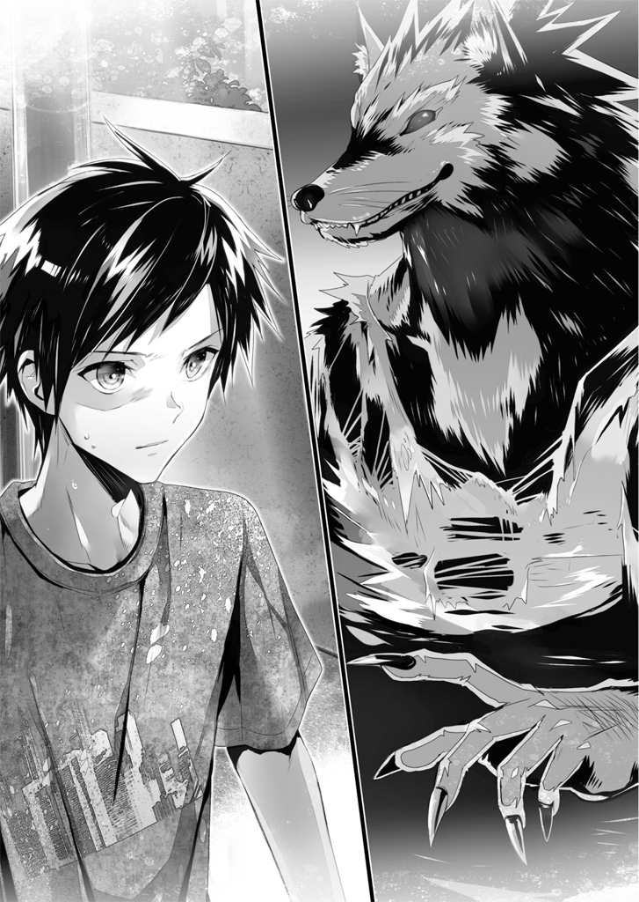
「そっチは、ちょっト待ってロ。逃げヨウとしても無駄ダぞ」
恐怖のあまり身動きできなくなっているのだと見せかけるため、叡理はただガクガクと首を縦に振った。狼男は満足そうに犬歯を剥き出しにする。青年警官へ一歩、二歩と踏み出した。腰を沈め、飛びかかる体勢になる。
いまだ四つん這いで逃げている青年警官には、それを知る術などない。
叡理は大きく息を吸い、吐き出すと同時に動いた。
手元まで転がってきていた懐中電灯を掴み、前転して中年警官の体に寄り添う。腰のホルスターから棒を引き抜いた。長さ二十センチほどしかないが、思い切り腕を振ると予想以上にあっさり棒が伸びた。
特殊警棒。警察官や警備員等が使う特殊警戒用具だ。
叡理が警棒を伸ばすのと、狼男が異変を察知して振り返るのはほぼ同時だった。
「貴様ッ？」
狼男が吠える。こちらに向かって飛びかかってきたところを狙い、叡理は懐中電灯の光を相手に向けた。
「ぐっ......」
狼男が眩しさに目を背けた瞬間、自ら踏み込み全力で腕を振る。
鈍く重い手応えに腕が痺れた。
「ギャン！」とイヌのような悲鳴が聞こえる。
頭上を狼男が飛び越えていき、アスファルトに着地した。
ところが、その場に跪く。脛を押さえて転げ回った。
「ウウウ、痛いっ......。痛ミが、ああ、まだ感ジラれるのかッ......」
フルスイングは狼男の脛を直撃したらしい。叡理は特殊警棒に目を落とした。
ゾッとする。
特殊警棒が、真ん中からへし折れていた。
警棒を捨てる。腕の痺れはまだ残っていた。懐中電灯を手に走り出す。
「立って！ 走りましょうっ。応援を呼んで下さい！」
ヒイヒイ言いながら這い進んでいた青年警官の肩を掴み、少々荒く引き起こした。
彼の脇に腕を回し、引きずるようにして移動させる。何とか歩いてくれるものの、Ｔ字路に突き当たったところで警官は座り込んでしまった。
「しっかりして下さい！ じゃないと、あいつが......」
背筋を冷たいものが走る。
叡理は狼男の方を振り向いた。
「痛イ......。ああ、痛い、なア」
脛を撫でつつ、狼男は立ち上がっていた。こちらを見て、牙を剥き出しにする。
「そいツハ見捨てて逃げレば良かっタンだ。お前ダケは生き残レただろうニ」
「............」
叡理は警官の体を放し、狼男に相対した。胸ポケットのペン型端末をズボンのポケットにねじ込んでから、余裕のある素振りを見せる。
「狼男って、満月の夜にしか人を襲わないんじゃなかったっけ？」
「そんなもノハ作り話だ。ゴ覧の通り、俺はタった今、そコノ警官を殺ッた」
「じゃあ、銀の銃弾で撃たないと殺せないっていうのも創作？」
「アア、それも創作だ。たダのナイフでも傷を負わセラれる。恐ラク、殺すコともな」
狼男が叡理に向かって歩いてくる。
「起源ハ意外に古イ。紀元前のローマ帝国時代、狼男の記述が出テクる。悪魔や何カと結びつけラレルのは中世。キリスト教が幅を利カせるよウニなってカら」
「博識だね」
「大しタコとはない。......そレよりも」
顔をズイッと近づけ、狼男が叡理をじっと睨みつけた。
獣臭さと血の臭いに叡理は顔をしかめる。
「まサか、オ前......間違いなイっ。あノ連中が話シテいた......ハハハハハッ」
狼男が不意に笑い出し、唾が飛び散る。頬にかかった。
それを拭い、叡理は相手を見返す。
「何を笑ってんだよ」
「ン？ ああ、お前ハ知らないノか......そうか、哀レだな」
不気味な笑みを浮かべたまま頭を振る狼男。叡理は渋面になった。
「あんまり余裕こいてると、足をすくわれるぞ」
「うん？」
「ここがどこだか分かってるのか？ 一本隣は大通りだ。この時間でも人通りは少なくない。騒ぎを聞きつけた誰かが通報してる可能性は高いよ」
「警察ニハ何もできン。そこの男も縮コマっているだけダ」
「聞こえないのかな？」
叡理は耳をそばだててみせる。もう一度、狼男に尋ねた。
「本当に、聞こえてないの？」
獣の耳がピクッと動いた。
微かに、パトカーのサイレンが聞こえてくる。
それは徐々に大きくなっていた。
「こッちに、近ヅイている？ ......いヤ」
周囲を見回していた狼男は、不意に動きを止めて叡理を見る。その鋭い視線が腰の辺りで止まった。
「隠していルモのを、出せ」
「......あー、ばれるの早かったなあ」
叡理はポケットのペン型端末を引っ張り出す。
パトカーのサイレン音が大きくなった。
「世の中、色んなアプリがあるよな。これ、パトカーのサイレンを鳴らすだけのアプリ。防犯に使えるって謳い文句だったけど、こんなに簡単にばれるか......」
「時間稼ぎをしたかっタヨうだな。シカし、そんナコとをしても状況ハ──」
ドン。
狼男が吹っ飛ぶ。
叡理の脇を抜け、地面に叩きつけられて転がった。
「命中！ 捕らえろっ」
前方から声が上がり、数人の人影が駆けてくる。真っ白なライダースジャケットを着た少年たちが叡理の側を走り抜け、狼男へと向かった。
「大丈夫ですか!?」
一番最後にやってきた人物に話しかけられる。叡理は「あっ」と声を洩らした。相手も「えっ？」と目を見開く。
「佐嶋さんっ？」
「総上くんっ？ どうして......」
お互い、固まってしまった。叡理の側にやって来たのは、クラスメイトの女子である。佐嶋礼という名の、落ち着いた雰囲気の少女だ。普段は自然に流している黒髪を、今はポニーテールにまとめていた。顔つきもキリリと引き締まっている。
「どうしてって、それはこっちの台詞なんだけど」
叡理はそう返しながら、狼男の方を見た。
「それより今は、あっちを何とかしないと」
「そう、だね。あのフェクターは私たちに任せてっ」
「任せてって......」
「私たち、『H.A.W.K.』だから」
佐嶋が叡理に背を見せた。そこには「H.A.W.K.」の赤文字と意匠化された鷹の絵。
見覚えのある文字と絵に、思わず手元の端末を操作していた。叡理の視線を認識して端末が検索をかける。「H.A.W.K.」についての情報が宙に浮かんだ画面に表示された。
『「H.A.W.K.」
総合医療メーカーであるセントラル・メディック（株）が組織、運営する「オラクル」感染者（通称・フェクター）対策部隊。
セントラル・メディックが無償提供している「ネメシス」の副作用が特に強く出ているものたちで構成されており、隊員のほとんどが十代から二十代である』
出だしの数行にだけ目を通す。ある程度は知っていることだったが、自分の知り合いに隊員がいるとは意外だった。
「捕獲は成功したっ？」
仲間たちの下へ駆けていく彼女に続き、叡理も狼男の様子を窺う。相手は強靱な繊維で編まれた網に捕らえられ、もがいていた。網を噛み千切ろうとしながら吠える。
「セメディの狗どモめっ！」
憎しみのこもった双眸で網の端を握っている少年たちを威嚇し、叡理と目が合うなり大口を開けて怒鳴った。
「やッテくれたなっ」
「上手くいって良かった」
叡理は、呆けた顔で電柱にもたれ座り込んでいる青年警官を見る。
「ありがとうございました。応援を呼んでもらえて助かりました」
青年警官は、笑おうとして失敗したらしく頬を引きつらせるような表情をして軽く手を挙げた。それから項垂れる。
「そうだっ。向こうにもう一人いるんだ。......もう、手遅れかもしれないけど」
叡理の言葉に、佐嶋は沈痛な面持ちで頷いた。恐らく先に確認したのだろう。
「............」
いたたまれない思いに囚われる。
狼男を睨むと、相手もこちらを睨みつけていた。
「あのパトカーのサイレンは、そコの警官が連絡しテイるのを俺に聞かセナいようにするタメダったんだな。意識を逸らさレたわけだ」
「冷静な分析、どうも」
「やハリ簡単にはいかないか。単なるデマと思っテたが、いヨイよ間違いナさそうだ。おい、オ前。こレから気をつけロ。どいつもコイつも、お前の敵になルぞ」
「......だから。さっきから何を言ってるんだよ」
「そのうち分カる。そノウちな......」
ククククク。喉の奥で忍び笑い、それから狼男は自分を取り囲んでいる少年たちを見回した。
「とこロで、俺を捕まエタつもりか？」
「捕まってるだろうが！ この網はフェクターの捕縛専用に作られたものなんだ。狼ごときには絶対に破れないからなっ」
「フェクター野郎がっ。人間様をなめんじゃねえ！」
「酷いことしやがって......。すぐに処理してやる」
白ジャケットの少年たちが口々に言い返す。ところが狼男は悠然としていた。
おかしい......。まだ、何か隠してる？
それはただの直感。
けれど、叡理はそれに従って素早く狼男を観察した。指先や足下をよく見るが、特に怪しい動きはない。
「さテと。そロそろ出るか」
狼男が呟いた。少年たちが訝しげに彼を見下ろす。
スウウウウと大きく息を吸い、狼男の胸が大きく盛り上がった。
窮屈そうに網の中で頭を動かし、天を見上げる。
！ まさかっ？
叡理は咄嗟に叫んだ。
「みんな！ 耳を塞げっ」
その声に反応できたのは、隣にいた佐嶋だけ。
アオオオオオオオオオオオオオン
遠吠えが夜空に響く。
かろうじて両手で耳を塞いだものの、全く聞こえなかったわけではなかった。
不意に体から力が抜け、ガクンと膝が折れる。同じように佐嶋も隣で膝を突いていた。困惑の目で狼男を見る。
「フウ。こレは、肺に負担ガカかるから嫌イなんだが」
狼男を取り囲んでいた少年たちは、全員その場に座り込んでいた。力が入らないらしく、起き上がろうとして失敗し、地面に倒れてしまう。
怯え、震える少年たちの手から網の端がこぼれ落ちた。狼男は「よイせ」と腰を上げて立ち上がる。絡まったままの網をことさらゆっくり外した。
「油断大敵ダな。人間様ノ方が俺たちをナメているんじゃないカ？」
網から完全に抜け出すと、狼男は身動きできずにいる白ジャケットの少年たちに網を投げつけた。さらに爪を振るう。
少年たちから悲鳴が上がった。服が切り裂かれ、血が飛び散る。
「やめろ！」
「やめなさい！」
叡理と佐嶋の声が重なった。
爪についた血を嘗め、狼男が犬歯を剥き出しにする。
「アア、そッちの二人は動ケルんだったな。......喰わせテモらおうか」
見せつけるように血まみれの爪を立てた。
叡理は佐嶋を庇うため前に出ようとしたが、逆に彼女に制される。
「総上くん、下がってて。本気モードでいくから」
そう言いながら、佐嶋は胸ポケットから万年筆型の携帯端末を引き抜いた。左耳には無線イヤホンが入っている。
「小娘ごとキに何ができル」
狼男が凄んだ。
「ただの小娘だと思わないことね」
佐嶋も気丈に返す。
叡理は身を引き、項垂れている青年警官の方へそっと向かった。特殊警棒があれば、自分も少しは彼女を手助けできるかもしれないと考えたからだ。
不意に佐嶋が、ガクンと身を揺らす。
「あ......ううう......やっぱり、慣れないなあ......」
呟きながら端末を胸ポケットに差し直し、狼男を見据えた。相手は大きく腕を広げて彼女を挑発している。
「ネメシスを投与しタか。そんな出来損なイニ頼ってどウする？」
「出来損ないかどうか、身をもって知りなさい」
佐嶋が構えを取った。ボクシングスタイルだ。二、三度軽く跳ね、それから──
叡理は目を疑った。
彼女はスパッツの上から短パンを穿いているのだが、その太ももが筋肉でみるみる膨れ上がる。腰の下にあった隙間から尻尾まで生えてきた。それもかなり長く太い。
カンガルー？
テレビ等で見覚えのある姿形。その尻尾はカンガルーのものだ。
変化は下半身だけでなく上半身にも及んでいた。全身に筋肉の張りが生まれ、両手には太くて固そうな爪が生えた。そして耳が縦に伸び、獣のそれに変わる。
ほんの数秒で、佐嶋はカンガルー人間とでも呼ぶべき姿へと変貌を遂げた。
「投与成功。発現完了！」
脇を締めて拳を固め、佐嶋が狼男と向き合う。
ところが、その姿を見るなり狼男は肩を落とした。
「カンガルー？ つまラん......」
「正確には、アカカンガルーよ。あと、カンガルーをバカにしてると本当に痛い目みるからね」
佐嶋はぴょんぴょんと軽やかなフットワークを見せる。狼男は軽く首を鳴らし、
「死ネ」
踏み出す。
一瞬で間を詰め、彼女の顔面に爪を伸ばした。
バチィッ！
その手が弾かれる。
鮮血が舞った。
「ぐウうっ!?」
呻いたのは狼男。手の甲が裂かれていた。
「ふっ」
更に鋭いパンチが狼男の顔面に決まる。
「がっ？」
よろけた体に次々と拳が叩き込まれた。
右胸、左胸、左脇腹、左脇腹、右胸、左頬、右肩、左胸、右脇腹、左上腕、右前腕、左脇腹、左胸、右胸、左胸、右胸、左胸、右脇腹、鳩尾、鳩尾、鳩尾、そして──
「ふっ！」
胸全体を、カンガルーの両足で蹴飛ばす。
尻尾で全身を支えた、体重の乗った一撃。
「べはあッ......」
血と涎を吐き出し、狼男は吹っ飛んだ。
十数メートル先のブロック塀に叩きつけられて止まる。ズルズルと沈み込んだ。
「............強い」
叡理は佐嶋の横顔を見つめる。
「言ったでしょ。カンガルーをバカにすると痛い目見るって」
彼女は油断なく構えたまま、狼男へと近づいていく。
叡理はその後ろ姿を追いながら、思い出していた。
テレビ番組か何かで観たことはある。
尻尾で全身を支えたアカカンガルーの蹴りは、人間が食らえば内臓破裂しかねないほどの威力をもっているらしい。
しかし、目の前で実際に見せつけられた衝撃は、予想を遥かに上回っていた。
「どう？ まともに食らったら、狼男でもただじゃ済まないんだから」
「確かニ、こイツは効いた......」
のろのろと身を起こし、狼男はそれでもニイッと笑った。
「だガ、オ前も俺ヲ甘く見テねえカ？」
「えっ？」
佐嶋の左腕に切り傷が走る。服が裂け、血が滴り落ちた。戸惑う彼女に、狼男が血で汚れた爪を見せつける。
「殴ラレてばっカじゃナカったんだよ、小娘ガっ。......っと、さスガに遊んデばカリはイラんねえか。役立たズのお仲間どモが回復しそウダ」
周りを軽く見回し、狼男がアスファルトを削って跳んだ。佐嶋も素早く拳を固めて相手を見上げる。
「!?」
ところが、予想に反して狼男は佐嶋を飛び越えた。そしてそのまま走り出す。
叡理に向かって突っ込んできた。「いタダきだアっ！」と大口を開ける。
「無駄よ」
佐嶋が狼男の隣に並んだ。
強靱な後肢による跳躍移動は時速45キロ。意表を突かれても、すぐに追いついた。
佐嶋は狼男の脇腹に拳を当て、零距離から打ち込む。
「あっ、ガアアアアアアアア!?」
叡理の目の前で狼男は横に吹っ飛ばされた。
苦悶の表情を浮かべながら狼男が爪を伸ばす。その手が叡理の顔を目がけて振られた。
ガチッ。
叡理は鋭い爪を特殊警棒で受け止め、払う。素早く後退して狼男から距離を取った。
「くウっ......！」
勢いに任せてブロック塀を蹴飛ばすと、手負いの狼男は逃げ出す。当然、佐嶋が追いすがった。
狼男が口の端をつり上げる。
「佐嶋さん、耳を塞いで！」
叡理の警告は一歩遅かった。
アオオオオオオオオオオオオオン
佐嶋がガクンと体勢を崩す。叡理は両手で耳を塞いだまま彼女へと駆け寄った。
「残念だッタな、小娘。まタ遊ぼうゼ」
そう言い捨てて、狼男は通りの先へと走り去っていく。
「待ちなさい！」
地面に倒れ伏した佐嶋が叫んだ。
「うアっ？」
何かが地面に落ちる音。
振り向くと、逃げ去ったはずの狼男がアスファルトに這いつくばっていた。
「新手カ......。性懲リモなくっ」
「逃がしはせんぞ、フェクター」
物陰から白ジャケットの少年が一人、新たに姿を現す。
眼鏡のつるを軽く押さえ、四つん這いの狼男を見下ろした。
「......そレは、どウだろうな」
狼男は四つん這いのまま大きく息を吸った。
遠吠えが来る！
「コウちゃん！ 耳を塞いでっ」
佐嶋が警告した。
眼鏡の少年がこちらを一瞥する。
狼男が天に向かって大きく口を開けた。
瞬間、少年の蹴りが鳩尾に決まる。
「ガハアッ？」
肺の空気を強制的に吐き出され、狼男が目を剥いた。
「それは、さっきから何度も見ている。発動に時間のかかる遠吠えを、こんな至近距離で食らうわけないだろうが」
「コウちゃんっ」
佐嶋が弾んだ声を上げた。眼鏡の少年が眉をひそめる。
「礼、任務中にその呼び方はやめろ。俺は隊長だ」
「ご、ごめんなさいっ、隊長」
「第一目標発見。処理を実行する」
隊長と呼ばれた少年がナイフを抜いた。
「チッ！」
狼男が少年に襲いかかる。鋭い爪を次々に繰り出した。
それをこともなげに躱し、少年はナイフを振る。金属を削るような音がした。眼鏡のつるを軽く押さえ、眉をひそめる。
「固いな」
「俺ノ体毛は特別製だ。そンナ小さい刃物では切れン！」
狼男が攻撃の速度を上げた。全身が躍動し、俊敏に少年の周りを駆ける。
「回復力モ、人間などトは段違いだ！」
佐嶋にやられた傷は癒えてしまったようだ。獲物を狩ろうとする双眸には野性の愉悦が踊っている。
「殺すッ！」
研ぎ澄まされた爪が襲いかかった。少年は中指で眼鏡の位置を整える。
「なるほど。だいたい分かった」
「!?」
目にも止まらぬ速さで繰り出された連撃は、しかし少年にはかすりもしなかった。全て紙一重で躱すと、カウンターで少年はナイフを振る。
悉く弾かれた。体毛だけでなく、分厚い筋肉の鎧が狼男を守っている。
「隊長！ 助太刀しますっ」
佐嶋が駆け寄ろうとしたが、少年はそれを片手で制した。
「いらん。それに礼、そろそろネメシスの効果が切れるだろ」
少年がそう言うや否や、佐嶋の体が元に戻っていく。あっという間に元の姿に戻った彼女は、恥ずかしそうに俯いてしまった。
「他人の心配ヲスる余裕がアるのか!?」
狼男が大口を開けて食らいつく。
それを、あえて懐に飛び込んで躱した少年は、すれ違いざま狼男の腹にナイフを叩き込んだ。ところが、顔をしかめたのは少年の方だ。
「随分と固いな。手首が痺れたぞ」
距離を取りながらぼやく。狼男が笑った。
「ただノ人間ごとキが俺に勝てるもノカ。お前もネメシスを投与シたらどうだ？」
「そういえば、礼の『アカカンガルー』にボコボコにされたみたいだな」
「ああ、あノ小娘は次に会っタトき八つ裂きにすル」
舌なめずりする狼男を、少年はあくまで冷静に見ている。
フウと息を吐いた。
「ナイフの刃が欠けてしまったな。これじゃ、余計に痛いぞ」
「何を言っていル？」
「お前の心配をしてやったんだがな。切れ味の悪い刃物で切られると酷く痛いらしい。それに治りも遅い。ああ、貴様の場合は治癒の心配をする必要はないか」
眼鏡の奥の目つきが、冷たさを帯びる。
「今から俺に殺されるんだから」
狼男が疾駆する。
少年は僅かに腰を落として両腕を下げた。
まるで力を抜ききったような姿勢だが。
狼男が血で汚れた爪を大きく振る。
血しぶきが飛んだ。
狼男の腕から。
「ガアアアアアアアアアアッ!?」
肘の内側から出血している。
少年が懐に潜り込み、体を密着させた。
刃が踊る。
今度は脇の下を抉られ、狼男は悲鳴を上げた。その隙に両手首を掻き切られる。浮いた足をすくわれ、よろけて地面に倒れそうになったところで股を裂かれた。一際派手に血が噴き出す。
「ギャアアアアアアア!?」
太い血管を切られたらしく、さしもの狼男も狼狽した。必死になって血を止めようとするが、ドクドクと脈打って噴き出す血は止まりそうにない。
「何ダっ？ 何をしたっ？ ドうなって......」
驚愕に震える目。
それを冷徹に見返し、少年は眼鏡の位置を整えた。
「簡単なことだ。人体には、いや、人に限らず大抵の動物には、その構造上どうしても鍛えられない箇所がある。筋肉がつかない関節部分だ。そこには腱や神経といった弱点が存在していることも多い。そこを突けば、相手がどんなに固い体毛を生やしていようと、どれだけ筋肉の鎧をまとっていようと、関係ない」
「あ......ぐうウウう......」
狼男が跪く。出血が多すぎるのか、呼吸が荒くなっていた。
「隊長！ 生け捕りにしましょう」
佐嶋が提案する。しかし少年は冷たく言い放った。
「フェクターは処理する」
「で、でもっ......。私たちはフェクターの保護を第一目標に組織された──」
「それについては、とっくの昔に決めただろうが！」
一喝され、彼女は口を閉ざす。
「......ここまデか。何が『H.A.W.K.』だ。この、人殺シどもっ」
狼男が悔しそうに眼鏡の少年を睨みつけた。
「言いたいことは、それだけか」
冷酷に、少年が告げる。
叡理の側で佐嶋が辛そうに目を背けた。
「鍛えようのない箇所の中で、最大の弱点を教えてやる」
必死の形相で立ち上がった狼男の首に、容赦なく刃が突き刺さる。
「喉だ」
引き抜かれると同時、大量の血を吐き出して狼男は地に伏した。
ＣＯＤＥ：００２
「今夜のことは早く忘れろ。もう帰って良いぞ」
救急車から少し離れたところで、眼鏡の少年に言われた。
佐嶋たち白ジャケットの面々がやってくる。
「コウちゃん。遺体は回収班の人たちが片付けたし、周りに住んでる人たちへの説明は警察が対応してくれるって。私たちの仕事は終わりだよ」
「礼。俺は隊長だ」
「あ、ごめんなさい。またっ......」
佐嶋がペロッと舌を出す。可愛らしい仕草に他の隊員たちは笑うが、「コウちゃん」だけはしかめ面だった。
「総上くんも大変だったね。あ、この人がうちの隊長で伊切公平くん。私たちと同じ高校二年生だよ」
彼女が眼鏡の少年を指して紹介する。叡理は会釈した。相手も無言で頷き返す。
「あの、一応、『H.A.W.K.』のことはクラスでは秘密にしておいてもらえると助かるな。隠してるわけじゃないんだけど、知られてもあんまり良いことないから」
佐嶋が叡理に、ぺたんと手を合わせた。
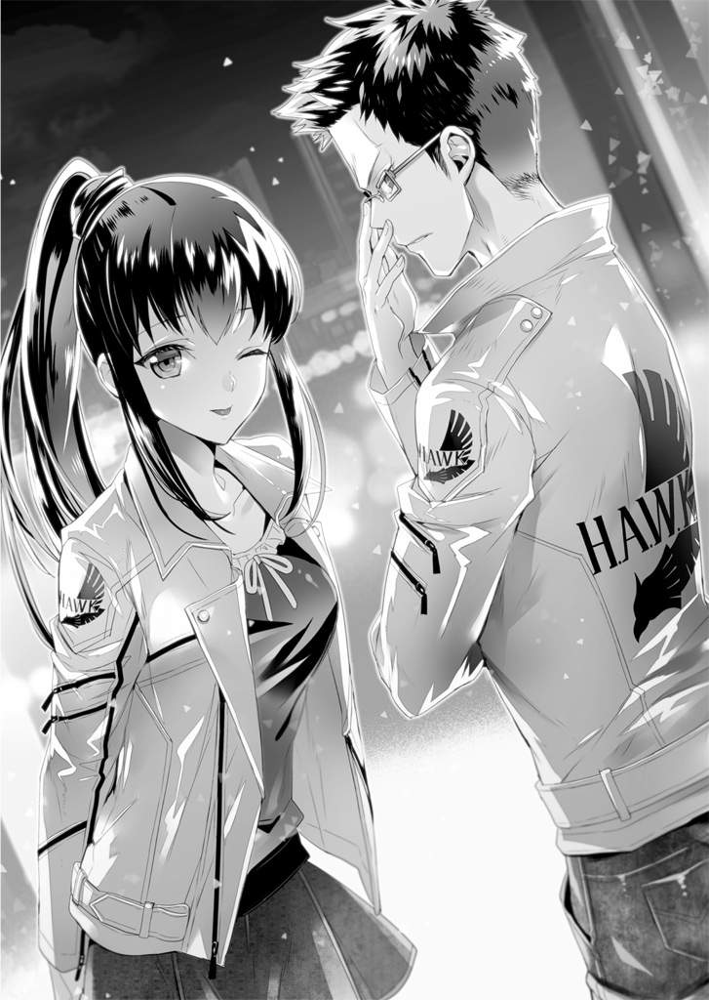
「あ、うん。別に構わないよ。というか、そんな口約束でいいの？」
「総上くんは約束守ってくれそうだもの」
そう言って微笑む。側にいた隊員が「俺はオープンにしてるけどなあ」と言った。
救急車の中に、ストレッチャーに乗せられた遺体が入っていく。
叡理は歯を食いしばった。
「さっきは、すまなかったね......」
青年警官が歩いてくる。顔色は大分良くなっていた。物腰も落ち着いている。
「俺が取り乱してしまったばかりに、君を危険な目に遭わせた......」
「いえ。......すみません。俺が、巻き込んでしまったから」
「そんなことはないよ」
青年警官は優しく叡理の肩を叩いた。
「通報を受けて、あの現場に向かっていたんだ。遅かれ早かれ遭遇していた。むしろ、君がいなかったら俺も殺されていたかもしれない。ありがとう。しかし君は肝が据わっているね。大したもんだ」
「そんなことないですよ」
呟く叡理にもう一度笑いかけ、「気をつけて帰りなさい」と言い残して青年警官は去っていった。
「......やりきれないよね。でも、総上くんのせいじゃないから。本当に警察の人が言ってた通り、総上くんは大活躍してくれたよっ」
「元凶はあのフェクターだ。お前が気に病むことはない」
佐嶋と伊切、両方にも声をかけられる。叡理は頭を掻いた。
「よし、行くぞ。総上、だったか？ もう一度言う。今夜のことはさっさと忘れろ。変な噂ばかり広まっているが、フェクター事件は世間で言われているほど多くはないんだ。もう二度と関わることはないだろう」
「そうでもねえかもよ、伊切隊長」
「あの化け物ども。増加の一途だって、こないだもニュースでやってたし」
「俺たち正義の味方が一般人を守ってやんねえと」
隊員たちが口々に言う。佐嶋は複雑そうな表情だ。
伊切は、眼鏡のつるを中指で軽く押し上げる。
「俺は正義の味方じゃない。ただの人殺しだ」
叡理は彼の横顔を見た。隊員たちが一斉に笑い出す。
「また出たよ。隊長の中二病」
「伊切、俺たちが処理してんのはフェクターだぜ。化け物だ。人間じゃねえよ」
笑い声の中、伊切は静かに呟いた。
「それでも、俺のやってることは、人殺しと同じだ」
初めて見たな......。
フェクターも、「H.A.W.K.」も。
おまけに、その隊員の中に佐嶋さんがいるだなんて。
叡理は家路を急ぐ。
ありがたいことに無傷だった携帯端末には、ありがたくないことに妹からのメールが山と届いている。さっきまで命の危険にさらされていたけれど、家に帰っても違う意味で危険にさらされそうだ。
叡理は玄関扉を見つめ、一つ息をつく。
覚悟を決めるしかないな。
「ただいま」
玄関扉を開ける。
上がり框に少女が仁王立ちしていた。
三つ年下の妹、慧である。
中学二年生にしては小柄なその身に、今は怒りのオーラを立ち上らせていた。腕を組み、分かりやすく膨れ面をして叡理を睨んでいる。
キリッと眉がつり上がったその表情は、想像していた通りのものだ。
「............」
「............ただい──」
「お兄ちゃん、こんな時間までどこに......その格好どうしたのっ？ 何があったの!?」
不機嫌そのものといった顔は、しかしすぐに驚きと心配にとって代わられる。扉を閉めた叡理に身を乗り出して尋ねてきた。
「あ、ああ。ちょっと事故にまきこまれてね」
しまったと思う。
叡理自身は怪我らしい怪我をしていないけれど、血を浴びていた。事件の後、佐嶋が渡してくれたタオルで拭ったのだが、それでも着ている服は血で汚れており、あちこち擦った跡や破れた箇所がある。慧が心配するのも無理からぬことだ。
「事故って何っ？ お兄ちゃん怪我してないのっ？ 本当に大丈夫？ 今からでも救急車呼んだ方が......」
おろおろと円らな瞳を震えさせる妹を見つめていると、不思議と気持ちが落ち着いてくる。深呼吸をして答えた。
「大丈夫だよ、慧。俺は全然怪我してないから。服は随分汚れたけどね。着替えたいし、上がっていいか？」
なるべく軽い口調で言う。
慧はそれでも心配そうな瞳で見つめてきたが、ひとまず後ろに下がってくれた。叡理が廊下に上がるなり、腕を掴んでくる。
「......本当に、心配したんだよ」
か細い声で言われた。
「ごめん。ちょっとコンビニに行ってただけなんだ。事故に遭ったのは災難だったけど、俺は大丈夫だから」
「......最近、お兄ちゃん変だよ」
「そんなことないって。ほら、着替えたいから離してくれ」
腕を掴んだままの妹を見下ろす。慧もこちらを見上げてきた。
ドキリとする。
丸顔で、小ぶりの鼻。
癖のない黒髪が肩の辺りまで素直に流れ、肌の白さを際立たせている。パジャマの上から薄手の半纏を羽織っているが、背が叡理の胸辺りまでしかないので、こうして見下ろすと首元から鎖骨、さらにその先の控えめな膨らみまでチラリと見えてしまう。
「ほ、ほらっ。風呂上がりなんだろっ。早く寝ないと湯冷めするぞ」
叡理は慌てて目を逸らした。そっと妹の手をどける。慧は不満そうに口を尖らせた。
「お兄ちゃん、やっぱり変だよ......」
「そんなことないって」
「何か隠しごとしてない？ 最近、私がお風呂に入ってるとき、よく出かけてるでしょ」
「そうだっけ？ たまたまじゃないか」
妹の背中を押し、部屋へと追いやる。慧はドアの前で足を止めた。
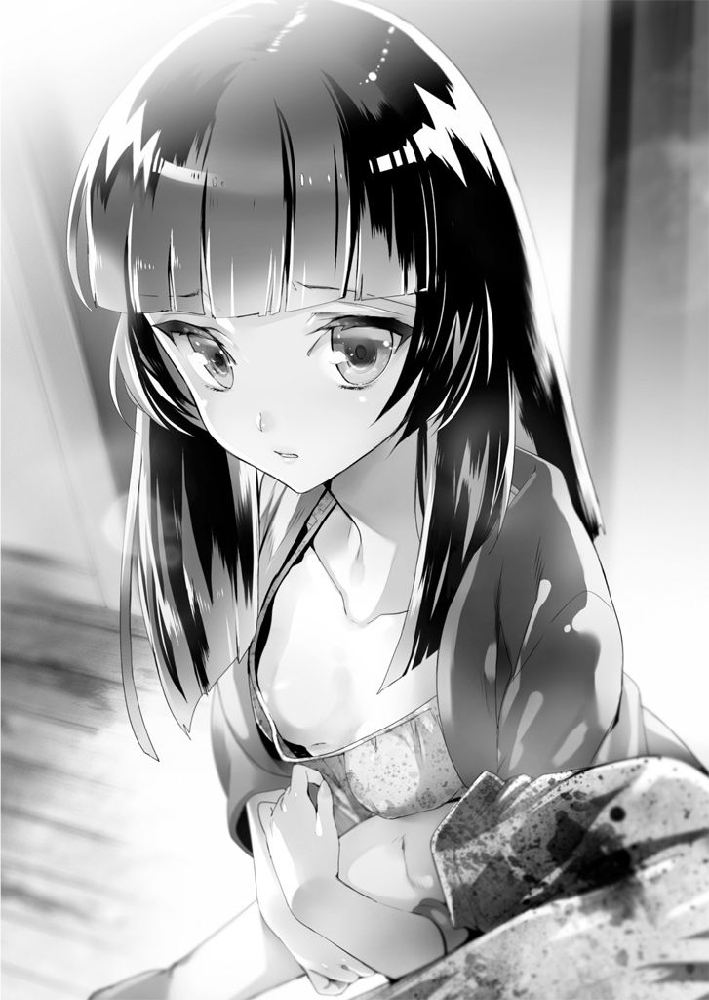
「......ねえ。お兄ちゃん、私のこと、嫌い？」
「そんなわけないだろっ」
反射的に返す。さらに言葉を重ねようとしてハッとした。一旦、気持ちを抑える。
「慧は、大事な妹だよ。嫌うわけない」
半纏の上から肩に手を置き、優しく撫でる。
妹は「うん」と頷き、ノブを回した。
「ごめんね、お兄ちゃん......。この頃、体調が良くないから気が滅入ってるのかも」
「ああ、そういうことってあるよな。ゆっくり休めば、きっと良くなるよ。すぐ学校にも行けるようになるから」
「うん」
慧が自室のドアを開け、真っ暗な室内に滑り込む。こちらを振り返って言った。
「おやすみなさい」
「おやすみ」
ドアが閉じられる。
ホッと息を吐き、叡理は踵を返した。
「......お願い......嫌いにならないで......」
微かに聞こえた声に思わず振り向く。「慧？」と声をかけても反応はなかった。
「............」
叡理は自分の部屋に入った。
妹と、ぎくしゃくしている自覚はある。
その原因もはっきりしている。
服を着替え、血だらけの上着を仕方なくゴミ箱に突っ込むと、叡理はベッドに倒れ込んだ。携帯端末を引っ掴み、元凶ともいうべきメールを開く。
『送信者：母
タイトル：叡理へ
本文：急にこんなメールを送らなければならなくなったこと、どうか許して下さい。
最初に言っておきたいのだけれど、母さんも父さんも叡理のことを本当に大切に思っています。それだけは信じて欲しいの。
おかしな前置きだと思っているでしょう。でも、私たちが心からあなたを愛していることだけは分かって欲しいから。
今から、とても大切な話をします。あなたの出生についての話です。
叡理。あなたは、私たち夫婦の本当の息子ではありません。
父さんの親友の子なの。その人は、事情があって、あなたを育てられなくなってしまった。あなた自身も当時、強いショックを受けていて記憶に混濁があるとお医者さんは仰っていました。きっと当時のことを、あなたは上手く思い出せないでしょう。
引き取ってから、私たちもなるべくあなたに──』
耐えきれず、メールを閉じた。
携帯端末を放り出す。天井を見上げ、ため息をついた。
実の息子じゃない、か......。
その告白そのものには、実はそれほどショックを受けていなかった。
自分の出生に関わる重要事をメールで知らせてきたことに対しても、やはりそれほど気にしていない。それよりも、このメールの後、両親と連絡が取れないことの方がよほど気になる。
ただ、それですら、もっと重大な悩みに比べれば些細なものだった。
つまり、俺と慧は、血が繋がっていない......。
最近の叡理を悩ませ続けているのは、この一点のみ。
しっかりしろよ、総上叡理っ。
額に手を当て、軽く叩く。
たとえ血が繋がっていなくても、慧は妹だ。俺たちは兄妹だ。
兄妹なんだ......。
虚しさと息苦しさに苛まれる。
「兄妹、なんだよなあ......」
目を閉じると、瞼の裏に慧の顔が浮かんだ。
儚げな笑顔。子どもっぽい膨れ面。小悪魔のようなドヤ顔。色んな表情が現れては消えていく。そのどれもが、可愛らしい。
「だから、ダメなんだって。妹なんだぞっ」
そう自分に言い聞かせ、叡理は寝返りを打った。
※ ※ ※
夢を見ていた。
明晰夢といい、夢を見ていると自覚することがあるらしい。叡理には子どもの頃から頻繁に起きる現象だった。
ただ、今夜のそれは何かが違った。
目の前に巨大な扉がある。
全面に豪華で緻密な装飾が施された観音扉だ。見上げても一番上は霧にかすんで、よく見えない。両腕を広げても五、六人は並ばないと両端に届かないほどの幅があった。取っ手はどこにも見当たらない。
周囲を見回す。ぼんやりとしており、どこにも焦点が合わない。薄暗い空間がどこまでも広がっているように感じられた。
誰もいないのか......。
首を巡らせていると、視界の端に人影が映った。
振り向く。
「!?」
声を上げそうになった。
いつの間に現れたのか、扉に凭れて人が立っている。
「よう、久し振り。いつ以来だっけ？ ああ、そんなことはどうでもいいか」
その人物が陽気に声を掛けてきた。
人、であることは間違いない。
ただ、輪郭だけが見て取れるものの、表情が判然としなかった。漆黒のコートを羽織っている。見覚えがあるように思えるのに、初めて会う気もした。
「そんなに警戒するなよ。私のこと、忘れてるんだろ？ そりゃ仕方ない」
「君は、誰だ？」
叡理は慎重に問いかける。相手が微笑んだ、ように感じた。
「そうだな。単に答えるだけじゃ面白みがない。だから、ここではこう言おうか。私は、お前だ。うん、我ながら悪くない回答だな」
「勝手に満足しないでくれ。俺にはさっぱりだ」
「いいんだよ、そのくらいで。ざっくばらんにいこうじゃないか。私も散々待たされた。少しくらい仕返しに、お前を焦らしてもいいだろ？」
「待っていたって、俺を？」
「そう、お前を。お前がここに来るのを」
「ここって、俺の夢の中だろ？」
改めて周りを見るが、霧にかすんだような空間が広がるばかりだ。
「立ち話もなんだ。座れよ」
言われて目をやった先には椅子があった。小さなテーブルの向かいには、黒コートの人物がすでに腰を下ろしている。叡理も席に着いた。
相手を真正面から見つめると、テーブルの上に一枚のカードが置かれた。トランプのジョーカー。道化師が不気味に笑っている。
「トランプは好きかい？」
問われ、叡理は気持ちを引き締めた。
「人並みには」
「それは良かった。私たちは重大な問題に取り組まなければならないんだ。今、まさに、ジョーカーが切られた。これは由々しき事態だ」
「ジョーカーは切り札にもなるし、敗北をもたらすものにもなる。どっちにしろ、ゲームにおいて非常に重要なカードだな。......何の暗喩だよ？」
「勘は良さそうだな。そう、暗喩だ。何を示しているのかは、お前ならすぐに分かるだろ。それより、次はこれだ」
テーブルの上に、スペードのＫのカードが置かれる。
「こいつが最も重要なカードだ。ジョーカーが切られた今、こいつが世界の命運を握っているといっても過言じゃない」
「Ａじゃないんだな。大抵、Ａが一番強いはずだけど」
「それも、ある」
ピッと、テーブルの上にクラブのＡが滑ってきた。
「ただし、Ａは強いだけだ。Ｋを殺せるけれど、世界をどうこうできるわけじゃない。このことは、よく覚えておけよ」
「......このルール説明、いつまで続くんだ？」
「ルール説明じゃない。暗喩だよ。同時に、お前に対する質問でもある。返答次第で、私自身の命運も決まる」
コートの人物は、背後を振り返った。
そこには巨大な扉が聳えている。
「その扉は何なんだ？」
「扉は扉だ。今は気にするな。それより他のカードも見てみろ」
テーブルに目を落とすと、いつの間にかカードの束が幾つも並べられていた。全て裏向きに置かれている。
「これって......」
「このカードの山には、スペード、ハート、クラブの三種類が混ざってる。ただしスペードは他の二つに比べて極端に少ない」
「ダイヤはないのか？」
「今のところはね。まあ、出てくるかどうかはジョーカーの影響次第だ。ハートが最も多く、現状の大多数を占める。ハートは、ほぼ無力だがクラブと協力関係にあり、クラブはスペードを殲滅しようとしている」
「......何となく、分かってきた。でも、俺に何ができる？」
「そうだ。その言葉が欲しかった」
相手の声に喜色が混じる。
「世界の命運を握るのは、スペードのＫだ。お前の手元にあるやつだ」
指さされ見下ろすと、いつの間にかスペードのＫを手にしていた。
「それを切るか切らないか。お前に決めてもらわないといけない。ただし気をつけろよ。それは万能であるが故に最凶だ。一度切ったら最後、後戻りはできない。そして、お前自身を壊していく」
「......俺が、そんな恐ろしいカードを持ってるっていうのか？ どうして？」
「それについては、私も知らん」
椅子の背もたれに身を預け、黒コートは楽しげに言う。
「ゆっくり考えるといい。随分と待たされた。もうしばらく待っても私は一向に構わんよ。また、いつでも来な」
叡理はカードを見つめた。
手にしたそれは徐々に膨らみ、ふよふよと柔らかくなっていく。
「？」
手のひらに収まるほどの大きさ。お椀を逆にしたような形をしている。てっぺんのところに少し出っ張りがあった。指で摘んでみる。
これは......？
触っている何かからじわりと温かさが伝わってくる。
叡理は身じろぎをし──
※ ※ ※
目を覚ました。
右頬に枕の感触。それで自分が寝ていたのだと思い出す。
室内はうっすら明るい。カーテンの隙間から朝日が差し込んでいた。
......変な夢、見たなあ。
寝返りを打とうとして、左手に伝わってくる柔らかい感触に息を呑んだ。
指を動かしてみる。ふにゅふにゅと柔らかくすべすべした手触りだ。
「ん......ううん」
布団の中から艶めかしい声。
叡理は硬直し、左手をそっと布団から出した。掛け布団を掴み、ゆっくりめくる。
最初に見えたのは、赤みがかった茶色の髪。
それから滑らかで健康的に白い肌。
めくってもめくっても、肌色しかない。
真っ裸の女の子が、叡理の隣でスウスウと寝息を立てていた。
「んんっ......寒い......」
女の子が軽く身を震わせる。腕を伸ばして叡理にしがみついた。
胸に顔を埋め、ぎゅうっと抱きついてくる。
その柔らかい感触と甘い香りに、
「うわあああああああああああああっ？」
叡理は絶叫した。
ＣＯＤＥ：００３
「なんだい、なんだい。もう少し寝かせてくれよ......」
叡理の叫び声で目を覚ました少女は、寝ぼけ眼でこちらを見上げてきた。
「ああ。おはよう、エーリ。ボクはまだ少し眠いよ」
目をこすり、身を起こす。
ううーんと大きく伸びをした。
叡理の目の前で。
色々なものが、全て見えてしまった。
「だ、だ、だ......」
あまりのことに言葉が上手く出てこない。
「だ？ 『大好き』かな？」
全裸の少女は全く恥じらうことなく全てをさらしたまま首を傾げて叡理を見下ろした。ふと、彼の股間に目を止めて「へえ」と興味深そうに身を乗り出す。
「これが夜間陰茎勃起現象か。知識としては知っていたけれど、実物は初めて見たなあ。なるほど、エーリ、ちょっとトランクスを脱いでよく見せてくれないかな」
言うやいなや、少女はトランクスの上からそれを握ってきた。「予想以上に固いんだね」と遠慮なく弄ぶ。
「す、すごいねっ。さすがのボクも、何だか興奮を禁じ得ないな」
「誰だよっ？ 何で俺の部屋にいるんだっ？ 触るのやめろ！」
ようやく言いたいことが口から出た。少女の手を払う。
彼女は不機嫌そうに口を尖らせた。
「おいおい、ひどいじゃないかエーリ。確かに久し振りといっていい年月が過ぎてしまったけれど、ボクのことを忘れるだなんて、許し難いね」
少女が叡理の上に跨ってくる。両手を顔の両脇につき、自分の顔をぐっと近づけた。
「わ、うわっ......」
咄嗟に手を伸ばす。
ふにゅふにゅと柔らかいものを撫でてしまった。
「ち、違うっ。ごめん！ そんな、近くにあるからっ」
「いいや、許せないねっ。ボクの顔をちゃんと見るんだ！ さあっ」
無理やり頭を固定され、叡理は少女の顔を鼻が触れあいそうな距離で見る。近すぎてよく分からない。
「ほら、どうだい！ 思い出しただろうっ。ボクのことを思い出しただろう、エーリ！」
「いや、近すぎるんだけど......って、その声......」
脳裏に懐かしい声が蘇った。
目を見開き、少女の肩を掴む。上半身を起こした。
カーテンを通して差し込む夏の日差しに、彼女の顔をきちんと映す。
「............トモ。トモ、だよなっ」
「ふふん。ようやく思い出したようだね、エーリ。幼なじみ甲斐のない奴だなあ。もっと早く気づいて然るべきだろうに」
全裸の少女は胸を張り、満足そうな笑顔を見せた。
円らな瞳が半月型に細められる。薄い唇がきれいな弧を描く。ボブカットに整えられた茶色の髪が、日の光に赤く見えた。
彼女は水無月智花。叡理と同い年の幼なじみだ。しばらく会っていなかったせいで、すぐには分からなかったけれど。
「いやあ、また会えて嬉しいよ、エーリ。ケイも元気にしているかな？」
智花が抱きついてきた。
「ちょちょちょっ、トモ!? 待って！ 何で裸なんだよ！」
「うん？ ああ、ボクは寝るとき、いつも裸だよ。ふふん。エーリも嬉しいだろう？ 朝起きたら、裸の美少女が一緒に寝てるなんて。男子高校生にとっては夢のシチュエーションじゃないか」
「いや、色々まずいって。嫁入り前の娘なのに」
「ううん？ 何がまずいのかな？ おや......これは困ったね。ボクもこう見えて女の子なんだ。そんなに固いものをデリケートなところに押しつけられると、雌の本能が疼いてしまうよ」
「離れろっ。早く離れてくれっ」
まともに身動きできなくなり、叡理は智花の肩を掴んで引き離そうとする。
「おっと。そんなに揺らすと......濡れてしまうね」
「何のことだっ？ 全然、意味が分からないなあっ」
「そんなに焦らなくてもいいじゃないか。あん♪ 今のはちょっと、危なかった」
智花の表情にも、どこか余裕がなくなってきた。肌がうっすら汗ばんでいるのが分かる。叡理の肩に手を置き、足に力を込めた。立ち上がろうとしているのだろう。
「エーリ、ちょっと、待ってくれ。ゆっくりいくから」
「ああ、分かった」
そろそろと腰が浮き、叡理の肩に智花の体重が乗ってきた。
彼女の眉間にしわが寄り、「んんっ」と懸命に声を堪える。
唐突に、部屋のドアが開いた。
「え？」
「おや？」
「............」
振り向いた先には、パジャマ姿の慧。
これ以上ないくらい大きく目を見開き、ドアの前で固まっていた。
室内に沈黙が訪れる。
「やあ、ケイ。おはよう。久し振りだね」
それを破ったのは、智花だった。ひらひらと陽気に手を振る。
「........................」
慧は押し黙ったまま二人を見下ろした。みるみる眉間にしわが寄り、キュウッと口を真一文字に引き結ぶ。
智花は叡理の上に跨っており、互いの肩に手を置いているので抱き合っているように見えなくもない。
そのことに叡理が気づくのと、ドアが乱暴に閉められるのはほぼ同時だった。
「誤解だ、慧！」
バアンと派手な音をさせて閉じられたドアに向かい、叡理は慌てて手を伸ばす。裸の智花を押しのけ、急いで廊下に飛び出した。自室に入ろうとする妹の背中に叫ぶ。
「違うって！ 別に変なことしてたわけじゃなくて──」
慧はこちらを振り向くことなくドアを閉めた。
駆け寄ったが、中からガチャッと鍵のかかる音がする。
「慧！ 彼女はトモだよっ。朝起きたら部屋にいて、寝るときは裸らしいんだっ。あれはたまたまでっ。慧っ？」
ノックしてみるが、一切反応はなかった。
ずるずると、その場に頽れる。
「ケイはあんまり変わってないね。少し顔色が悪いみたいだけど」
平然と智花が歩いてきた。裸ではなく、下着に制服のカッターシャツという出で立ち。彼女を見上げると、「ふふん」と笑われた。
「ひどい顔だね。妹に誤解されて嫌われたと思っているのかな。安心するといい。ケイがエーリのことを嫌いになるはずがない。誤解は追い追い解けば良いよ」
「簡単に言わないでくれ......」
我ながら情けない声が出る。智花は肩をすくめた。
「ボクがいなかった９２３日と14時間の間に、君たち兄妹に何かあったのかな？」
叡理が水無月智花と初めて出会ったのは、小学校に上がる少し前。
総上家の隣に水無月家が引っ越してきたという単純な理由だったが、以来、中学二年までずっと同じ学校に通い、頻繁に行動をともにしてきた。
彼女はいわゆる天才児で、小学四年生のとき、とある研究施設に研究者の一人として迎え入れられた。施設の責任者は智花の私生活を優先してくれたらしく、その後も叡理と慧、智花は一緒に過ごすことができた。
転機が訪れたのは三年前。
叡理と智花が中学二年生の冬。智花が失踪したのだ。
さらに水無月家も夜逃げ同然で姿を消してしまい、叡理はかなりのショックを受けた。彼女のことが心配で、当時できる限りの手を使って探したけれど、全く成果を上げることができずに三年が過ぎてしまっていた。
あんなに探したってのに......。
トーストにマーガリンを塗りながら、叡理はテーブルの向かいに座る智花を盗み見た。
「ボクは、朝はご飯派なんだけどね」
三年の空白期間を経て、突如姿を現した幼なじみの天才少女は、呑気な顔でトーストの上にスクランブルエッグを乗せている。
「エーリがせっかくボクのために心を込めて作ってくれた朝食だから、一言の文句も言わず、ありがたくいただくよ」
「それ、ほとんど文句言ってるようなもんだから」
「卵というのは不思議だね。生でも半熟でも固茹ででも食べられる上、それぞれに味わいが大きく異なる。栄養価の消化率にも違いがあるらしいじゃないか」
叡理の言葉を軽やかに流し、智花はトーストにかぶりついた。
「それで、さっきの続きなんだけど」
「うん？ エーリの夜間陰茎勃起現象についてかい？」
「食事中にやめてくれ」
「ごめん。そろそろ真面目にいこうか」
「やっぱり、今まで面白がってたんだな」
「エーリに会えて嬉しいのは本当だよ。嬉しすぎて少々遊び過ぎたけどね」
ちらりと視線を横にやる。慧の部屋がある方向だ。
叡理は気づかないふりをして話を進める。
「トモ、今までどこに行ってたんだよ。どうして失踪したんだ？ おじさんとおばさんは無事なのか？」
「言えない。言えない。無事だ」
あまりに簡潔すぎる返答が返ってきた。呆れる叡理をよそに、智花はテレビのリモコンを手に取る。真っ白な壁の一部が、テレビ画面モードに切り替わった。
「エーリ。最近、君の周りで何か変わったことは起きてないかい？」
「最近......？」
真っ先に思い浮かんだのは母からのメール。
どう切り出すべきか考えていると、テレビからニュースキャスターの淡々とした声が聞こえてきた。智花はそれをリモコンで指し示す。
「ああいう事件とか」
繁華街の路地裏で、男性の変死体が発見されたというニュースが流れている。
場所は隣町だ。遺体の状況から、フェクターが絡んでいる事件だと断定されたらしい。頻繁に「フェクターによる凶悪殺人事件」という言葉が出てくる。
「フェクター事件か」
「果たして、犯人がフェクターかどうかは疑わしいものだけれどね」
さらりと智花が口にした。叡理は彼女を振り向く。
「トモ、何か知ってるの？」
「いいや。単なる確率の問題だよ。ネメシスは感染率が５～15％ある。対してオラクルの感染率はどんなに高く見積もっても０・００１％未満だ。つまり十万人に一人くらいしか感染しない」
「詳しいな」
「セントラル・メディックはひた隠しにしてる数字だけどね。世間一般には、オラクルは１０００人に１人くらいの割合で感染するとか吹聴してる」
「......トモ、それってどこ情報？」
「それについては、また後で。それよりも」
一口大になったトーストを口の中に放り込み、智花はテレビ画面を指さす。
「とても人間業とは思えない異常な死体が発見されると、すぐフェクターが犯人だって騒ぐけれど、あれらと同じことは人間にだって可能だよ。特にネメシス感染者の中でも特に強い副作用が出ている連中」
「『H.A.W.K.』か」
叡理の呟きに、智花の目つきが鋭くなる。
「そう。『H.A.W.K.』だ。あいつらなら似たようなことはいくらでもできる。そして、ボクがさっき言ったネメシスの感染率は、まさに『H.A.W.K.』メンバーに加われる程度の副作用が生じる確率だよ」
「百人に投与したら、十人くらいはあんなことができるようになるのか？」
「あんなこと、ねえ......。どうやら叡理は、つい最近『H.A.W.K.』と関わったようだね。是非、詳しく聞かせて欲しいな」
「あ、ああ」
念のため佐嶋の名前は伏せて、昨夜のことを話した。
叡理が話している間、智花はテレビの方に顔を向けていたが、話し終えるなり向き直って「災難だったね」と言う。
「それ、隊長って人にも同じこと言われたよ」
「その事件、全く報道されていないね。別のチャンネルも観てみたけれど、全て隣町のことしか報道していない。端末にも出てないな」
いつの間にか携帯端末を弄っていたらしく、智花は不満そうな顔になった。
「何か事情があって、報道規制されているとか？」
「問題は、その理由だね。まあ、いい。どうせボクも登校するんだ。ちょうどいいよ」
何がちょうどいいのか叡理には分からなかったが、それを聞く前に彼女が席を立つ。
「そろそろ家を出ないと、学校に遅刻するよ」
「うわ、まずいっ。洗い物しないとっ」
急いで食器等を片付ける。
智花が慧の部屋の方を見やった。
「慧は体の具合が良くないのかい？ あれから全く出てこないようだけど」
「ああ......。一週間前だったかな。調子が悪いから学校休むって言い出して」
「それから、ずっと休んでいるのかい？」
「中学に上がって、体も少しは丈夫になったと思ってたんだけどな......」
「心配だね」
「まあ、しばらくしたら良くなるだろ」
「............」
返事がない。叡理が顔を上げると、彼女は厳しい顔で何ごとか考えていた。
「トモ？」
「ん？ ああ、いや、何でもないよ。さて学校に行こうじゃないかっ。ボクにとっては記念すべき高校デビューだ」
「それ、意味が違うから。というか、いつの間にうちの高校入ってたんだよ......」
「こんな美少女と一緒に登校できるだなんて、男子高校生にとっては夢のシチュエーションだね、エーリ」
「ああ、そうだな」
イタズラっ子の笑顔を見せる幼なじみの台詞を、叡理は適当に受け流した。
「そうそう。登校前に、エーリに渡しておくものがあったんだ」
智花は学校指定の鞄に手を突っ込み、中から腕時計と黒い革のベルトのようなものを取り出す。腕時計の方を差し出した。
「つけておくといいよ」
「今どき腕時計？ 端末があるから使わないけど」
「これはボクが開発した特別製だよ。お守りだと思ってつけておいてくれ」
そう言いながら腕に巻きつけようとしてくるので、「自分で巻く」と受け取る。普段、腕時計をしないので何となく変な感覚だった。
「よし、これで準備万端整ったね」
「慧に一言言ってから......ええっ？」
叡理は目を丸くした。
「どうしたんだい？ ボクの顔に何かついてるかな？」
「ついてるっ。ついてるって。それ、何？ 眼帯？」
「そうだよ。格好良いだろう」
先程、智花が鞄から取り出した黒革のベルト状のもの。
それが今、彼女の左目をすっぽり覆い隠していた。
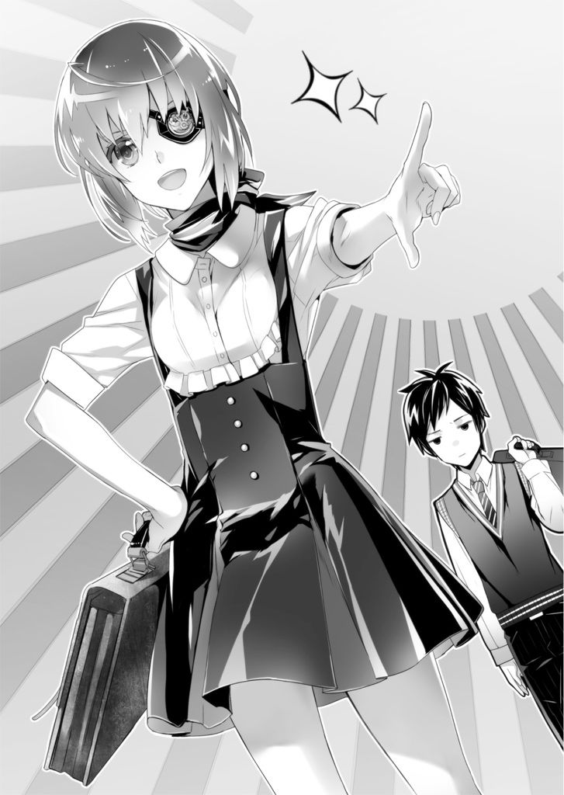
「いや、格好良いとかそういう話じゃないだろっ」
「さあ、学校に行こう！」
楽しげに告げる智花を見つめ、叡理は一気に不安が増すのを感じた。
「おはよう」
「おーっす。総上、ニュース観た？ 隣町でフェクター事件だってよ。マジで怖くね？」
教室に入るなり、友人の脇坂がやって来た。ペン型端末をくるくる回しながら、どこか嬉しそうに今朝のニュースを話題にする。
「フェクターって、実在してるんだよな......」
「何だよ、今さら？ 常識っしょ？」
「脇坂はフェクターに会ったことあるか？」
「俺？ 俺はあるわけねえじゃん。だってフェクターに会ったら殺されるんだぜ」
「そうとは限らないだろ」
「絶対そうだって。この隣町の事件も、通り魔っぽいし。血に飢えたフェクターが夜な夜な犠牲者を求めて彷徨ってるってな」
あくまで軽い調子の脇坂に呆れる。
結局、フェクターに対する感覚は、普通この程度だ。珍獣や何かと同列の扱いになっている。ほんの少し前まで自分も似たようなものだったと考えると、友人をバカにすることはできないけれど。
叡理は前方の席に目をやった。
そこには友人たちと楽しそうに喋っている佐嶋の姿がある。
昨夜とはうってかわって穏やかな顔をしていた。
「退屈な高校生活に、新たな刺激と潤いをお届け」
叡理たちの下に、友人の市川がやってくる。やけに上機嫌だ。
「Ａ組に超絶美少女が現れたぞ」
「何ぃっ？」
彼の言葉に脇坂が声を上げる。
「転校生かっ？」
「だと思うんだけどよー、それにしては普通に空いてる席に座ってんだよ。ほら、さっきＡ組行って撮ってきた。すげえ可愛いだろ。ちょっと不思議ちゃんっぽいけど」
携帯端末で撮った画像を、市川が叡理たちに送ってきた。
「うおっ、可愛いじゃねえの！ ......何で眼帯してんだ？」
騒ぐ脇坂の隣で、叡理はため息をつく。予想はしていたが、案の定、写っていたのは智花だった。机に頬杖をついてぼーっと空を見ている様は可愛いが、左目を覆う黒革の眼帯がかなり目立っている。
「今、Ａ組の前、人だかりができてんよ。転校生じゃなかったら、病気で休んでた生徒とか不登校だったとかか？ 眼帯してるし、やっぱ病気だったんかな」
「くっそお。うちにも転校生、来ねえかなあ」
チャイムが鳴る。脇坂と市川は席に戻っていった。少しして担任が教室に入ってくる。挨拶をして出欠を確認すると、白髪交じりのベテラン教師は、含み笑いを浮かべた。
「実は今日、うちのクラスに転入生が来ることになった」
教室内がどよめく。「よっしゃ！」と脇坂の声が聞こえた。
「男ですか？ 女ですか？」
誰かが尋ねる。男子も女子も期待に満ちた目を担任に向けていた。
教え子の反応に満足したのか、担任は「すぐに分かる」といなし、ドアの方を見る。生徒たちの視線もそちらに移った。
「入りなさい」
ドアが開く。
「失礼します」
男の声。女子生徒から歓声が上がった。対して男子は脱力する。
見慣れない制服を着た少年が教壇の横まで歩いてきた。担任に促され、黒板に自分の名前を書く。
「伊切公平です」
会釈した。クラスの女子たちが嬉しそうにヒソヒソ話し出す。
叡理は、転校生の顔を凝視した。
それから佐嶋の方を見る。
彼女は努めて無反応でいるようだった。隣の女子に話しかけられ、軽く返す。
「先に言っておくが、お前らと仲良くするつもりはない。ここには長居しないからな」
教室内のざわめきが、ピタリと止まった。
聞き間違いかな？ という視線が転校生に集まる。
しかし伊切は、ぎこちない雰囲気になってしまった中でも平然としていた。軽く眼鏡のつるを押さえて位置を整える。
「じゃ、伊切の席は、あそこだな。窓際の一番後ろだ。よし、ホームルーム終わるぞ」
担任は何ごともなかったかのように言い、教室を出ていった。
伊切の先制攻撃が強烈すぎて、一時限目が始まるまでの間、誰も彼に話しかけられなかった。授業中はもちろん、その後の十分休みでもクラスメイトは彼を遠巻きにするだけで、話しかけようとはしなかった。
そして昼休み。
叡理は脇坂たちの誘いを断り、連れだって教室を出た伊切と佐嶋の後を追った。
二人が屋上に出る。
今日は天気が良く、日差しが強いので屋上はかなり暑い。それでも昼食を食べている生徒は少なくなかった。隅の一角に伊切と佐嶋の姿を見つける。
「......の反応はなかった。放課後、これを全ての教室に設置する。礼は一階から頼む。俺は──」
近づいたところで、伊切が素早く振り返った。目つきが険しくなる。
「何か用か？」
「あ、総上くん......」
佐嶋が困った顔で叡理を見た。軽く頭を下げ、二人に歩み寄る。
「昨日ぶりだね、伊切くん。教室では話しかけ辛くて」
そう言うと、伊切は少し考える顔になった。
「ああ、狼男に襲われていた奴か」
「そう。それ」
「で、何の用だ。こっちは大事な話をしている最中なんだ。さっきも言ったが、お前らと仲良くする気はないからな」
「まあ、それは君の自由なんだろうけど......。ここに転入してきたのは『H.A.W.K.』絡みなんだよな？ この学校にフェクターがいるのか？」
「どうしてそう思う？」
叡理の問いには、質問が返ってくる。
「自己紹介のとき、君は長居しないって言ってた。つまり本当に転入したわけじゃなくて、一時的なものだ。俺が知る限り、伊切くんが一時的にこの学校に来る用事といったら『H.A.W.K.』関連しかない。
ただ、この学校には佐嶋さんがいる。ちょっとしたことなら、伊切くんが来る必要ないよね。そうなると、佐嶋さん一人じゃ荷が重い事態。わざわざ転入手続きをして校内に潜入しないといけないってことは、この学校にフェクターがいるってことじゃないかな」
午前中、考えていたことを話してみせた。
「悪くない読みだ。じゃあ、今すぐ回れ右して立ち去れ。これ以上、関わるな」
伊切はそっけない。佐嶋が何か言いかけ、しかし口を噤んだ。
「校内にフェクターがいるんだろ？ 部外者でいられるわけがない。みんなに警告を発した方が良いんじゃ？」
叡理はまだ引かない。伊切は不機嫌そうに顔を歪め、周りを見回した。
「少し音量を下げろ。俺たちの会話を気にしてる連中なんていないだろうが、おおっぴらに話せる内容じゃない」
そう言って手招きする。叡理は彼に近づいた。
佐嶋もそろそろと二人に寄ってきて、背を向ける。他の生徒が近づいてこないよう見張るためだろう。
「警告は発しない」
伊切は言い切った。
「いたずらに混乱させるだけだ。それに相手を警戒させることにもなる。今、俺たちが追ってるフェクターは用心深い奴だ」
「用心深い？」
「ああ。コードネームは『蛇』。総上、お前、今朝のニュースは観たか？」
「今朝の？ 隣町の繁華街でフェクター事件が起きたって......」
「それだ。一週間前の事件なんだがな。警察もとうとう報道規制を解いた」
「でも、あれは隣町の事件だろ？」
「隣町だけじゃない。『蛇』はあちこちにばらけて人を襲っているんだ」
「じゃあ、どうしてこの学校に？」
「ここだって言ってるのは、コウちゃんだけなんだけどね」
佐嶋が小声で告げる。
「警察も他の『H.A.W.K.』隊員も別の場所を調べてるのに、コウちゃんだけはここが怪しいって言って」
「礼、ちょっと黙ってろ。総上、捜査情報をお前に話す理由がない。昨夜、酷い目に遭ったばかりだろうが。冗談抜きで命がかかってるんだ。これ以上首を突っ込まず、この件は俺たち『H.A.W.K.』に任せておけ」
「せめて警告を発しない理由を教えてくれよ。それこそ、俺たちの命がかかってるんだ」
伊切は息をついた。
「......単純に、確証がないからだよ。ここに『蛇』がいる可能性は低い。礼も言ってたが、俺以外は別の場所を調べてるんだ。転校の手続きも、無理を言って通してもらった」
「これまでのコウちゃんの活躍が、ものをいったよね」
「だから、警告を発しても校内を混乱させるだけかもしれない。もう少し調べて、確信を持てたら警告する。ここの校長にも話を通してあるから、その点は安心しろ」
「そうか。......伊切くんが、ここに『蛇』がいるって考えてる理由は何？」
「総上。それは言う必要がない。もういいだろ？ 俺たちも暇じゃないんだ」
伊切は話を打ち切る。二人とも屋上から立ち去ってしまった。
「............」
『ううん。もう少し詳しく話を聞きたかったねえ』
唐突に智花の声がして、左右を見回す。しかし彼女の姿は見当たらなかった。
『ここだよ、エーリ。こっち、こっち』
声の出所を探っていくと、じきに腕時計へ行き着いた。左腕に巻いた時計から智花の声が聞こえてくる。
「トモ。これ、腕時計じゃなくて盗聴器だったのか？」
『ちゃんと時計機能も備わっているよ。他にも機能が満載されている優れものだ』
「趣味が悪いな」
「まあまあ、そう言わずに。ボクとエーリを繋ぐ大切なものなんだから。外そうだなんてしないことだね」
今度の声は時計からではなかった。
振り返る。左目に黒革の眼帯をした少女が、周囲の目を全く気にすることなく叡理の下に歩いてきた。
「やあやあ、エーリ。四時間三十分ぶり。なかなか興味深い話をしてたみたいだね」
「この学校にフェクターがいるって、本当かな？」
声を潜めて言う。智花も叡理に身を寄せた。
「そこはまだ分からないけど、『蛇』については興味あるね。ところで、エーリはどうして伊切くんから情報を欲しがったのかな？」
「それは......学校が終わってから、家でゆっくり話そう。トモはどうして興味を？」
「ううん。それじゃあ、ボクもそのときに話すよ。伊切くんの読みは悪くないと思うんだ。これから少し騒がしくなるかもね」
智花が叡理を見つめる。
「トモ。オラクルの感染率は０・００１％未満だって言ってたよな」
「ああ、そうだよ。オラクルの種類によって確率はいくらか変わるけどね」
「だとしたら、人口をざっと一億としてもフェクターは全国に１０００人しかいないことになる。この場合、たった１０００人と言っていいよな」
「その通りだね」
叡理は頷いた。
「だとしたら、やっぱり異常事態だ......」
昨夜の「狼男」に続き、「蛇」も近くにいるかもしれない。
『こレから気をつけロ。どいつもコイつも、お前の敵になルぞ』
昨夜の狼男の言葉が蘇る。
何が起きてる？ 俺の出生と関係があるのか？
薄ら寒いものを感じた。
そんな叡理を、智花は眼帯の裏の無機質な左目で見ていた。
ＣＯＤＥ：００４
「ただいま」
帰宅する。慧の声が台所から聞こえてきた。
「お帰りなさい......」
「お邪魔するよ」
叡理の後から智花が家に入る。二人で台所を覗いた。慧が振り返る。
「久し振りだねえ、ケイ。ボクのこと覚えてるよね？ トモだよ」
「トモちゃん......いらっしゃい」
それだけ言い、すぐに身を隠してしまった。「おやおや」と智花が含み笑いになる。
「慧っ。久し振りなのに、そっけなくないか？ お前だってトモのこと心配してただろ」
叡理は台所に入る。「先に行ってるよ」と智花は叡理の部屋に歩いていった。
「慧？ ......何か薄暗いな」
室内の暗さに周囲を見回す。台所の窓には、カーテン代わりの布が張られていた。電灯をつけていないので、夕日が布越しに微かに入ってくるだけで全体的に暗い。
「慧。何やってるんだ？」
妹は冷蔵庫の陰で体育座りをしていた。ムスッと膨れ面になっている。ただ、そんな表情も叡理には愛らしく見えた。
「何で、トモちゃんが家に来るの？」
こちらを見ずに訊いてくる。叡理は腰を下ろして妹と目線を合わせた。
「ちょっと話があるから来てもらったんだよ。というか、慧も三年ぶりだろ？ 久し振りの再会をもっと喜ぼうよ」
「............」
慧はそっぽを向く。
「......朝のことは、不可抗力なんだって」
思い当たる節としては、それしかなかった。しかし妹は頭を振る。
「......夕飯」
「ん？」
「夕飯、もしかしてトモちゃんも一緒に食べる気？」
「あ、そうだな。そうしようか？ 慧だって積もる話があるだろ？」
「別にっ......」
全身から不機嫌オーラを放ち、慧は立ち上がった。リビングに歩いていく。
「おい、慧っ......」
「私のことは放っといて、トモちゃんと仲良くお喋りしてきたらっ」
ソファに寝転がってしまった。
叡理はハアと息を吐く。
リビングも薄暗い。カーテンを締め切ってあって、西日がほとんど差し込んでこないのだ。ソファに寝ている慧の姿は暗がりに沈んでよく見えない。
「まだカーテン引くような時間じゃなくないか？ 今は日が長いし、もう少し開けておいても......」
窓際により、カーテンに手を掛ける。
「やめて！」
瞬間、慧が叫んだ。
振り向くと、ひどく切羽詰まった顔でこちらを見ている。叡理はカーテンから手を放した。妹を注視する。
「......日焼けしたくないから」
力のない声で付け足し、慧はまたソファに伏してしまった。
「ああ、ごめん。そうだな。夏の日差しは強すぎるもんな」
叡理はなるべく優しく言い、「部屋にいるから」と告げてリビングを後にする。
冷蔵庫から麦茶を取り出し、コップを二つ持って部屋に向かった。ドアを開けるなり、ベッドに座って枕に顔を埋めている智花の姿を確認する。
「何をしてるんだ、トモ」
「ああ、エーリ。やっと来たのかい。あまりに暇だったもので、生物学的にとても重要な研究の実地調査を行っていたところだよ」
「......ちなみに、どんな研究？」
「『匂いがホルモンに及ぼす影響について』という論文タイトルにしようと思う」
「人の枕の匂いを嗅ぐなっ」
智花から枕を奪い取った。物欲しそうに彼女が指を咥えるが、それは無視してテーブルを出す。麦茶を注いで手渡した。
「それで、どっちから話す？ 俺からいこうか？」
「いや、ボクからいこう。その方が話が早そうだ」
智花がベッドに腰掛けて居住まいを正す。
「エーリ。ボクは、君のお父さんの研究所で働いていた」
「!? それじゃ、まさか......」
目を見開く。智花はその反応で察したようだ。
「君、実の父親が誰なのか、知ってるんだね」
「......うん。少し前にね。母さんから、メールが来たんだ」
「それは、総上の母親ってことだよね、もちろん」
叡理は携帯端末を弄り、メールを開く。
智花に見せた。
「メールで知らせるには重い内容だと思うけど、そうか、総上家にも......ううん。急いだ方が良さそうだね」
メールを読みながら彼女が呟く。
叡理は、もはや暗記してしまった文面を読み返した。
あのメールの、後半部分。
『引き取ってから、私たちもなるべくあなたに過去を思い出させないよう努めました。何か思い出したくない辛いことがあったのだと思ったから。
でも、今となってはそれが正しい判断だったのかも分かりません。
叡理、あなたの実の父親は天満博士です。日本でも報道されていますよね。世界中にオラクルをばらまいたといわれている研究者。行方不明になっている彼が、あなたの本当の父親です。
このことが、あなたに災いを呼ぶかもしれません。心ない言葉が投げかけられるかも。そのことがずっと気がかりでした。幸いにも、あなたのことを知る人は限られています。このまま知られることがないよう願います。
あなたを守るため、母さんも父さんもあらゆる手を尽くします。だから叡理、どうか慧をお願いします。血は繋がっていないけれど、あなたたちは兄妹なのだから。妹を守ってあげて。身勝手な頼みだと承知の上で、それでもお願いしたいの。
この後、私たちとは連絡が取れなくなるでしょう。でも、心配しないで。きっと全てが上手くいきます。それまで二人仲良く、力を合わせて生きて下さい。
私たちの大切な息子へ』
「なるほどね」
智花が頷く。
「トモは、その......天満博士のところで、どんな研究をしていたんだ？」
父親とはとても呼べず、叡理はそう尋ねた。
「オラクルの研究だよ」
彼女はあっさり答える。
「といっても、ボクが研究チームに加わったときにはオラクルの理論はほぼ出来上がっていてね。ボクはそれに少し修正や改良を加えてデザインした程度だ。博士は天才だったよ。あの人は本当に凄い人だった」
「でも、そのせいで今、世界中で事件が起きている......」
「ううん。そのことについてなんだけど」
ベッドにあぐらをかき、智花は虚空を見つめた。
「世間で言われてる天満博士に関する報道。あれ、ほとんど嘘だよ」
「嘘？ それは、どういう意味？」
「ああ、オラクルを作り上げたのは天満博士で間違いない。それを拡散させたのも、結果的には博士だね。でも、天満博士がセントラル・メディックの一研究員だったっていうのは大嘘だ」
叡理は彼女の話を聞く。
「そもそも逆なんだよ。博士の研究をサポートするためにセントラル・メディックが作られたんだ。資金と設備を提供してくれるところなら、博士はどこだって良かったんだろうね。それがたまたまセメディだったってだけだよ。
エーリも知ってると思うけど、あそこの社長。鷲崎善良。あいつが博士にくっついて、言う通りに動き回ってた。博士は研究一筋の人だったから、あの屑野郎の本性とかどうでも良かったんだろ。
それでオラクルが出来たとき、ああ、いや、正確にはネメシスが出来たときだ。その頃から博士と鷲崎には亀裂が生じ始めたみたい。ネメシスを利用して大儲けしようと企んだ鷲崎と、あくまで人類の進化にのみ興味を持っていた博士との間にね」
「人類の進化？」
たまらず口を開いた。
「オラクルと人類の進化に、何の関係があるんだ？ トモ、君は......天満博士は、一体何がしたかったんだ？」
「だから、進化だよ、エーリ」
智花が身を乗り出してきた。
こちらを覗き込む彼女の瞳は、いつものそれと違う。どこか違う世界を見ているような、深遠な闇を湛えていた。
「エーリ。この世界の法則は『適者生存』だ。環境にいち早く適応した種が生き残る。最も強大な力を持った種でも、最も複雑な思考回路を持った種でもない。進化と一口に言うけれど、それはすなわち『生存確率の高い種になる』と言い換えられるんだ。少なくとも博士はそう定義した。ボクもそう考える」
「それで？」
「生存確率を高めるためには、どうすればいいかな？ これはボクや君といった単体の話じゃなくて、人類という種全体の話だよ。種の全てが生き残らなくてもいいから、絶滅を免れて人類という種を生き存えさせる方法だ」
「確か......多様性を確保すること、じゃなかったかな。どんな環境変化が起きるか分からないなら、あらゆる可能性に対応できるよう、色んな種類を前もって準備しておく」
「そう。その通りだ、エーリ。現在の環境下では何の役にも立たない、もしかするとハンデとすら思えるような特徴でも、多様性の確保という点では有意義だ」
智花の口元に無機質な笑みが浮かぶ。
「細かいことは省くけど、博士はこう考えたんだ。人類の多様性を更に広げる。それこそが新たな進化に繋がるって。そのための『準備』も、実は整えられていた」
「準備？」
「エーリ、どうしてオラクルやネメシスはただのプログラムに過ぎないのに、人体に影響を及ぼせると思う？ 単なる映像と音声を視聴するだけで体が変化するなんて、にわかに信じられない現象だろ？」
「......それは、確かに不思議だけど。トモはその原理を知ってるの？」
「もちろん。ただ、説明するのは簡単じゃない。おおまかにいうとね、音も光も、波なんだよ。音波って言葉は聞いたことあるよね？ あれと同じように光も波なんだ」
叡理はとりあえず頷く。
「オラクルを構成している音波と光波は、人体の遺伝子に大きく関わっているヒストンって物質に強く作用するんだよ。独特の振動を与えることでヒストンを変質させるんだね。変質したヒストンは内包している、ああ、もう少し細かく言うと巻き付いている遺伝子に向けて幾つかの酵素を放出する」
「......いきなり、よく分からないな」
「だろうね。とにかく、この酵素が遺伝子に作用して人体の設計図を書き換えてしまう。いや、この言い方は不十分だ。転写時に本来発現されないはずの遺伝情報のスイッチを入れると言った方がいい」
「ますます分からなくなってきたけど、そんなこと本当にできるのか？」
「できるんだよ。それが可能な波形パターンを見つけ出し、プログラムする方法を博士は開発したんだ。ただ、全ての人類に有効なわけじゃない」
彼女が含みのある顔になった。
「さっき話した、ヒストン。これが変質しやすい人がいるんだ。普通に生活している分には何の支障もない。一生、気づくことなく人生を終える人もざらだ。ただ、確実にヒストンを変質させやすい人が一定数いる」
「......『準備』って言ってたのは、そこか」
「そう。博士はこう考えたんだ。遺伝子に直接干渉できる方法を、人体の方が準備してくれている。オラクルによる進化は必然なんだってね」
狂気。
叡理の頭には、そんな単語が浮かんでいた。
智花のことを悪く思いたくはないけれど、話を聞く限り、どこか常軌を逸したところがあるように思えてならない。これが研究者というものなのだろうか。そして、自分の父親である天満博士はその筆頭だったのか。
「その人たちだけが、オラクルに感染するってこと？」
あえて自分の感情は出さず、質問を口にする。
「だけとは限らないけど、今のところはそうだね。博士も、もっと感染率を高めてから拡散しようと考えていたようだ。それに、手順だって慎重に検討していたんだよ。オラクルが人類進化の新たな扉を開くものだとしても、実際にどんなことが起こるか誰にも予測できなかったんだからね」
「じゃあ何で、中途半端なままオラクルを世界中にばらまいたんだ？」
「博士が死んだからだよ......」
不意に、智花の声が沈んだ。
「セントラル・メディックに、鷲崎に殺されたんだ。オラクルを利用した利益の独占を目論んだ俗物どもにね」
智花は俯き、拳を握りしめる。
眼帯で隠されていない右目に、怒りの炎が宿った。
「......博士は、鷲崎がろくでもないことを企んでるって気づいてた。だから保険をかけたんだ。自分の心臓が停止したら、その瞬間、インターネット上にオラクルプログラムが拡散されるようにね」
「天満博士が、殺された......」
それはセントラル・メディックを通じて発表された情報とは異なる。
「博士だって、あんな拡散は本意じゃなかった。鷲崎との交渉カードとして準備しておいたんだよ。でも、あいつは博士を殺したっ。ボクは、その現場を見てた......」
「なら、警察に」
「言ったよ。......匿名で通報したんだ。ボクは公式には研究所に名前がなかったから。だけど、警察は研究所の玄関で追い返された。匿名の通報だけじゃ強くは出られなかったんだろうね。しかも通報した『裏切り者』の捜索が始まって、それからしばらく、自分が逃げるのと両親を安全なところに避難させるので手一杯だったよ」
「そうか......もう一度、改めて告発するっていうのはどうかな？」
「今は無理だね」
叡理の提案は冷たく切り返された。
「日本の現状を見ても分かるだろ。セントラル・メディックは政府としっかり繋がって強固な関係を築いてる。はっきり言って政治家も官僚もオラクルのことはまともに理解できていないんだ。鷲崎たちの話を鵜呑みにして言われるままに『対策』を講じるしかない。そうなるよう、あいつらが情報をコントロールしたっていうのもあるけどね」
「じゃあ、全てセメディの、その鷲崎って人の思い通り？」
「概ね、そういうことだね。エーリも体験しただろ。警察と『H.A.W.K.』の繋がりも強い。ネメシスを無償配布したことでセメディは全世界から救世主扱いされてる。あんなもの、何の役にも立たないのにねっ」
聞き捨てならない言葉に、叡理は智花を凝視した。
「何の役にも立たない？ ネメシスが？」
「そうだよ」
彼女はこともなげに答える。
「元々、ネメシスはオラクル開発の過程で生まれた失敗作なんだ。あれは一時的にしか人体を変化させられない。転写が繰り返されていくうちに酵素が出なくなるんだ。それで数分経つと元の体に戻ってしまう。博士の目指した進化の役には立たないんだよ」
「でも、ネメシスを投与すればオラクルの感染は防げるんだろ？ いわゆるワクチンと同じ原理で、耐性ができて」
「ああ、それも嘘。大嘘だよ」
「ええっ？」
さすがに椅子から立ち上がってしまった。
眉を顰める叡理に、智花は困ったような目を向ける。
「エーリ、ニュースを鵜呑みにするのは止めなよ。まして事の発端であるセメディからの情報を、全て真実であるかのように受け入れるなんて愚かしいね。あいつらは加害者だよ。加害者の言い分を真に受けてどうするんだい」
麦茶を一口含み、「まあ仕方ないことなのかな」と彼女は付け足した。
叡理は腕を組む。
「それじゃ、配布されたネメシスは？ あれは何の意味もないのか？」
「混乱を治めるって効果はあったみたいだね。それで鷲崎は、まんまと英雄に成り上がったわけだけど。主導権を握りたかったんだろうな。オラクル騒動に関して」
「でも、フェクター関連の事件は、ネメシスが配布されてから確かに減ったはずだ。そのデータも嘘なのか？」
「嘘というより、バカがおとなしくなっただけだね」
「バカ？」
「日本で起きた『悪魔』事件。あれは間違いなくフェクターの仕業だ。でも、他の事件はどうなのかな？ 一見、フェクターの仕業に見えるけど、ただの猟奇殺人だったのかもしれない。フェクターに罪をなすりつけるため、偽装されたものかもしれない」
「模倣犯ってやつか」
「そんなところ。むしろ火事場泥棒の方が近いかな。混乱に乗じて何でもかんでもフェクターのせいにしていた連中が、ネメシスの配布でなりを潜めただけってこと」
「............」
さっきから信じられないことの連続で、どうしても智花の話を素直に受け入れられない。そんな叡理の苦悩を見て取ったのか、智花は少し寂しそうに微笑んだ。
「少し、話しすぎたね。いきなりあれこれ言われても、思考はともかく感情が追いつかないだろう。それに、三年も姿を消していて唐突に現れたボクの言うことを早々鵜呑みにはできないよね」
「......ごめん。でも、正直、その通りだ。トモのことは信じたい。だけど、よく分からない。きっと判断材料が少なすぎるんだ」
パンと智花が手を叩いた。
「よし。ボクの話はこのくらいにしよう。次はエーリの番だよ」
「俺？ ああ、屋上でのことか」
「そう。『蛇』について、随分熱心な様子だったじゃないか」
叡理は麦茶に口をつける。
「......母さんからのメールを読んだ後、自分なりに天満博士のことを調べたり、子どもの頃のことを思い出してみようとしたりしたんだ」
「何か、思い出せたのかい？」
「いいや。何も。考えてみると変なんだ。俺は、この家に来る前の記憶がまるでない。微かに思い出せそうなときもあるんだけど、すぐに靄がかかって上手くいかなくなる。母さんのメールにもあったけど、何かあったのかもしれない」
コップの麦茶を飲み干した。
「俺は、天満博士の息子としてオラクルやネメシスとは無関係でいられないと思ってる。そして昨夜、狼男に、フェクターに遭遇した。あいつは妙なことを言っていた。これから俺の周りは敵だらけになるって」
「それは、興味深いね......」
智花が何か考えるように眉根を寄せる。
「あのときは訳が分からなかった。でも、すぐに『蛇』が近くにいるかもしれないって事態になった。これは確率的に異常だろ？ 狼男は、俺がフェクターに狙われてるって言いたかったんじゃないか」
「本当にそうなら、危険だね。それで、エーリは自分から接触して確かめてみたいと考えたってことかな？」
「それもあるけど、慧に累が及ぶかもしれないって不安の方が強いんだ。あいつを守るために先手を取りたい。今度は慧が襲われる恐れだってあるんだから」
叡理の言葉に、彼女は少し悔しそうな顔になった。
「ふうん。一応、言っておくけど、博士がやったことに対してエーリが気に病むことは何もないよ。まあ、世間ってやつは冷たいから、もし君が博士の息子だってバレたら非難するバカも出てくるだろう。総上のお母さんが心配していたように」
「それについても、慧を守らないといけないと思ってる。俺の妹ってだけで変な目で見られたりしないように」
「やれやれ。ケイが羨ましいね。ボクも最大限、協力するよ」
「ありがとう、トモ」
「気にすることはない。ケイはボクにとっても義妹になるんだから」
何かニュアンスの違いを感じたが、叡理はあえて触れなかった。
「ところでエーリ。君は自分が博士の息子であることを誰かに話したかい？」
「いや、トモに話したのが初めてだ。まだ、慧にも話してない」
「ほほう。ケイにもかい。それじゃケイは君が実の兄ではないと、まだ知らないわけだ」
「そうだ......。それが、どうかした？」
「誰にも言っていないのなら、それでいい。ケイはともかく、友だちにも決して喋らないようにね。どこで情報が洩れるか分からないから」
「とても言えるようなことじゃない」
「その慎重さは大切だ」
「慎重なんじゃなくて、臆病なだけなんだけど」
肩をすくめる叡理に智花は微笑む。
「いいんだよ、それで。余計な荷物を背負うことはない。エーリはケイとボクのことだけ考えていればいいんだ」
「何気に自分も入れてきたな」
「当然だろ。これから長い付き合いになるんだから」
「あ、ああ。そうだな......」
智花の言い方には、どうしても別の意味があるように思えてならない。
「鷲崎たちセメディも君のことを捜しているよ。エーリの顔や名前は知らないけど、博士に一人息子がいるってことは知ってるから」
「セメディが俺を？」
「色々、利用価値があるんだよ」
智花の右目が細められた。
「エーリには何か、自覚はないのかな？」
「自覚っていわれても、特に......。そういえば、トモは鷲崎と面識があるのか？」
「ううん。鷲崎はボクのことを知らない。さっきも言ったけど、ボクは公式には研究室に名前がなかったんだ。当時、小学生とか中学生だったからね。博士はボクを、研究チームの中でも限られた人にしか会わせていない」
「じゃあ、トモはどうして鷲崎のことを？」
「物陰からこっそりとか、マジックミラーで覗き見とかね。ボク専用の隠れ場所を博士は作ってくれていたんだ。それのお陰で、あの現場を見ることになったんだけど......」
「天満博士の、殺害現場......」
「証拠映像はここに記録してある」
智花が左目の眼帯を指さす。
「でも、今、暴露したところで握り潰される。こっちの身が危うくなるだけだし、もう少し状況を好転させてから反撃にでるよ。そのときは、できれば、エーリにも手伝ってもらいたいんだけど」
最後は随分と控えめに言った。叡理は笑ってしまう。
「手伝うに決まってるだろ。天満博士のことは、まだよく分からないけど、トモのためならどんなことだってする」
「そ、そうかい。まあ、そう言ってくれると予想はしていたんだけどねっ」
そう言いながら、智花は頬を赤らめた。
リビングはすっかり暗くなっていた。
叡理は智花を玄関先で見送ってから室内を覗いたのだが、ソファに妹はいない。
部屋に戻ったのかと妹の部屋の方を見やる。と、台所から物音がした。
「慧？」
珍しいことに慧が料理をしていた。包丁を手に真剣な顔で人参を切っている。手つきが危ういが、その背中からは迂闊に話しかけられないオーラが出ていた。
トン......トン......と不格好ながらも一口大に切られていく人参。
ようやく一本分切り終えたところで、慧がまな板の上に包丁を置いた。ストンと肩から力が抜ける。
「夕飯作ってくれてるのか？」
声をかけると、ピクンと肩が揺れた。少しだけこちらを振り向き、膨れ面になる。
「......三人分、あるよ」
「トモは帰ったよ。やることがあるんだって」
「......そうなんだ」
ほんの少し、表情が緩んだ。
「どうしたんだよ？ 前はトモと仲良かっただろ」
「別に、トモちゃんが戻ってきたことは嬉しいけど......」
切った人参をボウルに入れながら、慧はぽつぽつ答える。
「急にいなくなって、急に帰ってきて、何だか怪しい」
「まあ、事情があったんだよ」
「事情って何？」
慧が振り返った。叡理は口ごもってしまう。
「秘密なんだ......。お兄ちゃんは、私に隠しごとするんだ」
「いや、そういうわけじゃないけど......」
「別にいいよ。私だって、お兄ちゃんに隠しごとの一つや二つあるものっ」
ふんとそっぽを向き、料理を続ける。今度は牛薄切り肉を切り始めた。
「慧は、俺に隠しごとしてるのか？」
動揺していることを悟らせないよう、なるべく軽く聞こえるように尋ねる。
慧が包丁を置いて叡理に向き直った。
「してるよ。......私、お兄ちゃんにずっと隠してることがあるよ」
堂々と言い切られ、言葉を失う。
「そ、そうか。まあ、そんなもんだろ。兄妹だからって、何でもかんでも知ってないといけないってこともないし。普通だよ、普通」
笑ってみせた。声が乾いている。
「普通じゃないよ」
ところが妹は、さらに言葉を重ねてきた。
「普通じゃないよ。私のは。普通じゃないんだよ......」
キッと挑むような目で見つめられ、叡理は笑顔を引っ込める。
見つめ返すと、慧の方が目を逸らした。
「お兄ちゃんには、分かんないよ......」
そう呟いて、また料理に戻る。コンロに鍋を置いてサラダ油を引いた。
「まだ時間かかるから、部屋に戻ってて」
「何か手伝おうか？」
「いい。一人でできるから」
「そうか」
仕方なく台所を後にする。
「お兄ちゃん」
出ていきかけたところで呼び止められた。
「今夜は、出ていかないでね。家にいてね」
「......分かった」
妹の背中に、そう答えた。
『オラクル 感染率』
検索する。セントラル・メディックのＨＰがトップに出た。
『オラクルの正確な感染率については、現在も調査中です。オラクルには種類があり、それらには感染率に大きな差が見られます。調査機関からの報告によりますと、０・１％から０・５％の範囲という試算が出ています。皆様の厳重な注意をお願い致します』
『デジタルワクチン・ネメシスの投与についてはこちら』
他の検索結果を見てみる。幾つかの個人ブログを覗いてみたが、感染率について憶測以上のものは見当たらなかった。
ＳＮＳの書き込みに至っては、都市伝説レベルの話題しか載っていない。さらに探っていっても、ただの誹謗中傷にしか行き着かなかった。
「０・１％っていったら千分の一。日本だけでも、ざっと十万人はフェクターがいることになる。トモが言っていたこととまるで違う」
宙に浮かぶ画面を見て、叡理は唸った。
午後九時過ぎ。
慧が作った肉じゃがをおかずに夕食を食べた叡理は、皿洗いを済ませた後、もう一度オラクルやネメシスについて調べてみることにした。
しかし、成果はあまり芳しくない。ネットに出回っている情報自体が少ない上、検索に引っかかったサイトに行ってみても、信憑性の薄い内容だったり、単に個人の意見を書き連ねているだけだったりで何の参考にもならなかった。
智花が言うには、セメディは信用できない。だけど、それ以外で信憑性のある情報を発信しているものが見当たらない。
これじゃ、トモの言うことを裏づける手がかりが見つからないな......。
椅子の背もたれに寄りかかる。
ふと、シャワーの音が聞こえてきた。
「............」
叡理は端末から無線イヤホンを外して耳に押し込む。音楽アプリを起動させて適当に音楽を流し始めた。息を吐く。
『私、お兄ちゃんにずっと隠してることがあるよ』
慧の言葉が耳に蘇り、声を上げそうになった。
「どうして、こんなに情報が少ないんだ？ フェクターは世界中で問題になってる一大事件のはずなのに」
あえて考えを口に出し、一人ぶつぶつと考える。
「そういえば、フェクターの目撃情報なんかがネットに流れることもほとんどなくなったような......。前はもっと騒ぎになって、それで大半がデマで、一時期フェクターなんて実は存在しないんじゃないかって言われたりもしてたよな......」
ある仮説が閃いた。
「情報統制されてる？」
誰かが常時インターネットを監視し、フェクター関連の情報を片っ端からチェックしている。そして都合の悪いものを即座に消去しているとしたら。
「いや。まさか、そんな......あり得ない、か？」
智花の話を一旦全て受け入れてみれば、可能性は十分にある。
「......でも、そんなことをして何になる？ やっぱり、オラクルやネメシスに関して知られたくないことがあるのか？」
それからしばらく検索を続けてみたが、有意義な情報は見つからなかった。
ノックの音に振り向く。
「慧か？ どうした」
イヤホンを外して返事をすると、寝間着姿の妹がドアの隙間から顔を出した。
「お風呂、上がったよ」
「ああ、うん。分かった」
返事をしても、慧はドアを閉じようとしない。
何か言いたそうにしているので、叡理は「どうした？」と椅子ごと向き直った。
「......さっきの、肉じゃがだけど」
「ああ。だから、美味しかったって。さっきも言ったろ」
夕食に出てきた妹の手料理を思い出すと、甘酸っぱい気持ちになる。味はともかく慧が作った肉じゃがというのが重要だった。
「違うの......」
しかし、そんな言葉では満足いかなかったらしく、慧は口を尖らせる。
「本当は、もっと上手に作れるんだから......。今日はたまたま......」
たまたまも何も、慧が肉じゃがを作るのは今日が初めてだったと思うのだが、叡理は言葉を飲み込んだ。
「トモちゃんは、料理なんか作れないでしょ」
足下を見下ろしたまま、そんなことを言う。
「トモは全くやらないタイプだろ」
「じゃあ、私の勝ちだよね」
「勝ち？ 何が？」
「......もういいっ」
慧はバタンとドアを閉じてしまった。
「......今のは、どう解釈すればいいんだ？」
最近、妹の言動には戸惑ってばかりだ。
「風呂、入るかな」
気持ちを切り替えようと椅子から立つ。側のゴミ箱に目が止まった。
昨夜つっこんだ、血まみれのシャツがなくなっている。
「慧が片付けてくれたのか？ あいつ、俺がいない間に部屋に入ってるのかよ......」
ＣＯＤＥ：００５
「昨日のうちに、ある程度調べておいたんだ」
翌日の放課後、学校を出たところで智花が切り出した。眼帯に軽く触れる。
叡理の端末が反応し、目の前に町の周辺地図が映し出された。赤い矢印が五つ、不規則に点在している。
「トモ、これ何？」
「『蛇』の事件が起きた場所を示した地図だよ。他にも、警察の捜査資料をダウンロードしてるから、好きなものを見ることができる」
「......どうやって手に入れたんだ？」
「ううん。非合法な手段とは言い切れないんだよ。せいぜいグレーってところかな」
「もう真っ黒な予感しかしないんだけど」
「ひどいなエーリ。ボクは身も心も純白な清い乙女だよ。これは『H.A.W.K.』のメインシステムから警察のデータバンクにアクセスして手に入れたんだ」
「やっぱり黒だろっ」
叡理は左右を見回す。通行人は別段、二人に注目していなかった。
「トモならハッキングなんて簡単なんだろうけど、そういうのダメだからな」
「だからグレーなんだって。まず『H.A.W.K.』は警察と情報を共有しているんだ。あそこのメインシステムからなら警察のデータバンクに正規にアクセスできる」
「でも、トモは『H.A.W.K.』じゃないよな」
「エーリ、『H.A.W.K.』の母体はどこだい？ セメディだろ。ボクはセメディのシステムにアクセスする権限を持っているんだ。それも、鷲崎たちに気づかれないよう入る『裏口』を博士に作ってもらっていた。そこから入っただけだよ」
「トモが一気に胡散臭く思えてきた」
叡理は頭を抱える。「ひどいなあ」と笑う彼女を引っ張り、目に止まった全国チェーンの喫茶店に入った。
「どうしたんだい、エーリ？ 急に喉が渇いたのかな？」
「そうだよ。ここで一息ついて、ゆっくり捜査資料を読みたいと思ってね」
智花が満足そうに頷く。
「察しが良くて助かるよ、エーリ」
「どういたしまして。俺も『蛇』については詳しい情報が欲しいと思っていたんだ。この際、ありがたく見せてもらいますよ」
二人分のコーヒー代を払い、叡理はトレイを手に二人席を探した。
最初の事件は五月頭の火曜日。
ゴールデンウィーク中に起きた。被害者は四二歳の男性。繁華街の路地裏で上半身を失くした状態で発見された。遺体の損傷が酷かったので身元確認に手間取ると思われたが、遺体が発見された当日には身元が判明している。
死亡推定時刻は前日の午後八時から十時の間。
二件目は五月終わりの月曜日。
被害者は二八歳の男性。自宅近くの公園で上半身を失くした状態で発見される。その日は雨が降っており、やはり身元確認は難しいと考えられたものの、こちらもすぐに身元が判明した。死亡推定時刻は前日の午後六時から八時の間。
三件目は六月第二週の水曜日。
被害者は三六歳の男性。前二件と同じように上半身を失っていた。発見場所はラブホテル裏の空き地。身元はすぐに判明している。死亡推定時刻は前日午後十時から十二時の間とみられる。
四件目は六月第三週の日曜日。
被害者は五四歳の男性。上半身が失われ、繁華街の路地裏に放置されていた。身元は判明している。死亡推定時刻は深夜二時から四時頃と推測される。
五件目は六月最後の月曜日。
被害者は四六歳の男性。風俗店裏のゴミ箱の中に下半身だけが捨てられていた。身元の特定はすぐに行われている。死亡推定時刻は午後十時から十二時の間。
細かい現場の状況。関係者からの証言。遺留品や現場、遺体の写真。科学的考察による知見等々。
「............」
一通り資料を読み終えた叡理は、胸のむかつきを押し流そうとコーヒーを口にした。香ばしい苦みが今は心地よい。
「えぐいな」
「えぐいねえ」
捜査資料を同じように見ていながら、智花は平然としていた。生クリームのたっぷり乗ったパフェのような飲み物を飲んでいる。いや、スプーンがついているので食べているというべきか。
「現場の写真は、さすがにきつかった。ものの見事に腹から上がなくなってるな」
どうやら『蛇』は、被害者の上半身だけを食らったようだ。
「かなり特殊な遺体だね。......全身丸ごとは、食べてない」
「そこ、何か気になるのか？」
「ううん。ボクの予想と合致してるのかもね。ところで、被害者だけど」
「......男性って以外に共通点がないな。いや、あるにはあるのか」
叡理は捜査資料の画面をスライドさせる。五人分、確認した。
「全員、警察にマークされてる」
「そうだね。上半身がないなんて異常な遺体なのに、あっさり身元を確認できたのは前々から警察にマークされてた人物だったから。有り体にいうと、こいつら全員ゴミだね」
智花のあっけらかんとした発言に、叡理は苦い顔になる。
「はっきり言うなあ......。まあ、俺も同意見だけど」
五人が五人とも、犯罪に手を染めていながら巧みに立ち回って警察の追及から逃れている連中だった。特に未成年者に対する犯罪が疑われていたが、警察は逮捕に繋がる証拠を掴めずにいたようだ。
「恨みを買ってる相手が多すぎて、警察の捜査は難航してるみたいだね。フェクター事件ということになってホッとしてる人も多いだろう。フェクターのことなら『H.A.W.K.』に押しつけることもできるし」
「連携してるのには、そういう思惑もあるのか。警察もしたたかだな。でも、これだけ見ると『蛇』が正義の味方に見えてくるよな」
叡理は軽口を叩いたつもりだったが、存外、智花は真面目な顔になる。
「ボクもそう思う」
「え？ トモも？」
「うん。エーリ。この事件は無差別殺人じゃないよ。犯人は被害者を選んで襲っている。なるべく殺しても良さそうな人間を選んでるんだ」
「復讐とは違うのか？」
「復讐なら被害者に共通する関係者がいるはずだ。さすがに五人も殺されてるんだよ。もしいるなら、とっくに警察が突き止めてるよ」
「そうか。だとすると、犯人の動機は社会正義みたいなもの？」
「直接の動機は食欲だろうね。『蛇』には強い食人衝動がある。食事が目的で人を襲い、その上で被害者を選んでいるんだ」
「なるほどね。......そういえば、トモは伊切くんの読みは正しいみたいなこと言ってたよな。あれって、何を根拠に？」
「ああ。ボクは『蛇』は十代の、それも女だと考えているんだ。だから高校に狙いを絞った伊切くんの考えはあながち間違ってないと見てるんだよ。根拠は、そうだね。じゃあ逆にエーリに質問だ」
スプーンを指し棒よろしくピッとこちらに向け、智花が微笑んだ。
「エーリ。君を、このゴミ野郎の一人としよう。現場は路地裏とか風俗店の裏とか、人目のつかないところだよね？ 警察にマークされ、たくさんの人の恨みを買っている君は、そんな危なそうなところに近づくかな？」
「......近づかない、と思う。少なくとも一人では行きたくないな」
「そうだよね。それでも彼らは行ったわけだ。どうしてかな？」
「『蛇』に、呼び出されたとか」
「じゃあ、エーリが人目につかない路地裏に一人で行くことになったとして、そこに昨夜のような狼男が立ってたら、どうする？」
「急いで逃げるな」
「そうだね。普通、逃げるよね。じゃあ、筋肉ムキムキのマッチョマンがいたら？」
「......それも、ちょっと嫌だな」
「なら、おとなしそうな子どもがいたら？」
「子ども？ 繁華街の路地裏に子どもっていうのも怪しいところがあるけれど、まあ、逃げはしないと思う。何してるんだろう？ って気にはなるだろうけど」
「いいねえ、エーリ。ボクの求めていた通りの答えだ」
智花は嬉しそうに頷く。
「五つの事件の被害者も、同じように考えたはずだ。警察に目をつけられている分、もっと警戒していたかも。それなのに『蛇』の誘いに乗った。どうしてかな？」
「そうか。被害者は『蛇』を嘗めてたんだ。一対一でやり合うことになっても絶対に自分が勝つと思っていた。少なくとも、そう思い込むような姿を『蛇』はしている」
「そういうこと。資料にあった通り、現場には争った形跡がなかった。『蛇』は被害者と堂々と対面して、丸かじりしてるわけだ。そこまで油断する相手って、なかなかいないよね。成人男性、ひょっとしたら女性でも、被害者は警戒したんじゃないかな」
「それで、十代の女の子か......」
「うん。被害者がゴミなら、一番食い物にしやすそうな相手だからね」
「トモっ」
思わず声を上げてしまう。
叡理の頭には慧の顔があった。
「おっと。エーリはケイのことが心配になったのかな？ 可愛い妹だものね」
「分かってるなら言わないでくれ」
「ごめん、ごめん。ついでに言うと、被害者が上半身だけ食われていたのも『蛇』の胃が小さくて食べきれなかったからだと思う。小食って十代女子のイメージだろ？」
「......まあ、そうかな」
コーヒーを口にし、叡理は資料に目を戻す。
「そういえば、この日だった......」
「ううん。何がかな？」
「ああ、いや。事件とは関係ないこと。慧が体調を崩して学校に行かなくなった日は、確か五件目の事件があった翌日だったなと思って」
「それは、本当かい？」
智花の目つきが変わった。叡理は「ああ」と頷く。
「慧がそんなことを言うのは久し振りだったから、よく覚えているんだ」
「そうかい......そうか......」
いやに深刻そうな顔になり、智花は黙ってしまった。叡理は彼女の思考を邪魔しないよう、静かに捜査資料を読み直す。
それにしても伊切くんは、どうして俺たちの学校に目をつけたんだ？ 隣町にも中学や高校はあるのに。他の現場の近くにだって......。
地図を凝視する。事件現場と叡理たちの学校を直線で繋いでみても、これといった発見はなかった。離れているのは間違いないが、その距離は一定ではない。
試しに駅からの距離を調べてみようとペン先を滑らせ、そこで気づいた。
「あっ」
叡理の小さな声に、智花が視線を投げかける。
「伊切くんの考えが分かったかもしれない」
「というと？」
「ちょっと待って。検索してみる」
時刻表を出して検索を繰り返した。予想が確信に変わる。
「五つの現場のうち四つは、ここから電車やバスで行って日帰りできる位置にある。死亡推定時刻を考慮しても問題ない」
「全部じゃないんだね。残り一つは？」
「四件目。日曜の午前二時から四時だから、土曜の深夜ってことだよな。これだけは違う。でも、『蛇』が土日を使って遠出したと考えることはできるね」
「ふうん。悪くなさそうだ」
智花が地図を見つめて頷いた。
「十代女子という犯人像にも合致するね。『蛇』は車を持っていない。だから公共の交通機関で移動するしかない」
「それに、もっと単純な視点もある」
叡理は地図を指さす。
「この町では事件が起きていない」
「......なるほど。エーリの言いたいことは分かったよ。うん。普通は遠くで犯行に及びたくなるね。自分が疑われていなくても、近所を警察がうろうろするだけでストレスになりそうだ。家に引きこもってしまうかも」
「そうだよな。『蛇』も同じなんじゃないか。自分の住んでる町ではなるべく事件を起こしたくない。だから、できるだけ余所で獲物を狙う」
「悪くないね。もちろん、この推測にも穴はあるだろう。でも伊切くんがそう考えてボクたちの学校に当たりをつけたという読みは当たっていそうだ」
「......いるのかな、『蛇』は？ うちの学校に」
「まだ分からないよ。分からないことだらけだ。ただ、近々動きがあるとボクは考えているよ」
「『蛇』がまた獲物を襲う？」
「うん。それも一週間以内にね」
背筋が寒くなる。
「最初の事件が五月頭。そして次が五月の終わりだ。この間は一ヶ月近く空いているのに、三件目は約一週間後に起きている。四件目はさらに短いんだよ。五件目までは二週間ほど空いているけれど、恐らくこれは『蛇』が慣れたんだ」
「慣れた？ 何に？」
「自分の食欲にだよ、エーリ。『蛇』は、自分がどのくらいのペースで人を喰えば良いのか分かったんだ。一件目と二件目の間は我慢しすぎた。ひょっとすると一件目の前もかなり我慢したのかもしれない。その反動で三件目と四件目はペースが上がってしまった。でも、そんなに食べなくても良いことに気づき、五件目は程よいタイミングで食べた。そういうことだと考えられる」
まるで自分自身が「蛇」になったかのような物言いで、智花は語った。
「じゃあ、トモの予想だと、来週には『蛇』が動くってことか。それまでに見つけ出せないかな」
「ううん。難しいね。まだ不確定要素が多すぎるよ。そもそも高校生とは限らない。中学生かもしれない。小学生は、可能性は低いと思うけど。大学生という線も一応あるね。この町に大学はないけれど」
「専門学校は駅前にあったんじゃないか？」
「それも含まれるね。やっぱり、現場検証をすべきかな」
「今日は、もう時間なさそうだな。どこに行くつもりなんだ？」
腕時計で時刻を確認する。六時になろうとしていた。
二人は店を出た。
「ボクが行きたいのは、ここだね」
智花が指定したのは三件目。ラブホテル裏の空き地だった。
「捜査に疲れたら隣のホテルで休めば良いし、一石二鳥じゃないか」
「一石二鳥じゃない。そんなとこ入れるわけないだろ」
「大丈夫。着替えも用意してきたんだ。エーリのもあるよ。制服じゃ、さすがに無理だってボクも分かってるから」
「いや、何も分かってな──」
叡理が言い返そうとしたとき。
真っ赤なアルファロメオが一台、二人に向かって突っ込んできた。
「危ない!?」
智花を庇う。すれすれで躱したところに車が急停車した。左側のドアが開く。にゅっと伸びた腕が叡理の胸ぐらを掴み、車内に引きずり込んだ。
「エーリ！」
切迫した智花の声。ドアが閉まった。車が急発進する。
右側の助手席に放り込まれた叡理は、身を捩って運転席を見た。
「はーい、暴れないでね。とりあえず、シートベルト締めよっか。総上叡理くん」
ハンドルを握り、前を見たまま淡々と言ってきたのは、白衣の女性。目鼻立ちがくっきりしており、ウェーブした金髪は手入れされていないのか、ぼさぼさだ。
しかし何より叡理を驚かせたのは、彼女の白衣の下。羽織っただけのそれから丸見えになっているのは紫色の下着だった。レース柄のブラジャーとパンツしか着けていない。
目を逸らし、言われた通りシートに座り直してシートベルトを締める。「よろしい」と女性がこちらを見ずに言った。
「......セメディの人ですか？」
勢いよく流れていく外の景色を眺めながら尋ねる。白衣の女性が口笛を吹いた。
「そう来たか。悪くない質問ね。でも残念、外れ」
チラッと女性が叡理を見やる。
「私は安西シエラ。水無月から聞いてない？ あいつ、私のとこに居候してるのよね」
「研究所の人っ？」
目を見張る叡理に、安西がニヤリと笑った。
「そっちの話はしたんだ。そう。私も天満の研究メンバーの一人。今は無職になっちゃってんだけどね。あ、ポッキー食べる？」
赤い菓子箱を差し出される。丁重に断ると、「そ」とだけ言って安西は一本口に咥えた。それを揺らしながら喋る。
「ちょっと君と二人きりで話がしたくてねえ。水無月と一緒のとこ悪いけど、かっ攫わせてもらったのよ」
「わざとでしょ。二人で話がしたいだけなら、あんなことしなくて良かったはずです」
「やっぱ、ばれるか。さっきの水無月の顔、見た？ ああ、ちなみにこの車内、通信入らないから。今頃あいつ、電話繋がらなくて悔しがってるでしょうね」
クククククと悪い顔で笑う安西を見つめ、叡理は呆れた。
「それで、俺に何の用ですか？」
「そうそう。君って水無月の何なの？」
唐突な質問に面食らう。
「何って......幼なじみですけど」
「幼なじみねえ。ぶっちゃけ、あいつって気持ち悪くない？」
「......言ってる意味が分かりません」
声音がきつくなるのは隠せなかった。安西が肩をすくめる。
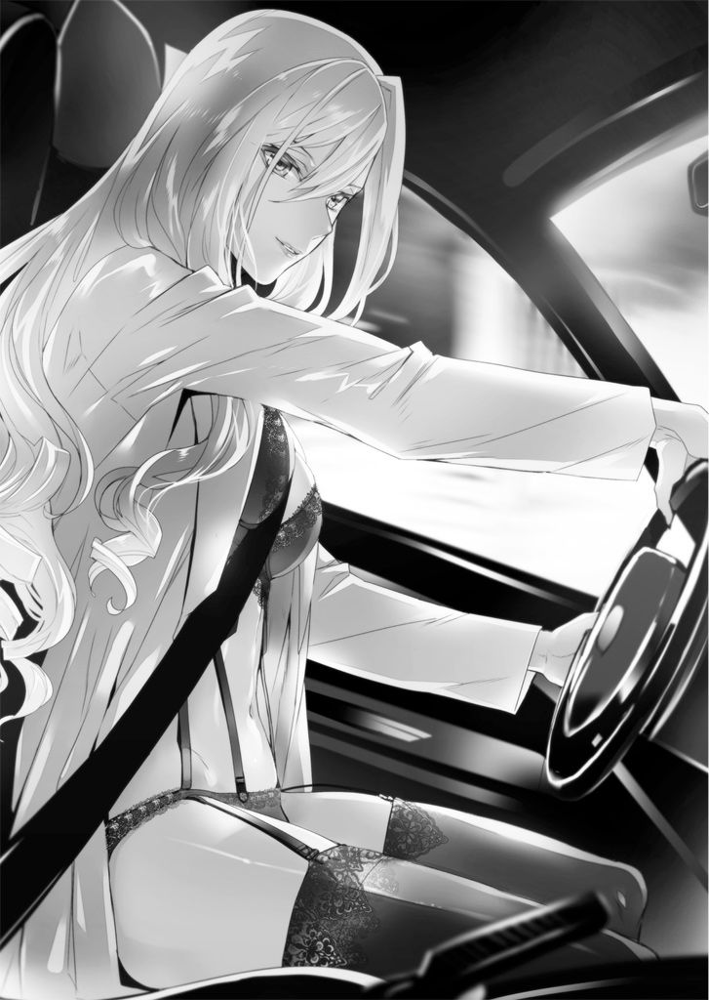
「だってさあ。話とか合わないでしょ。君、あいつの言うこと理解できる？ 幼なじみっていうんだから小学生くらいからの付き合い？ その頃から、水無月って浮いてたんじゃないの？」
「............」
そんなことない、とは言えなかった。
確かに智花は小学生の頃、周囲から浮いていた。それは彼女が天才であるが故の孤独。周りの子どもたちは智花の話す物理学や遺伝学の話をまるで理解できなかった。そして智花も周囲が自分の話についてこられない理由が分からずにいた。
自然、彼女は子どもたちの輪から外れていった。
叡理だけが「トモはそういう奴だから」と彼女の話す全く意味の分からない言葉を適当に聞き流し、一緒にいた。その後ろに慧がくっついてきていた。
「大丈夫だって。あいつには言わないから、本音を言ってみなさいよ。水無月って何考えてるか分からないとこあるし、気持ち悪いわよねえ」
安西が同意を求めてくる。
叡理は彼女を睨んだ。
「安西さんでしたっけ。あんたがどういうつもりで煽ってるのか知りませんけど、俺はトモのことを気持ち悪いと思ったことは一度もありません。何を考えてるのか分からないところがあるのは確かだけど、そんなの誰だって同じです。俺はむしろ──」
ふらふらと揺れるポッキーを奪い取る。
「そういうことを言う、あんたの方がよっぽど気持ち悪いよ」
「へえ」
安西がキュウッと口の端をつり上げた。
グンと車が急加速する。
叡理はシートに押しつけられた。
「水無月が妙に拘るから、どんな坊やなのかと思ったけど、合点がいったわ。さすが天満の息子ってとこかしら？」
「何の話ですか」
「ごめん、ごめん。そんな怖い顔しないでよ」
あっけらかんと表情を和らげ、安西は新しいポッキーを一本咥える。
「あいつって他人のことには全然興味がないのに、叡理くんには随分と執着してるから。どんな奴なのか興味があったのよね」
「試したんですか？」
「そうよ。君がつまんない男だったら、手を貸すのやめようと思ってたの。でも、面白そうだから君たちに協力してあげる」
「俺、そんな大したこと言ってませんけど」
高速道路に乗り、さらに速度が増した。
「君ってさあ、自覚ないのかな。あの水無月と当たり前につき合っていられるって相当なもんなんだよ」
「別に、普通ですよ」
「普通ねえ......。普通は、自分と違うものは排除しようとするんだけど」
安西の表情に苦いものが混じる。
「具体例なんて幾らでも出てくるでしょ。自分と考え方が違う。見た目が違う。やってることが違う。グループが違う。言語が違う。違う、違う、違う。違う存在に対し、普通の人間って冷淡なのよ。だから、いつまで経っても争いはなくならない」
「俺だって、そういうところはあります」
「そうかもね。だけど、君は水無月を受け入れられた。違う存在をそのまま対等に受け入れられる人間って、意外と少ないのよ。誰だって共通点を探す。自分と同じところを見いだそうとするの」
「相手が違う存在じゃなくて、同じ存在なら受け入れるってことですか？」
「そういうこと。まあ、生物の本能として当然なんだけどね。同じ存在なら安心でしょ。だからこそ、違う存在を排除するわけだけど」
「俺とトモにも共通点はありますよ」
「たとえば？」
「ええと......歳、とか」
ブッと安西が噴き出した。大笑いをする。ポッキーが転げ落ちた。
「ああ、面白い。君、面白いわねえ。あいつには、そのくらいが丁度いいのね」
「ほ、他にもありますよっ......。すぐには思いつかないだけで」
「もういいわよ。それより今度は君の話をしましょうか」
安西が白衣に手を突っ込む。網膜走査ディスプレイが起動するのを感じた。ファイルの受信を許可するか尋ねてくる。叡理は彼女の方を一瞥した。
「まずは見てよ。君が立たされてる状況が少しは分かるわよ」
携帯端末を胸ポケットから引き抜き、受信を許可する。目の前に幾つかのファイルが並んだ。安西に言われるまま、それらを開く。
そこには、インターネット上で流れている「噂」がまとめられていた。
『全てのフェクターを操ることができるオラクルがあるらしい』
『王のオラクルに感染している奴がいる』
『王様を殺すと、殺した者が新たに感染するそうだ』
『天満博士が最凶の感染者!?』
『博士には息子がいるという情報あり』
『最凶のオラクルに感染すれば、全てから自由になる』
要約された見出し文をざっと眺める。幾つかは叡理も見たことがあった。何の信憑性もない噂のようだったので無視していたが。そのうちの一つに目を止める。
「天満博士の息子......俺のこと、ですよね」
「その噂なんだけど、セメディが流してるものよ」
「えっ!?」
「無関係を装ってるけど、煽ってるのは間違いなく鷲崎たちね。向こうも君を早く見つけたいみたい。というか、殺したいのよ。危険だから」
「危険って、俺は何も......」
「実際に君が危険なのかどうかは関係ないの。相手が脅威に感じてるかどうかよ。それに、私も君には何かあると睨んでるんだけどなあ。多分、水無月だって」
「俺が、この変なオラクルに感染してるっていうんですか？」
「ネットで噂になってるオラクルなんだけど、実は研究メンバーの間でも存在が確認されてないのよね。通称『王』。数あるオラクルの中でも最凶らしいわ。ただ、天満は生前、そのことには一言もふれなかった」
「じゃあ、やっぱりただの噂なんじゃ......」
「そこなのよねえ。私の考えでは、『王』のオラクルは存在するわ。非常事態だったといえ、あの天満が、何の対策も取らずにオラクルをばらまくとは思えないもの。オラクルに対抗できる手段を先に講じてたと考えた方が納得いくのよ」
「そんなの、希望的観測でしかないじゃないですか」
叡理はファイルの内容を確認していく。様々な噂話の中に「王」のオラクルを示唆する文面があり、さらに最新のものでは天満の息子が怪しいと煽るコメントがあった。
「............」
狼男の言葉が脳裏に蘇る。
あいつも、この噂を信じて俺を捜していたのか？
「とにかく君は今、セメディだけじゃなくオラクル感染者にも狙われてるってこと。ひょっとしたらネメシス感染者にもね」
「俺が『王』に感染しているかどうかは、関係ないんですよね」
「そう。セメディとしては、君をあぶり出すことができれば御の字だし、殺されてくれたら尚、良いのよ。自分は手を汚さずに目的を達する。相変わらずのクソっぷりだわ」
舌打ちし、安西がハンドルを切る。
高速を降りた。いつの間にかＵターンしていたらしく、すぐに先程の喫茶店まで戻ってくる。智花の姿はなかった。
「はい、お疲れ」
サイドブレーキを引き、安西がシートに凭れる。白衣がはだけて下着姿が露わになった。豊満な胸に目がいきそうになり、叡理はフロントガラスを見つめる。
「ありがとうございました。状況が少しはっきりしました」
「気にしないで。私が君に興味あっただけだから。お互い死なずにいられたら、また会いましょう」
差し出されたポッキーを一本もらい、叡理は車から降りた。
『エーリ、無事かいっ？ シーさんに変なことされてないだろうねっ？』
すぐに腕時計から智花の声が飛んでくる。彼女にしては珍しく焦った声に返事をしているうちに、真っ赤なアルファロメオは走り去った。
夜。叡理は自室で携帯端末にコピーした捜査資料を読み直していた。
「......可能性は、ある」
ポツリと呟く。
捜査資料に載っている、ある部分が気になって仕方ない。それは「蛇」の正体を指し示す手がかりになりそうな事柄なのだが、「十代女子」という叡理たちの推測した犯人像とは相容れないもののようにも思える。
ただ、智花から聞いた話と合わせて考えたなら、逆に「蛇」の正体を一気に絞り込むことができそうなのだ。
そして慧のこと。
智花と話していたときには気づかなかったが、一つ気懸かりが生まれていた。そのことを妹に確認してみたい。
一週間前に起きた「蛇」の事件。その翌日から体調を崩した慧。日が落ちる前からカーテンを閉め切って、家に引きこもっている。
「もし、慧が事件に巻き込まれているんだとしたら......」
洩れ出た言葉にゾッとする。
落ち着け。落ち着け、俺。確証のない推測ばかりが多すぎる。
下手に動けば、取り返しのつかないことになるかもしれないんだ。
警察も「H.A.W.K.」も動いている。
そっちから動かぬ証拠が出てくる可能性もある。
自分の考えだけで動くのは危険だ。
ノックの音がした。
返事をするより早く、慧が顔を覗かせる。
「お兄ちゃん、お風呂空いたよ」
風呂上がりの寝間着姿で、叡理は目のやり場に困った。
「ああ、うん」
そっけなく返してから、妹を呼び止める。
「なあ、慧」
「ん？」
ドアを閉めかけたところで、妹が円らな瞳を向けてきた。切り出す。
「......もう一週間くらい前になるかな。......何か、見たのか？」
その問いに、慧は劇的な反応を見せた。
目を見開き、微かに震える。一歩、後ろに下がった。
「見たのか？ それで、家から出られなくなったのか？」
叡理は椅子から立ち上がる。一歩踏み出した途端、妹が叫んだ。
「見てない！ 私、何も見てないし、聞いてない！ ち、違うからっ......」
駆け出し、自室に飛び込んでしまう。叡理は後を追い、ドアをノックした。
「慧！ 慧、聞いてくれっ。俺はお前の味方だっ。絶対にお前を守るからっ。だから、何かあったんなら話してくれ！」
「知らない！ 私、何も知らない！ 知らないからっ。放っておいてよ！」
「そんなわけにいくかっ。慧は俺の──」
そこで言葉が詰まる。
少しの逡巡の後、気持ちとは違うことを口にした。
「俺の、大切な、妹なんだぞ」
「............」
返事は返ってこない。
しばらく待ってみたが、慧は何も答えてくれなかった。
ドアから身を離す。部屋に戻ろうとしたとき、微かに声が聞こえた。
「......お兄ちゃんは、ずるいよ......」
※ ※ ※
「人間とは何だろうね」
パチリ、将棋の駒を指しながら黒コートの人物が言う。
叡理は持ち駒の飛車で相手陣地に攻め込みつつ、問い返した。
「それは、生物学的な意味？ それとも哲学的な話か？」
「どちらでも構わんよ。同じことだ」
「同じかな？ ヒトの生物学的な定義は決まってると思うけど」
「それなら、人間は？ 生物学的な人間の定義はあるのかな？」
「......やっぱり哲学じゃないか」
黒コートが歩を進め、叡理の桂馬を取る。成金。
「人間の歴史は、人間の拡大の歴史ともいえる。生息範囲はもちろん、存在そのものを広げてきた」
「存在そのもの？」
「例えば中世、宗教戦争を挙げよう。あの戦争で、人間は誰と戦っていた？」
「誰とって、同じ人間とだろ。異教徒っていえばいいのか」
「違うな。彼らは悪魔と戦っていたんだよ。悪魔もしくは悪魔の手下どもとだ」
「何だかファンタジーな話になってきたようだけど」
「ファンタジーだなんて、とんでもない。現実の話だ。宗教戦争において、異教徒どもは皆、悪魔か悪魔の手下だった。だから殺せたんだ。古今東西、大抵の宗教は殺人を禁忌としている。それなのに、どうして戦争が起きる？」
「それは、様々な利害が絡んでいて......」
言いながら、叡理自身、答えることから逃げているように感じた。
少し乱暴に金を指し、金に成ったばかりの相手の歩を取る。
「利害が絡んでいたのかもしれん。けれど、従軍し、多くの異教徒を殺したものたちは神の意思に反する行為をしたのか？ むしろ逆だ。彼らは殺せば殺すほど、神の意思に適う尊い行いだと思っていた。その敬虔なる信仰心で悪魔の手下どもを殺したんだ」
相手が角を指し込んで金を奪い、馬に成った。
「異教徒は人間じゃなかったって言いたいのかよ」
王将を動かし、その馬を取る。
「その通り。古来、異教徒は人間ではなかった。それが人間と見なされるようになるのは相当、時代を下ってからだ。いや、今でもそういう考え方をする人間はいる」
黒コートが笑った、ように感じた。
相手の桂馬が動く。
「異教徒が嫌なら、奴隷制はどうだ？ 奴隷は生物学的に見てヒトではなかったのか？ 平民や貴族と何が違った？」
「違いは、ないよ......」
「では、どうして彼らは家畜同然に扱われたんだ。人間と見なされていなかったからだろ。彼らは牛や馬と同じ存在だった」
叡理は王将を下げた。
「......身分差別も似たような理屈だよな。同じヒトなのに、同じ人間とは見なさない。それが撤廃されていくたびに人間の範囲が拡大していったってことか」
「そうだ。しかし差別は根深いぞ。いまだに残っている。それも時代に合わせて形を変えていく。身分差別から金銭による差別、学歴、容姿、境遇、あげく生まれにまで口を挟まれる始末だ」
「......差別か。いまだに、いい大人が率先して他人を貶めてるな」
「同じ人間と見なしていないからだよ。そいつらにとっての人間の範囲は狭い。だから罪悪感なく攻撃できる」
敵陣に攻め込んでいた金を、銀で奪われる。
「人間とは何なのか。質問の意味がやっと分かってきた。逆の見方もできるんだ。ペットを溺愛している人、フィギュアを大切にしている人、最近はロボットも珍しくないよな。そういう人たちにとっては、もはや人間かそれ以上の存在だ」
「では、フェクターは？」
叡理の手が止まる。
黒コートはほくそ笑んでいる、ように感じた。
「ヒトじゃない。だけど、トモや天満博士は人類の進化形だって捉えている。人間と見なすか否か。その是非を巡っては、争いが起きるだろうな」
「その渦中に放り込まれるものたちは、堪ったものではなかろう」
「............」
盤面を睨みつけ、叡理は歯を食いしばる。
気づいてしまった。
この局面は、詰んでいる。どう足掻いても王手は免れない。そこから抜け出す道が見当たらない。
摘んでいた駒を握りしめ、叡理は呻いた。
ＣＯＤＥ：００６
「はい。異常ありません」
佐嶋が智花の体から直方体の器具を離した。
「ふうん。こうやって調べるのかい。後ろ暗いところはないけれど、やはり緊張するね」
そう言いながら、智花は佐嶋の手にある器具を見つめる。波形探査器。フェクターを見つけ出すため、セントラル・メディックが開発したものらしい。
「お疲れ、トモ」
叡理は彼女に一声かけた。
翌朝。二人は本校舎一階にある第二会議室にいた。登校するなり「校内掲示板」からの緊急連絡を受信したのだ。智花を含め三十人ほどの生徒の名が挙げられており、「以上の者は、直ちに第二会議室まで来ること」と指示されていた。
叡理の名はなかったのだが、智花の他に「佐嶋礼」の名があったことも気になり、智花と一緒に第二会議室を訪れた。
そこでは伊切が待っていた。
学校の制服ではなく、背に「H.A.W.K.」のロゴが入った白のライダースジャケットを着込んだ彼は、叡理を見るなり「来たか」と言い、持っていたバインダーを突き出した。
受け取ったそれには、三十人ほどの名前。
「人手が足りないんだ。せっかくだから手伝っていけ」
有無を言わせぬ物言いに、叡理はあえて従うことにした。
「はい。異常ありません」
「お疲れさま。教室に戻るといいよ」
佐嶋は叡理たちより先に来ていて、チェック係を請け負っていた。智花は自身のチェックが終わると、「ボクも手伝うよ」と半ば強引に佐嶋の手伝いを始める。
第二会議室を訪れた生徒たちは皆、戸惑っていた。しかし笑顔で応対する佐嶋と、智花の有無を言わせぬ物言いに半ば押し流され、よく分からないままに「異常ありません」と告げられて会議室を出ていく。
部屋の奥には校長が所在なげに座っていた。生徒たちに愛想笑いをしている。
「こないだは関わるなって言ってたのに、今日はどういう風の吹き回しだよ？」
叡理は伊切の隣に並び、小声で尋ねた。
「お前がフェクターでないと判明した。その上で事件に強い関心を示している。だったら身近に置いてコントロールした方が安全だろうが」
屋上での会話を思い出す。
「この前、校内に何か装置をしかけるみたいなことを話してたな。佐嶋さんが持ってる波形探査器のことだったのか？」
「あれの、効果範囲が広いタイプのものだ。波形探査器には二種類ある。効果範囲は広いがおおまかにしか測定できないものと、範囲は狭いが精確に調べられるもの」
「まず、おおまかに炙り出して、今、一人一人調べてるってことか。......屋上で話したときは、俺も容疑者の一人だった？」
「ああ、当然だ」
「でも、その前の夜にフェクターに襲われたんだぞ」
「人間同士で争うのはもちろん、親兄弟で殺し合うこともある。フェクター同士だって争うことはあるだろう」
「徹底してドライな考え方だな」
「......性分だ」
二人で話している間に、次々と生徒がやって来た。
すぐに二十人ほどのチェックを終える。
「今更だけど、俺たちの扱いってどうなるんだ？」
「善意の協力者だ。礼も含めてな。あいつは『H.A.W.K.』であることを隠しているから、ここの生徒には知られないようにした。『一番最初に来て、そのまま手伝ってくれている一般生徒』だな」
叡理は伊切の横顔を盗み見た。
初対面からきついイメージがつきまとっていたが、思いの外、柔軟な考え方ができる仲間思いの人物かもしれない。
そんなことを考えているうちに新たな生徒が入ってきた。
すっかり手慣れた様子で対応する女子二人を眺めながら、気になったことを尋ねる。
「もしフェクターがうちの生徒の中にいたとして、ここで正体がばれて暴れ出したらどうするんだ？」
「その心配はない。ここでチェックを受けた生徒全員に『異常なし』と言うよう礼には伝えてある」
「......異常があっても？」
「そうだ。チェックをかいくぐれたと思わせれば、隙もできるだろう。その上で、こちらは態勢を整えて仕留めにかかる。まあ、そういう展開にはならないだろうがな」
「ここに来てる時点で、白はほぼ確定かな」
「そういうことだ。むしろ、ここに来なかった奴を念入りに調べる。そのための告知といっても良い」
始業の予鈴が鳴る。手元のバインダーには五人の名前が残っていた。
「五人か。悪くない数字だ」
叡理からバインダーを受け取り、伊切は居眠りをしていた校長の下に向かう。ハッと目を覚まして、寝てなかった風を装う相手に彼は何ごとか質問を始めた。
「ああ、この子たちかね......」
校長が渋面になる。「あまり言いたくはないが、素行が良くない生徒でねえ」と続けた。思わず聞き耳を立ててしまう。
「恐らく、文化部棟にいるんじゃないかなあ。あそこの一室を勝手に──」
悲鳴が聞こえた。
伊切が素早く会議室を飛び出す。
叡理もそれに続き、周囲を見回した。廊下を歩いていた生徒たちが、不思議そうに辺りを見ている。
「キャアアアアアアアアア!?」
今度は、はっきり聞こえた。
「文化部棟の方だよっ」
佐嶋が窓を開けて身を乗り出す。彼女の視線の先には三階建ての建物があった。主に文化系部活動の部室がある校舎だ。
「くそっ。一手遅れたか」
伊切がそちらに駆け出す。
「!?」
ところが、不意に立ち止まると叡理の方、いや、その背後を睨みつけた。
咄嗟に振り返る。しかし、そこには騒ぎに戸惑っている生徒たちしかいなかった。
「礼、こっちだ」
文化部棟から聞こえてくる悲鳴や物音には構わず、伊切が逆方向に走り出す。「コウちゃんっ？」と慌てながらも、佐嶋がその後を追った。
「トモ！ 向こうは頼むっ」
直感的に、叡理も二人を追う。文化部棟の方は智花に任せることにした。
「ううん。ボクは文化部棟の場所をよく知らないんだけどねえ」
背後で彼女が呑気そうに呟くのが聞こえたけれど、立ち止まるわけにはいかない。
上り階段に差し掛かったところで、何かが割れる音がした。
「ギャアアアアアアアアアアッ！」
耳をつんざく悲鳴が響く。
たちまち上階が騒がしくなった。
悲鳴や怒号が次々上がり、バタバタと乱雑な足音が聞こえてくる。
すでに階段を駆け上がっていた伊切が、踊り場で立ち止まった。身を躱すなり、数人の生徒が駆け下りてくる。転げ落ちそうになりながら叡理の脇を抜けていった。
「ば、化け物だっ！」
「イヤアアアッ......」
恐怖に顔を歪めた生徒たちが、次々に下りてくる。
伊切はその人波を掻き分けて上っていった。
「ちょっと、すみませんっ」
「通して下さいっ」
佐嶋と叡理も二階に上がる。
しかし二階の廊下には、何ごとかと首を傾げている生徒ばかり。逃げ出しているのは三階か四階の生徒のようだ。
「もっと上か」
叡理は更に階段を上がる。二階で追い越した佐嶋が「総上くん、戻って！」と叫んだが、お構いなしに三階の廊下に出た。
「............」
三階は驚くほど静かだった。
伊切が廊下の先で身を低くしている。ナイフを構えて教室の一つを見据えていた。
「あそこだな」
叡理は慎重に歩を進める。その肩を後ろから掴まれた。
「ダメだよ、総上くんっ。早く避難してっ」
佐嶋が厳しい表情で立っている。髪をポニーテールに纏め、「ここからは私たちの領分だから」と言った。
「まだ何が起きたのか、はっきりしてないだろ」
「してるよ。逃げてきた人を引き留めて、訊いてみたの。......化け物が窓から教室に飛び込んできて、人を、殺したって」
「......『蛇』？」
「そこまでは分からない。でも、フェクター事件だよ。だから総上くんは早く逃げて」
火災報知器が鳴り出した。
校内放送が流れる。焦りを懸命に抑えた声で、ただちに校舎から避難するよう指示する内容だった。
「ほら、総上くんもっ......ちょっと！」
佐嶋の言葉を無視し、叡理は伊切の下へ走った。
「何をしに来た。さっさと避難しろ、総上」
こちらを一瞥することもなく、伊切が告げる。「よく俺って分かったね」と返し、彼と同じように身を屈めた。
「一般人の出る幕じゃない。すでに死人が出てるんだ」
「相手はどんなフェクター？」
「まだ分からん。視認してないからな」
開け放たれたドア。壊れた窓に散らばった窓ガラス。
室内から、微かに人の声が聞こえてくる。
「......ま、待てよっ。謝るからさあっ。......あんなの、軽いジョークだろっ？」
「軽いジョーク、ねえ。じゃあ、これもジョークの範疇だよ」
「や、やめっ、やめてくれええええええっ？」
「まずい！」
伊切が教室内に飛び込んだ。叡理もそれに続く。
「うっ」
思わず息を止めた。
「......これは、ひどいな」
伊切が呟く。
濃密な血の臭い。それから生ゴミをぶちまけたような異臭。
吐き気がこみ上げてきて、叡理は必死に堪えた。
「あれ？ 誰ですか？」
教室の奥。窓際最後尾の机に少年が一人座っている。
こちらを見て、首を傾げた。
その足下にはロン毛茶髪の少年が尻餅をついている。失禁しているようだ。
「あ、あひやああああああああああっ......」
叡理たちを見るなり、茶髪が悲鳴を上げる。こちらに這い進んできた。その背中に少年が腕の一本を振り下ろす。
固い金属音。
伊切がナイフを投擲した。少年の腕が動きを止め、その隙に茶髪は伊切の陰に隠れる。「さっさと行け！」と尻を蹴られ、何か喚きながら廊下へ飛び出していった。
「邪魔するなよ」
少年の声に殺気が宿る。伊切はそれを無言で受け止め、新たなナイフを構えた。
「ひどい......」
佐嶋の声に、叡理は背後を振り向く。彼女がドアの側で口元を押さえていた。そちらに目をやり、少年が吐き捨てる。
「ひどい？ 何言ってんだよ。ひどいのはこいつらの方さ。毎日毎日、俺のことを......だから、こうなって当然なんだ」
叡理は彼を観察した。
とりたてて特徴のない顔。体つきも中肉中背だ。何故かトランクス一枚という格好。
「......あんたたち、知らない顔ばっかだな」
少年がまた首を傾げる。右手で頭をかこうとして、それがままならないことに気づき、腕を下ろした。醒めた目で室内を見回す。
教室内は荒れきっていた。
机も椅子も大半が乱雑に端へ蹴散らされ、教卓が真っ二つになっている。掃除用具入れがひしゃげて倒れていた。
そして壁や床はもちろん、天井にまで血が擦りつけられている。
飛び散ったのではなく、擦りつけられていると分かったのは、その証拠となる「物体」が目の前にあったからだ。
少年の腕の先にぶら下げられ、先程からボタボタと内臓をこぼれ落ちさせている物体。
ズタズタに引き裂かれて、磨り潰された人間の体だ。
一つ、二つ、三つ、四つ。
四本の「腕」に一つずつ吊されている。
それらをぼんやり眺めていた少年は、不意に四つの死体を投げ捨てた。
壁に叩きつけられ、血しぶきを飛び散らせて肉塊が床に落ちる。
佐嶋が身を引いた。気を張っているようだが、顔が青ざめている。伊切は平気な顔をしているけれど、内心穏やかでないのが気配で感じ取れた。
「こいつらとお前の間に何があったのかは知らん。訊く気もない」
「くっだらないことだよ。くだらなくて最低なこと......」
「......お前、名前は？」
「言いたくない」
「第二会議室に来るよう連絡を受けただろう？」
「何それ？ ......最近、学校来てなかったから知らないや」
「そうか。なら、簡潔に訊こう。お前はフェクターか？」
「そうだね」
少年は軽い調子で答えた。
「ネメシスのせいで、散々、酷い目に遭わされたよ。だから、もっと強力なやつを求めたんだ。感染できて良かった。オラクルは正に福音だね。これのお陰で、俺は進化したんだ。捕食される側から捕食する側に回ったんだよ。もう、誰も俺のことを無視できないし、バカにできないっ。ザマーミロだ！ ああ、一人殺し損ねてたな。早く、あいつも追いかけて殺さないと。俺は、その権利を手に入れたんだから！」
「そんなわけあるか！」
伊切が右腕を振った。ナイフが一直線に少年の眉間へ飛ぶ。
狙い過たず、少年の顔面に突き刺さる──
寸前、少年が口から白い糸状の物を噴き出した。ナイフが絡め取られ、さらに伊切の体にまで巻きつく。少年は首を巡らし、糸を倒れている掃除用具入れに絡めた。
「くっ」
伊切が歯がみする。身動きを封じられてしまった。
「せいっ！」
彼の脇を抜け、佐嶋が少年に飛びかかる。アカカンガルーの両足で腹に痛烈な蹴りを叩き込んだ。少年が吹っ飛び、後ろの窓ガラスを割って外に落ちる。
「コウちゃん、大丈夫っ？」
振り向いた佐嶋に、粘着性の糸と格闘していた伊切は声を上げた。
「俺の心配をしてる場合じゃない！ すぐに応援を呼べ！」
「あ、了解っ。私も追いかけるね！」
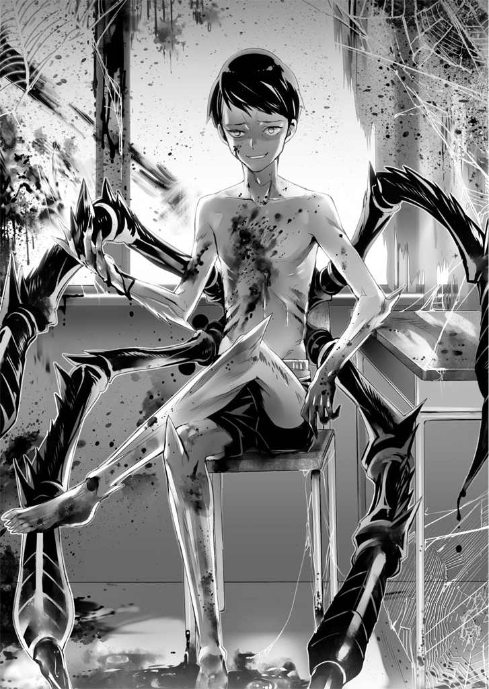
佐嶋は窓に駆け寄り、下を見下ろした。しかし首を傾げる。
「あれ？ いない......」
「佐嶋さん！」
叡理は彼女の襟首を掴んで引き倒した。
ほぼ同時、窓の上から鋭く尖った爪が突き出される。「あ、外した」という無味乾燥な声がした。
「上だっ。あいつ、外の壁に張りついてるんだっ......」
「......ありがとう、総上くん」
佐嶋は尻餅をついたまま小さく震えている。伊切が舌打ちした。糸の中でもぞもぞ蠢き、眼鏡のつるに指を当てる。
「仕方ない。これは、あまり使いたくないんだがな......」
呟いてから数秒。
ドクンと彼の体が跳ねた。
叡理の目の前で、伊切がその外見を急激に変貌させる。
まず全身が一回り大きくなり、体表面に無数の鱗が浮き上がった。さらに鱗に覆われた尻尾も生えてくる。伊切が腕を振ると、蜘蛛の糸がズタズタに切り裂かれた。
「ワニ？ いや、これってアルマジロ？」
叡理は目を見張る。伊切は顰め面で「オナガセンザンコウだ」と言った。
「おい、総上。お前は早く避難しろ。礼は至急、本部に連絡だっ」
指示を出しながら窓から顔を出す。上下左右に素早く目をやり、顰め面になった。
「あの蜘蛛男、また校舎の中に入ったか」
伊切は教室を飛び出す。佐嶋もその後を追って駆けていった。
叡理も廊下まで出て、しかし、そこで立ち止まってしまう。
「............」
『何とかしたい。でも、何の力も持たない俺じゃ足手まといになっちまう』
「............」
『ああ、俺にあのスカシ眼鏡野郎をギャフンと言わせられるような力があればなあ』
「......トモ、他人の心の声をねつ造しないでくれ」
叡理は腕時計に向かって言った。
「やっぱり聞いてたんだな。......そうだ、力が欲しい」
『美少女の幼なじみを守れる力が？』
「ああ、もう、この際それでいいよ」
「仕方ないなあ。そんなにボクを大切に思ってくれてるだなんて」
その声は腕時計からではなく、背後から聞こえた。
振り返ると、廊下をのんびり歩いてくる智花がいる。彼女は教室内を見回し、「ひどいね」と言った。
「これを蜘蛛男とやらがやったのかい。ううん、相当な恨みがあったんだろうねえ。しかし蜘蛛か。『土蜘蛛』かな？ 恨みの受け皿としてはピッタリだね」
「土蜘蛛？」
「彼が感染したのはオラクル№９、感染率０・００４７％の『土蜘蛛』だろう。ただの蜘蛛じゃない。元々、朝廷に従わない土豪などを指す言葉で、それが時代が下るうちに人面蜘蛛の妖怪の姿を与えられたんだよ。そういう存在であるが故に、その反骨心と執念、怨念の深さは凄まじいものがある」
「解説、どうも......。トモ、文化部棟の方はどうだった？」
「うん。あっちも酷かったね。首だけの死体が一つあったんだけど、ああ、体の方はここにあったのか。文化部棟で一人殺してから、こっちに乗り込んできたって感じかな」
「......止めないといけない。まだ、人殺しをするつもりだ」
「そうかい。じゃあ、その腕時計の側面にある突起。赤いやつを押してごらん」
「これか？」
叡理は言われたとおり、小さな赤い突起を押す。
ピッと電子音がして、デジタル表示の文字盤が切り替わった。
『Ne. stand by』
そんな文字が表示される。ほどなくして画面に数字が幾つか並んだ。
「何だ、これ？」
「エーリが使えるネメシスの一覧だよ」
「俺が使える？ つまり、投与したら『H.A.W.K.』隊員のような能力を発揮できるってことか？ いつの間に、そんなこと」
「決まってるだろ。ここ数日ずっと、パッチテストみたいなことをしてたんだよ」
「それで、腕時計をつけておけって言ってたのか......」
「こういうことは、セメディよりボクの方が遥かに詳しいからね。さて、投与方法と使用上の注意をしようか」
智花が腕時計の使い方を説明する。
「そこに並んでいる数字はネメシスの種類だ。その中の一つを選んで視聴すれば、三秒から五秒くらいで投与が完了するよ。投与中は画面から目を離さないようにね。指向性のスピーカーが内蔵されているから、音もちょうど良く聞こえるよ」
叡理は使えそうなネメシスがないか確認していった。
「それから、深度っていうのがある。どれだけネメシスによる作用を受けるかの目安だね。深度数値が高ければ高いほど、プログラムされたネメシスの能力を強く使える。例えば、さっきの佐嶋さんの『アカカンガルー』。あれは深度３か４くらいあるね」
「最高は？」
「５、と言っておこう。理論上は７までいけるんだけど、そうなるとオラクルと変わらない。ネメシスはあくまで一時的にしか作用しない失敗作だからね」
叡理は深度５を探した。しかし見つからない。大半が１か２だ。
その中で、４という数値を見つける。
「よし、これでいく」
「おや、決断が早いね。......ふうん、面白そうな能力だ。エーリ、ネメシスの作用時間は五分だ。個人差があるから正確な時間を計っておくといいよ」
「分かった。行こう、トモ！」
「行くって、どこへ？」
「もちろん、あの土蜘蛛......」
そこで気づいた。相手がどこにいるのか叡理には分からない。
「少し落ち着こうか、エーリ。まず、ボクたちの立ち位置を決めよう。エーリはどうして土蜘蛛と戦いたいのかな？ 目的は、殺すことかい？」
「......はっきり訊いてくるんだな。殺したくはない。捕まえて、話をしたいんだ。俺はまだフェクターについて何も分かっていないから。それに、フェクターはあくまで人間なんだろ？ だったら問答無用で殺すのは間違っていると思う」
「ふうん。いいよ、そういう視点は大切だ」
そう言いながら、智花は上履きを脱ぎだした。さらに靴下まで下ろす。ほっそりとした色白な彼女の脚が目に飛び込んできた。靴下を脱ぐため足を上げているせいで太ももの内側が露わになる。
「な、何をやってるんだ、トモ!?」
「ううん。裸足になっているんだよ。ボクのネメシスを披露してあげようと思ってね」
「トモのネメシス？ って、裸足になることと何の関係がっ？」
両足とも裸足になった智花は、リノリウムの床にぺたりと足をつけた。
「エーリは知らないのかな？ インドゾウの足の裏には、とても高度なセンサー機能があるんだよ」
眼帯をした左目を軽く叩く。
「みんなの居場所を、突き止めてあげよう」
腕時計を見つめる。
網膜照射で、叡理の目にゆらりと奇妙な映像が映し出された。
同時に耳の奥を撫でるような奇怪な音が聞こえてくる。
これが、ネメシスを視聴する感覚か......。
決して気持ちの良いものではないのに、目が離せない。耳を塞げない。
目と耳を通して異物が侵入してくる。
色彩と図形がめまぐるしく変化し、背筋を寒くする金属音と腹を打つ重低音が平衡感覚を失わせた。
奇妙な浮遊感。
そして不可解な高揚とともに、体の奥底、細胞の内側が揺れる。
骨の髄から違うものが滲み出てきて、肉体を弄っていく。
ゾワゾワと這い回り、少しずつ溶け込み──
自分が体内から変化していくのを、確かに感じた。
「あ......かっ......」
息が詰まる。
ただ、それはすぐに収まり、えもいわれぬ充足感に包まれた。
見えるものが、聞こえる音が、今までと違う。
全身の感覚が明瞭になっていた。
比喩でなく、新しい世界を体感する。
「これで、いいんだよな？」
叡理は軽く首を振った。
映像と音声は終わっている。
時間にすると、たった五秒。
それでネメシスの投与は完了した。
「今から、だいたい五分間。個人差があるから正確な時間を計っておかないと」
ストップウォッチ機能を作動させる。
一つ深呼吸して、叡理は目の前の男子トイレに足を踏み入れた。
「ううん。困ったものだねえ......」
中では智花が思案顔で個室を見つめている。
「どうしても出る気にはならないのかい？ そんなところにいても何も解決しないよ。それどころか危険だ」
「いいから放っといてくれ！ 俺に近寄んなっ！」
個室から喚き声がした。どうやら例のロン毛茶髪は智花の説得に応じる気がないらしい。会話ができる精神状態ですらないようだ。
「トモ、やっぱり無理そう？」
声を掛けると、智花が「おっ」と振り向く。叡理に手を伸ばし、体に触れたところで「上手くいったようだね」と微笑んだ。
「こうなったら、ここで『土蜘蛛』を迎え撃つしかないよ。伊切くんたちもこっちに近づいてきている。えっと、個室の中の君っ」
智花は茶髪に向かって言う。
「そこでおとなしくしているんだよ。出たくないのなら、絶対に出てこないように」
返事はなかった。
特に気にすることもなく、彼女はトイレの出入り口を睨む。
「近いね。エーリ、作戦通りに」
智花の足が微かに震える。見ていると、細く強靱そうな形状に変わった。
「ショウリョウバッタだよ。ボクが相手をかく乱するからね」
「分かった」
廊下の先でガラスの割れる音がする。土蜘蛛が近づいている証拠だ。何か呟いている。叡理は壁際に身を寄せ、息を押し殺した。
智花が身構える。
「殺す殺す殺す殺す殺す殺ス殺す殺ス殺ス殺す殺スコロスコロスコロスコロス......」
土蜘蛛が迫ってきた。そっと身を乗り出して様子を窺う。相手は四本の腕と四本の足で、いや、もはや八本の足というべき体勢で手当たり次第に周囲のものを壊して回っていた。廊下に備え付けられている消火器を弾き飛ばし、窓から叩き出す。
その顔がはっきり見える位置まで来たところで、智花が前傾姿勢を取った。
「いくよ！」
叡理の返事を待たず、跳ぶ。
一瞬で土蜘蛛の眼前に迫った。
「!?」
目を見開く相手の顔に着地。
挑発するように踏みつけて跳んだ。
「うげっ」
土蜘蛛は、自分を飛び越えていった智花を振り返る。
しかし、そのときには彼女も反転して再び彼に向かいジャンプしていた。
「それっ」
今度は足の一本を踏みつけて跳ぶ。怒りの形相になった土蜘蛛は智花目がけて糸を噴出した。
「甘いねえ」
智花は糸を器用にかわし、着地するなり軽々と天井へ。天井に足をついたと思いきや、壁を蹴り、土蜘蛛の背中を踏みつける。
「このっ。何すんだよ、バッタ女！」
「おやおや、何て動きの鈍い蜘蛛なんだろう。本物の蜘蛛はもっと俊敏で小回りが利くものだけどね。君のような不細工な蜘蛛は初めて見るよ」
「くそっ」
土蜘蛛は次々に糸を繰り出すが、全て軽やかにかわされていく。
「いい加減にしろ、バッタ！」
痺れを切らしたのか、八本の足を振り回し、智花を追い立てようとする。
ところが、八本足のうち六本が動きを封じられていた。
「え？ あれっ？ 何だ、これ？ 何だあっ？」
土蜘蛛が目を剥く。
自分の足に、吐き出した糸が巻きつけられ、廊下の壁や床に貼りつけられていた。
「いつの間に、こんなことっ？ っていうか、足、動かないいいっ」
自分の吐いた糸が、自分自身を縛っている。
「何をしたんだよ、このバッタ女！ お前、逃げ回ってただけじゃなかったのかよ！」
「そうだね。ボクは逃げ回ってただけだよ。ボクはね」
その言葉に、土蜘蛛が動きを止めた。
目を大きく見開く。その目はすでに人間のものとはいえない形状になっていた。
ゆっくり首を巡らし、そして息を潜めている叡理の方を向く。
「......いる。何か、いるなっ。そこにっ」
叫びとともに吐き出された糸を、叡理はギリギリで避けた。
弾みで周囲との同化が解けてしまう。
「おっと。ばれてしまったみたいだね。でも、十分だよ」
「......さっきも見た顔だな。何で邪魔するんだよ!?」
「もう、やめるんだ。君の動きは封じた」
怒鳴る土蜘蛛に気圧されないよう、腹に力を込める。カッターシャツを巻きつけた右腕を前に突き出した。それにも、糸が幾重にも絡みついている。
叡理が投与したネメシスは「コウイカ」。その特性は、周囲の色に溶け込むこと。コウイカは海のカメレオンと呼ばれることもある。
「エーリは君がボクに向けて噴き出した糸をキャッチして、君自身の足に絡みつかせていたんだよ。本当は八本全部動きを封じたかったんだけど、そこまでいかなくても、もう君は動けないね」
「な、何なんだよ、お前らっ？」
土蜘蛛が糸を引きちぎろうと藻掻く。しかしグルグルに巻かれた糸は予想以上に強固で六本の足をガッチリ捕らえていた。智花がため息を吐く。
「無駄だよ。さあ、ヒトの姿に戻るんだ。オラクルは進化のための手段に過ぎない。自身にその意思がなければ身を滅ぼすだけ。『H.A.W.K.』が来る前に──」
「その必要はない」
彼女の言葉は途中で遮られる。
あっという間もなく、ナイフが振り下ろされた。
「へっ？」
それが土蜘蛛の最期の言葉。
音もなく駆け込んできた伊切が、その首をはね飛ばした。
首が飛び、床にごとんと落ちる。
次いで土蜘蛛の体がゆっくり揺らぎ、沈んだ。
床に真っ赤な血が広がっていく。
「......伊切、くん」
ナイフの血糊を払い、冷酷に土蜘蛛の体を見下ろす伊切。
彼の姿は人間のそれに戻っていた。白ジャケットの内ポケットにナイフを仕舞う。
「伊切っ！」
叡理は彼に掴みかかった。
「何で殺したっ？ 動きは封じてたっ。もう、あいつは何も出来なかった！」
「ああ。良くやってくれた。おかげで楽に殺せた」
平然と答える相手に、ますます腹が立つ。
「そういうことじゃない！ 何で、何で殺したんだ！」
「殺さなかったら、もっとたくさんの死人が出たぞ」
「出ないっ。出させないために動きを封じたんだっ。あいつだって人間だ。話ができたはずなんだっ......」
「総上、お前も見ただろ？ あれは、すでに四人殺してる。もう無理だ。手遅れだ。それにフェクターは、人間じゃない。あいつらは皆殺しにすべき存在なんだ」
「何で君は、そんなに頑ななんだ？」
見据える。
真正面から睨み返された。
「............」
「............」
突き飛ばすように手を放す。
視界の隅に、土蜘蛛の頭部があった。
胸に重苦しいものが生まれる。
伊切の理屈も分かっていた。自分自身、土蜘蛛を恐ろしいと感じた。
けれど、これでは、あまりに酷い結末ではないか。
「何だよ、死んだのかよ......」
声に振り向くと、トイレからロン毛茶髪が顔を出していた。
土蜘蛛の死体を見て、「へへっ」と薄汚く笑う。
「ったく、最後までキモイやつだったな。死んで当然だっ」
側に転がっていた土蜘蛛の頭部を踏みつけた。
「おい」
「何してんだっ」
奇しくも、伊切と叡理は同時に茶髪をとがめた。
ところが相手はまるで悪びれることなく、口の端をつり上げる。
「んだよ。こいつが悪者だろ？ あんたらが殺ったんじゃねえか。何で俺がそんな目で見られなきゃいけねえわけ？ 俺、被害者だぜ？」
踏みつけていた頭部を、蹴った。
血をまき散らして、それが転がる。
叡理は拳を固め、茶髪に向かって踏み出した。
「ダメだよ」
智花に抱き留められる。彼女が耳元で囁いた。
「あんなのを殴ったら、エーリの手が汚れるよ」
ヘラヘラと嘲笑っている茶髪。
伊切はそっぽを向き、眼鏡のつるに指を当てた。小声で佐嶋に連絡する。
「礼、終わった。回収班への連絡を頼む。応援隊にも終わったことを伝えてくれ」
......そうか。伊切は、あの眼鏡でネメシスを投与しているんだ。
場違いにも、そんなことを思う。
きっと、少し現実逃避をしたかったのだろう。
「にしても、でけえなあ。この蜘蛛」
すっかり調子に乗った茶髪は、土蜘蛛の死体に近づいていく。
「トモ、もう、いいよ」
抱きついたままの彼女の肩に手を置くと、名残惜しそうな返事が返ってきた。
「ううん。そうかい？ ボクはもう少しこのままでもいいんだけど」
「大丈夫だから......」
モヤモヤしたものは消えないけれど、頭は少し冷えた。
「ヘヘヘ！ 何だ、気持ち悪ぃなあ。このクソ......」
不意に茶髪の声が途切れる。
叡理も伊切も、そちらを見た。
「............はれ？」
茶髪の腹に、土蜘蛛の頭部が食らいついている。
その目には、凄まじい憎悪だけが宿っていた。
「何だとっ？」
伊切が飛び出す。
茶髪がよろけ、ガラスを全て割られた窓の方へフラフラ歩いていった。
「おい、貴様！」
伊切が腕を伸ばす。
もう少しで掴める。
そこに土蜘蛛の足が一本、割り込んだ。
糸で封じられていなかった二本のうちの一本。
それが伊切を遮り、同時に茶髪の体を押す。
窓の外へ。
あっけなく茶髪は落下した。
伊切が足を押しのけ、窓から身を乗り出す。
叡理も窓の外を見下ろした。
ここは二階だから、打ち所さえ悪くなければ......。
そんな期待は、地面を見下ろした途端、打ち砕かれた。
地面に叩きつけられた茶髪は、潰れたトマトのように体内のものを外にぶちまけていた。確認するまでもなく死んでいる。
「何で......？」
呆然と呟く。
「土蜘蛛の執念だね」
隣に立った智花が淡々と説明した。
「蜘蛛は獲物の体内に消化液を注ぎ込んで、中身をドロドロに溶かしてから啜るようにして食べるんだ。きっと、噛みついたときにありったけの消化液を注ぎ込んだんだろう。落下したときには、内臓がほとんどやられていたんだね」
叡理は項垂れた。
伊切がポツリとこぼす。
「俺は今、あの茶髪に対して因果応報だと思った。......自己嫌悪に陥るよ」
廊下の先から佐嶋が駆けてきた。安堵の表情が、伊切の顔を見て曇っていく。
叡理は茶髪の死体と、その腹に食いついたままの土蜘蛛の頭部を見下ろした。
遠く、パトカーのサイレンが聞こえてきた。
「コウちゃんのこと、責めないであげて......」
事件は終わり、生徒も教職員も帰宅させられた。
そんな中、叡理たちは関係者として居残っている。
佐嶋に話しかけられたのは、たまたま控え室で二人きりになったときだった。
「コウちゃんは、ヒトミちゃん......妹さんを、フェクターに殺されてるんだ」
俯き、自分の足下を見つめて彼女がぽつぽつと話す。
「三つ下の、あんまり体が丈夫じゃない子でね。すっごく仲が良かった。コウちゃん、小さな頃からヒトミちゃんの面倒を良く見てたの。それなのに、あの日......」
「......伊切が、『H.A.W.K.』に入ったのって」
「うん。復讐のためだよ。......ヒトミちゃんを殺した犯人は、まだ見つかってない」
叡理も俯いた。三つ下の妹。それも、あまり体が丈夫ではなかった。
偶然とは思えないほどの符合。
「私は、せめてコウちゃんを支えたかった......。あの頃のコウちゃんは、壊れかけてたから。運良くネメシスの副作用が強く出て、私も『H.A.W.K.』に入れたけど」
「......佐嶋さんは、すごいな」
「そんなことないよ。私だって、ヒトミちゃんを殺した犯人は憎いものっ......」
彼女の顔が苦しげに歪んだ。
「コウちゃんは、復讐を終えたら自殺するつもりなんじゃないかって、私、心配なんだ。フェクターを殺すことに、罪悪感はあるんだよ。それでも、やめられないんだ。きっと、止まってしまったらコウちゃん自身が壊れちゃうから......」
「佐嶋さんがいれば大丈夫だよ......」
「......そうだと、嬉しいんだけど」
寂しそうな微笑み。叡理は一つ、息をついた。
「佐嶋さん、『H.A.W.K.』内に友だちとかいないの？ 同い年の女子とか。男ばっかりの中だと何かと大変でしょ」
わざと軽い口調で言う。佐嶋がくすりと笑った。
「ありがとう、気を遣ってくれて。確かに『H.A.W.K.』って、男の人が多いんだよね。うちの隊も女子は私だけなんだ。水無月さんとか、入る気ないかな？」
「いや、どうだろう？」
首を捻る。
「ううん。随分とあっけなかったねえ」
智花が警察の事情聴取から戻ってきた。彼女の後から伊切も室内に入ってくる。
「ほとんど形式的なものだからな。ネメシスを濫用して下らんことをしていた五人のクズが、被害者だったフェクターにやり返された。構造だけみれば大した事件じゃない」
「伊切、『土蜘蛛』は『蛇』とは無関係なのか？ あいつが『蛇』だった可能性は？」
叡理は気になっていたことを尋ねた。
「ないな」
「ないよ、エーリ」
伊切だけでなく、智花にまで否定された。
「捕食の仕方が違うんだ。『蛇』は被害者の上半身を丸かじりしてる。だけど『土蜘蛛』にそんなことはできないよ」
「水無月の言う通りだ。これは『蛇』とは別件。この学校は空振りだった......」
伊切が苦々しい顔になる。と、急に表情を険しくした。
「......水無月。そういえば、お前。珍しい端末を着けているな。眼帯型か。それに総上の腕時計も、お前特製なんだろう？」
「ううん。そうだけど、急にどうしたんだい？」
首を傾げる智花に、伊切は「ただの興味だ」と前置きしてから、さらに尋ねる。
「ひょっとして水無月は、プログラミングが得意なのか？ ハッカーと言ったかな」
「おや。伊切くんがボクに興味をもつだなんてね。まあ、確かにボクは君の言う通り天才美少女だよ。正しい意味でのハッカーともいえるね」
フフンと鼻高々な彼女を冷静な目で見つめ、伊切は「そうか」とだけ返した。
ほどなくして叡理と智花は解放された。
バスで帰宅する。乗客は少なく、車内はガランとしていた。
智花が窓の外を見ながら口を開く。
「これから、伊切くんたちはどう動くんだろうね」
「............」
「エーリ？」
「ん？ ああ、ごめん。ちょっと考え事をしていた」
「『土蜘蛛』のことかい？ それとも伊切くんのこと？」
「......両方かな。それと、『蛇』のことも」
「そうかい。ところで、体の具合はどうかな？ 初めてネメシスの特性を発現させたわけだけど、何か変化はない？ どんな些細なことでもいいよ」
真剣な顔で尋ねてきた。
「そうだな......。今のところは、特にないな。大丈夫だよ」
彼女を安心させるため、叡理は微笑んでみせる。
その言葉に、智花は「それならいいんだ」と返し──
一瞬、落胆したように右目を細めた。
えっ？
見間違いだったのかもしれない。
再び窓の外へ目を向けた彼女の横顔を見つめた。
「......危険度が低すぎたのかな。もっと思い切った賭けに出ないと検証できないのかも」
何か呟いている。
その目には、以前、「人類の進化」について語ったときのような狂気が宿っていた。
「トモっ？」
思わず呼びかける。
「何だい？」
振り向いた彼女は、いつもの智花だった。
叡理は「あ、いや......」と洩らし、仕切り直して告げた。
「トモ、頼みがあるんだ」
「お兄ちゃんっ。大丈夫だった？」
家に帰るなり、慧がしがみついてきた。叡理は妹を抱き留め、頭を撫でる。
「俺は大丈夫だよ。フェクターも、捕まったから......」
遅くなりそうだったので連絡しておいたのだが、逆に心配させてしまったようだ。
「さっき、テレビでも学校が映ってたよ」
「そっか」
優しく慧の背中を撫でてやった。
指先が、布地越しに妹のブラジャーに触れる。
急に体が熱くなった。
何か良くないことをしてしまったような気がして、すぐに手を離す。
慧の匂いが、強く感じられた。
こちらの異変に気づいたのか、妹が顔を上げる。
瞳が潤み、頬がほんのり朱に染まっていた。惚けたような顔で叡理を見つめる。
桜色の唇から、甘い吐息が洩れた。
胸がどくんと鳴る。
叡理は妹の肩に手を置いた。それから、そっと身を離す。とろんとした表情の慧は目をしばたたき、首まで真っ赤にした。
「ご、ごめんなさい......。私......」
「あ、いや......。謝ることなんて、何もないぞ」
何故か目のやり場に困る。
二人してそわそわしていると、不意に慧が悲鳴を上げた。
「お兄ちゃん、怪我してるっ」
「怪我？ 特には......っ？」
体を見下ろし、かすり傷や細かい切り傷があることに気づく。自分は大して戦った覚えがなかったけれど、意外と土蜘蛛の攻撃を受けていたようだ。
「て、手当、しないとっ......」
慧がバタバタと廊下を駆けていく。
叡理はリビングに入り、電灯を点けてソファに座り込んだ。カーテンは隙間無く引かれている。
「大丈夫？ 痛くない？」
妹はかいがいしく手当をしてくれた。
濡れたタオルで丁寧に傷口を拭い、絆創膏を貼る。血が滲んでいるところを丹念に拭いてくれた。何か気になることがあるのか、時折、血のついたタオルをじっと見つめたりもする。「もういいよ」と言っても頑として譲らなかった。
「ありがとう、慧。遅くなったけど、ご飯にしよう。すぐに作るよ」
「わ、私が作るからっ」
胸を押される。
再び出てきた慧の肉じゃがは、前より格段に美味しくなっていた。
ＣＯＤＥ：００７
「警察が、いよいよ本気を出してきたようだね」
月曜日。叡理の家にやって来た智花は、携帯端末でファイルを送ってきた。
そこには、周辺の警察官も動員した大規模な夜警と「被害者候補」に対する徹底した警戒シフト計画が書かれてある。
「これって、『蛇』を捜すんじゃなくて『蛇』の被害者になりそうな人をマークして、襲ってきたところを捕まえようって作戦だよな」
「こないだの『土蜘蛛』事件で一気に全国の注目を集めたからね。警察としては、威信を保つためにも自分たち主導で『蛇』を捕らえたいんだよ」
先日の事件は連日報道されていた。
フェクターが犯人で、しかも高校生六人が死亡するという事件。どこの局も「オラクル感染による悲劇」「フェクターの恐怖」と煽り立てていた。叡理たちの学校は休校になっており、だから朝から智花は叡理の部屋に来ている。
「日本警察お得意の、地道な総当たり作戦だよ。そろそろ『蛇』も食事をしたくてたまらない頃だろうし、案外すぐに成果が出るかもね」
「今週が勝負か」
叡理は唸った。
「トモ、頼んでおいた方は、どうだった？」
土蜘蛛事件の日、叡理は彼女に「あること」を頼んでいた。その首尾を尋ねる。
「ううん。そっちも何とかなったよ。土日はそれにかかりっきりだったからね。シーさんにも借りを作っちゃったじゃないか」
「ありがとう。じゃあ、早速仕掛けよう」
「ボクたちも自主的に夜警をするんだね？」
「うん。悪いけど、急いで仕掛けを施してくれ。『蛇』を炙り出す」
「いいよ。......ところで、ケイはまだ寝てるのかい？」
「ああ。この頃、起きてくるのが遅いんだ。朝から昼にかけて、特に調子が良くないみたいでね。今回は長引いてるな」
「ううん、困ったねえ。義姉として、何かしてあげたいな」
「静かに寝かせておこうよ」
叡理は立ち上がり、窓から外の景色を眺めた。
夏の日差しが強く降り注いでいる。
「今週の夜警で、『蛇』の正体がはっきりするはずだ」
そのときは、木曜日に訪れた。
警察の総動員作戦が功を奏したのか、月曜、火曜、水曜と何ごともなく過ぎ去った。夜警のメインは隣町で、叡理たちの住んでいる町には警察がほとんどいなくなっている。「H.A.W.K.」たちも警察の動きに合わせて大半が隣町に移動していた。
「あ」
「ん？」
木曜の午後八時過ぎ。
叡理は夜回りの途中で予想外の人物に出会った。
懐中電灯の明かりに照らされたのは白のライダースジャケット。
伊切が道路の先に立っていたのだ。
「総上か。こんな時間に何をしている？」
「自主的に夜警をね」
「危険なことはするな。一般人は帰ってさっさと寝ろ」
「もう俺も一般人とは言い難いだろ。ネメシスの副作用が発現している」
「そういう問題じゃない」
「佐嶋さんは？ 一緒じゃないのか？」
叡理は伊切の周りを照らしてみる。他の隊員もいないようだった。
「あいつらは隣町に行っている。俺も本来なら向こうにいるんだがな。こっそり抜けてきた。礼も知らないことだ」
「誰にも言ってないのは、命令違反がばれたとき他の隊員に迷惑がかからないように？」
「まあな」
皮肉げに口の端をつり上げる。
「総上こそ、あの眼帯女はどうした？」
「トモとは手分けして巡回しているんだ。連絡ならすぐつくし」
「そうか、好きにしろ。もうお前らに構うのは、うんざりしてきた」
「それはどうも」
二人並んで歩くことになる。住宅街は静かで、遠く虫の音が聞こえた。
「どうして、この町の夜警をしようと考えた？」
伊切が口を開く。
「伊切と同じ理由だと思うけど」
そう切り返すと、相手はフンと鼻を鳴らした。
「いつ気づいた」
「トモに警察の捜査資料を見せてもらったとき、まず引っかかったんだ」
「捜査資料だとっ？ ......あの女が手に入れてきたのか？」
「ああ、それについてはグレーってことで一つ......」
苦笑いで誤魔化そうとしたが、伊切は予想外に落ち着いていた。
「一つ言っておく。もし『蛇』がフェクターでなく深度の高いネメシス発現者だったとしたら、あいつが最有力容疑者だぞ」
案の定、伊切もその考えに至っていたようだ。叡理は話を逸らそうと、つっこむ。
「ネメシス発現者だと、『H.A.W.K.』としてはまずいんじゃないか？」
「セメディとしては、まずいだろうな。ただ確率的にその方が高い。俺は『H.A.W.K.』に入って三年目だが、これまでフェクター関連の事件にはざっと五十件携わった。その中で本当にフェクターと遭遇したのは三件だ」
「五十分の三か。残り四十七件は別ものだったわけだ」
「ああ。ネメシスを悪用するバカどもの仕業だったよ。今回の『蛇』もそれかもしれない。そもそも千分の一といわれる感染率なのに、最近の遭遇率が異常なんだ。この二週間程度で、俺は二体のフェクターに遭遇している。二年と少し、積極的に動き回って三体しか遭遇しなかったのに、ここにきて遭遇しすぎだろ。何か変だ」
「......そう。異常なんだ。確率的に」
叡理と伊切では、認識している確率が大幅に違う。十万人に一人しか感染しないはずのオラクル。その感染者と一月以内に二人遭遇する確率は途方もなく低いはずなのだ。
「それで、眼帯女の正体についてだが──」
伊切が立ち止まった。
あらぬ方を見るので、叡理は懐中電灯の明かりを向ける。しかし、そこには特に不自然なものはなかった。
「......こっちだ」
ところが伊切は真剣な顔で走り出す。
幾つか角を曲がり、走っていくうちに叡理にも異様な空気が感じ取れるようになってきた。鼻につく鉄錆の臭い。
何度嗅いでも慣れることはない。
血の臭いだ。
伊切がジャケットからナイフを引き抜いて構えた。
叡理も腕時計に手を当てる。
角を曲がった。
「くっ......」
先行していた伊切が立ち止まる。叡理は隣に並んだ。
「何だ、これ......？」
道路のあちらこちらに少年たちが転がっている。一見して大怪我をしていた。
苦悶の呻き声を上げているものもいるが、ほとんどはグッタリと身動き一つしない。駆け寄って「大丈夫か！」と声をかけても反応はなかった。首筋に指を当て、次いで手首の脈を見る。とりあえず、生きてはいるようだ。
「どいつもこいつも話ができる状態じゃないな」
呻いている少年に話しかけていた伊切が、ため息とともに立ち上がる。叡理は懐中電灯の明かりを道路の更に先へと向けた。
「あそこに、座り込んでる人がいる」
一人だけ、明らかに他とは違う。
それは制服姿の少女だった。
少し手前に学生鞄が落ちている。教科書やノートが地面に散らばっていた。
「大丈夫かっ？」
伊切が少女に近づく。
自分の体を抱きしめて震えていた彼女は、のろのろと顔を上げ、伊切の姿を見止めるなり甲高い悲鳴を上げた。
「イヤアッ！ 来ないでえっ......」
顔を背け、がむしゃらに腕を振り回す。
「落ち着けっ。一体、何があったんだ？」
宥めようとするけれど、まるで効果がなかった。少女は「嫌！」「嫌！」と繰り返し叫び続けるばかりだ。
「参ったな......」
伊切が珍しくお手上げといった表情で叡理を振り向く。
叡理は少女の様子を観察していた。
夏服の制服には乱れがある。胸元のボタンが一つ、引きちぎられたのか失われていた。かすり傷が痛々しい。靴も片方が脱げていた。
周りを見る。電柱に叩きつけられて気絶している少年を懐中電灯で照らした。
「!?」
その電柱の陰に、別の人影。
ぬるりと奇妙な動きで角に滑り込んでいった。
「伊切！」
叫ぶ。叡理は同時に走り出した。
腕時計に向かって叫ぶ。
「トモっ、聞いてるんだろ！ すぐ、こっちに来てくれ！」
人影が入り込んだ路地は狭く、街灯もないので真っ暗だった。ネメシスの準備をしておく。背後から伊切が駆けてきて、あっという間に叡理を追い越していった。
「くそっ、どっちだ!?」
路地を抜けた彼が歯がみする。左右を鋭く睨んだ。
追いついた叡理も辺りを見回すが、人影の姿はどこにもない。
「ぎゃああああああ────」
不意に絶叫が響き渡り、唐突に途切れた。
瞬時に伊切が動く。来た道を駆け戻った。
少女の倒れていた場所まで戻ったところで、「うっ」と口を塞ぐ。
「......やられたっ」
伊切は歯を食いしばって何かを見下ろしていた。
道路の隅に横たわった、それ。
胸のむかつきに吐きそうになる。
人間の下半身だけが、血だまりに沈んでいた。
「部活帰りに襲われたそうだよ」
叡理と伊切は、智花の話に耳を傾ける。
死体を見つけてから、伊切は警察と「H.A.W.K.」隊員に連絡し、叡理は合流した智花に少女の相手を任せて倒れている少年たち一人一人を見て回った。
警察や救急車、「H.A.W.K.」の面々が集まってくる中、智花は上手く少女を宥め、話を聞くことに成功したようだ。
「襲われたといっても、『蛇』にじゃない。今、搬送されてる連中にだね。どうやら、彼らは被害者であると同時に加害者でもあったらしい」
「この辺のバカガキどもだな。警察がいない隙に犯罪を犯そうとしてたってところか」
「殺されたのは、彼らのボスみたいだね」
「それで、何が起きたんだ？」
「彼女が言うにはね、助けてもらったそうだよ」
「誰に？」
「もちろん『蛇』に。あのバカ連中に酷いことをされそうになったとこへ、颯爽と『蛇』が現れて全員を叩きのめしたそうだ。十人近くいたのに、たった一人で軽々とね。まあ、相手もネメシスを発現して、ちょっとした戦闘が繰り広げられたようだけど」
「彼女は『蛇』を見たんだな。どんな姿だった？ 何か特徴はなかったのか？」
「それなんだけど、顔は見てないって言ってる。上半身は人間で下半身は蛇だったそうだよ。ボクの見立てだと『蛇神』だね。どうやらオラクル感染者で間違いなさそうだ」
「......本当か？」
伊切が疑わしそうに智花を見る。
「信じられないなら、自分で聞いてみたら？ 答えてくれるといいね」
「くそっ。......礼が戻ってきたら、もう一度、聞いてもらう」
「ご自由にどうぞ」
智花は余裕の表情だ。
「佐嶋さんたちは、いつ頃こっちに？」
叡理が尋ねると、伊切は悔しそうに答える。
「さっき連絡したら、全員バラバラに行動しているから到着もバラバラになると言っていた。礼だけでも早く戻って来いと言っておいたんだが......」
「そうか......」
叡理は口を引き結んだ。一度、目を閉じ、意を決して言う。
「伊切。俺たち、もう帰っていいか？」
「珍しいな。捜査に首をつっこみたがると思っていたんだが？」
「取り逃がしたからな......」
「好きにしろ」
投げやりに返された。伊切自身もショックを受けているのだろう。
「行こう、トモ」
智花を促し、叡理は現場を離れた。
しばらく無言で歩く。
途中、何台ものパトカーと救急車が通り過ぎていった。
「......エーリ、炙り出せたようだね」
「多分。明日、本人に直接聞く。その前に物証を押さえておきたい。トモ、後でハッキングしてくれないかな。駅の改札履歴を」
「駅の？ ふうん。念のため、エーリの考えを聞かせてくれるかな」
「捜査資料を読んだときから気になっていたんだ」
叡理は暗い夜道の先を見つめて言う。
「ただの十代女子が、警察にマークされてる人間のことをどうやって知った？ しかも二件目の現場は被害者の自宅近くだった。もし『蛇』が被害者と端末なんかで連絡を取っていたなら、通話履歴から警察がとっくに犯人を突き止めてるはずだ。そうでないなら、『蛇』は一方的に被害者のことを知っていたことになる。個人情報を掴んでいたんだ」
「警察のデータベースだね」
「あれを見ることができる十代女子となると、相当に限定される。ただ、一人に特定できなかった。『H.A.W.K.』の組織力があれば特定は可能だったかもしれないけど、協力は求められなかった」
「当然だね。まさに彼女たちの中に『蛇』がいる可能性が高かったんだから」
「そして、ついさっき。たった一人に特定できた」
「エーリの仕掛けが上手く働いたわけだね」
俯きそうになる自分を叱咤して、前を見据える。
「彼女は、波形探査器での調査から逃れる術があった。伊切は知らないんだ。ネメシスの真実を。だから最初から彼女を除外して考えている」
「仕方ないよ。ボクとエーリみたいなものだから」
「明日、決着をつけよう」
家にたどり着く。
「ただいま」
「お邪魔するよ」
家の中はシンと静まり返っていた。
すでに九時を回っている。
「慧、もう部屋かな？ 最近は夜遅くまで起きてることが多いみたいだけど」
「ちょうどいいじゃないか。二人きりで話そう」
「明日の段取りをね。それとハッキングを頼むよ」
リビングに入った。テレビのある壁の方へ目を向け、
「慧っ？」
叡理は目を見開いた。
ソファから転げ落ちたのか、フローリングの床でぐったりしている妹を見つける。
「慧っ。慧、大丈夫かっ？」
駆け寄り、抱きかかえる。体を揺すろうとして、智花に厳しく止められた。
「揺するんじゃない！ そっと床に下ろしてっ。意識のない相手の体をむやみに揺さぶったらいけないよ。頭部に怪我をしていたら事だ」
周りのソファやローテーブルを押しのけ、スペースを確保する。
「少し離れてっ。エーリの腕時計を貸してくれるかな。これには通常の診察機能もあるんだ。その辺の医者より有能だよ」
慧の胸に耳を押し当て、次いで鼻先に耳を近づけながら、智花は指示を飛ばした。叡理は言われるままに左手首の腕時計を外し、彼女に差し出す。
「心拍にも呼吸にも異常はないね。脈もしっかりしてる。顔色が少し悪いかな？ 大したことなければいいんだけど......」
腕時計を巻きながら智花が言った。
「救急車を呼んだ方がいいよな」
端末を手にした叡理を、智花は制止する。
「待つんだ、エーリ。焦る気持ちは分かるけど、こういうときこそ冷静でいないと、助けられるものも助けられなくなるよ」
「............」
叡理は、携帯端末を握りしめて押し黙った。
すぐに電子音が鳴る。診察が終わったのだろう。
智花が腕時計の画面を見つめ、「ふうむ」と唸った。
「どうだった？」
「貧血だそうだ」
「貧血？」
「うん。貧血で倒れて、今は通常の睡眠状態にある、と。やれやれ、ケイはダイエットでもしているのかい？ 過度の食事制限は健康を害するよ」
「食事は、ちゃんと作ってる。......調子が悪かったのは、貧血のせいなのか？」
「......そうだろうね」
智花は慧の手首から腕時計を外し、叡理に渡す。
「さて、このお姫様を寝室まで運ぼうじゃないか。肉体労働はボクの領分じゃないんだ。エーリ、よろしく頼むよ」
「言われるまでもない」
そっと慧を抱き上げる。
Ｔシャツに短パンという部屋着はあまりに無防備で、シャツの隙間から覗く薄緑の下着に叡理の鼓動は高鳴った。
脇の下に腕を入れる。柔らかい妹の体が否応なく感じられた。うっすら汗をかいており、体温がじんわり伝わってくる。
足に手を伸ばし、膝裏を支える。真っ白な太ももが目に眩しい。
ゴクッと、唾を飲み込んだ。
「エーリ、何だかエロいよ」
「な、何を言ってんだ！」
妹の体を落としそうになり、慌てて抱きしめる。
「大丈夫だ、トモっ。俺たち、兄妹だからっ。何もやましいことなんてない！」
智花というより自分に言い聞かせ、慧を抱え上げた。予想以上に軽く、儚さを感じる。
「そうかい。じゃあ、早く運んでくれ」
慧の寝顔をじっと見つめる叡理を、智花が促した。
彼女は堂々と慧の部屋に入る。叡理は少し躊躇ったものの、室内に踏み入った。
「驚いたね」
明かりをつけた智花が周りを見回す。
慧の部屋は、カーテンが閉め切られていた。
それどころか、僅かな隙間も許さないとばかりガムテープで留めてある。窓を開けていないのか、少し空気がこもっていた。
勉強机の椅子に汚れたシャツがかけてある。
「ケイはおとなしい子だったけど、特段、暗いところが好きってわけでもなかったよね？ これは、最近の傾向なのかな？」
「それは......慧の部屋に入るなんて、もう一年以上なかったから......」
「そうかい。さ、ここに寝かせて」
掛け布団を剥ぎ、智花がベッドマットを軽く叩く。叡理はゆっくり、慧をベッドに寝かせた。規則正しい寝息を立てているけれど、どこか苦しそうにも見える。
「よし。それじゃエーリ、出ていって」
「え？」
「汗をかいてるからね。着替えさせようと思うんだ。いくら兄妹といえ、裸は見せられないだろう？」
「あ、ああっ。分かった。じゃ、自分の部屋にいるから、何か手伝えることがあったら何でも言ってくれ」
「洗面所を借りるよ。タオルで汗を拭いてあげないとね」
「うん。好きに使って」
そう言って部屋を出た。
廊下で息をつく。
トモがいてくれて良かった......。
自分だけだったら、間違いなくパニックに陥っていただろう。
自室に入り、部屋着に着替える。
智花が廊下を行き交う音がして、どうしても聞き耳を立ててしまった。
貧血か......。
ベッドに座り、そのまま寝転がる。
天井をぼんやり見つめ──
唐突に、信じられないものを見ていたことに気づいた。
跳ね起き、妹の部屋に飛び込む。
「エーリ!? 何のつもりだいっ？」
智花は慧の背中を拭いていた。素早く掛け布団で隠してくれたけれど、妹の真っ白な肌が目に焼きつく。
ただ、今の叡理にはそれより重要なことがあった。
「やっぱり、これ、俺のだ......」
慧の勉強机の椅子にかけられていた、汚れたシャツを手に取る。返り血がすっかり酸化して茶色に変色していた。
「何で慧が持ってるんだ？」
「エーリ」
背を押される。智花が真面目な顔でこちらを見上げていた。
「後で話そう。今は、それを持って出ていくんだ」
「......ああ、ごめん」
部屋に戻る。
ベッドに腰掛けて半ば呆然としていると、ドアをノックされた。
「失礼するよ。......混乱しているようだね」
「意味が分からなくて困ってるって感じだな。慧のやつ、何でこんな汚いシャツを取ってたんだ？ 捨てたと思ってたのに」
「ちょっと見せてくれるかな」
智花が手を出したので、シャツを手渡す。彼女はそれを随分と熱心に観察した。血の跡を指で擦ったりもする。
「トモ、何をしてるんだ？」
「......ううん。結局、何もせず仕舞いってことか。ケイ、辛かったろうね」
智花は瞳を悲しげに細め、シャツを叡理に返した。
「エーリ。ケイが学校に行かなくなって、二週間あまりになる」
「ああ、そうだな......」
「ボクは、さっきまで体調とは別の理由で引きこもっているんだと考えていたんだ」
「......まさか」
智花を見る。彼女はカーテンを指さした。
「ケイは人目を避けるために真昼からカーテンを閉め切っているんだと考えていたんだ。以前、言ってたよね。五件目の事件が起きた翌日、ケイが体調不良を訴えたって。もしかしてケイは偶然、『蛇』を見てしまったのかもしれない。そして、怖くなって外出できなくなった。室内を覗かれて『蛇』に自分を見つけられないかと不安で仕方なくてカーテンを常に閉め切るようになった」
「俺も、同じことを考えたよ。慧にも聞いてみたんだ。『何か見たのか』って。あのときは上手く答えを引き出せなかったけど」
「ううん、そうかい。でも、その説は消えた。というか、別の明確な理由がついさっき判明したんだよ。そのシャツも間接的には関係しているね」
「トモ、もったいぶらないで早く教えてくれ。慧はどうして学校に行けなくなったんだ？ 貧血で倒れたのも、その理由と関係があるのか？」
叡理はシャツを握りしめてベッドから立つ。
ドタン。
隣で何か物音がした。
壁に強くぶつかったような音だ。さらに続けて物がぶつかる音。
慧の部屋からだ。
「慧っ？」
叡理は反射的に廊下へ飛び出す。智花も後に続いた。
「慧っ？ どうしたっ？」
物音は収まったが、返事がない。
「開けよう」
智花が躊躇うことなくドアを開いた。
「ケイ、入るよ」
それだけ言って室内に足を踏み入れる。
彼女の肩越しに、叡理も中を覗き込んだ。
「慧!?」
智花を押しのけて部屋に飛び込む。
「ううっ......うううううっ......」
妹は床にうずくまり、自分の腕に噛みついていた。
皮膚が裂け、血がしたたり落ちる。
「何をやってるんだっ？」
駆け寄り、腕を掴んで口から引きはがす。
「ダメえええっ！」
慧が叫んだ。
思わず手を放してしまう。
妹はベッドに這い上がり、枕を抱えて丸くなった。
「出てって！」
悲痛な叫び。
「私に近寄らないでっ！ お兄ちゃん、来ちゃダメ！」
叡理は腰から力が抜けた。のろのろと座り込んでしまう。
「ケイ」
智花が声を掛けた。しかし慧は身を固くするばかりだ。
「ケイ、そのままでいいから答えて欲しい」
小刻みに震える背中に、智花はゆっくりと穏やかな口調で近づく。
「君、オラクルに感染しているね」
「!?」
衝撃を受けたのは叡理だけではなかった。
妹の背中がビクッと動き、より一層縮こまる。
その様をじっと見ていた智花は、ベッドの端に腰掛けた。
「君がリビングで倒れているのを発見したとき、診察器具を取りつけさせてもらったんだ。診断結果は陽性。オラクル№88『吸血鬼』に感染していることが確認されたよ」
「トモっ、それって......」
「ごめんね、エーリ。貧血だって結果が出たときに、陽性の結果も出ていた」
「慧が、フェクター......」
「ケイ、酷く苦しいみたいだね。自分の腕に噛みついたりして。一体、いつから食事をしていないんだい？ いや、こう尋ねた方がいいね。いつ、オラクルに感染したんだい？ 君のことだから、まだ一度も血を吸っていないんだろう？」
叡理は握ったままのシャツを見下ろした。血で汚れたシャツを。
「そうか。貧血って、そのままの意味なのか......」
「うん。エーリ、吸血鬼にとって吸血は食事だ。生きていく上で必須の行為だよ。それをしていないんだから体調を崩すのは当然」
智花が肩をすくめた。
「じゃあ、誰かの血を飲ませれば良いってことだよな」
「まあ、そうなるね。恐らくケイは......何をする気だい、エーリ!? やめるんだ！」
叡理は、身を震わせて必死に堪えている慧に近づく。
腕を差し出した。
「慧！ 俺の血を吸うんだっ」
「ダメだよ、エーリ！ ケイは、少なくとも二週間は血を摂取していない。そんな状態の吸血鬼の渇きがどれほどのものか、ボクでも見当がつかないよ。体内の血液を全て奪われるかもっ」
「それで慧が助かるんなら、構わない！」
「その考え方には賛同できないねっ。もう少し落ち着いて事態を──」
「うるさい！ 黙ってろ」
智花を突き飛ばす。
ベッドにひっくり返った彼女は、信じられないという瞳で叡理を見つめた。ポカンと口を開けている。
「さあ、慧。俺は構わないから......」
枕に顔を埋めた慧の口元から「ふーっ」「ふーっ」と荒い息遣いが聞こえてきた。とても苦しそうで胸が締めつけられる。叡理はそっと妹の肩に手を置いた。
「ダメえっ！」
瞬間、弾かれる。
ビックリするほど強い力で腕を払われた。
「ダメっ。ダメ！ ダメえええっ！ 近寄らないでええっ！」
絶叫し、閉め切っていたカーテンに手を伸ばす。
引きちぎらんばかりの勢いで引くと、ガムテープがあっけなく剥がれ、窓が露わになった。鍵を外し、全開にする。
「慧！」
叡理は妹に手を伸ばした。
それは、するりとかわされる。
「さよなら。お兄ちゃん」
ほんの僅か、こちらを向いて慧が言った。
その横顔は、涙でぐしゃぐしゃになっていた。
口からは大量の涎があふれ出ている。
そんな顔を急いで拭い、妹は窓の外を見上げた。
ぐっと踏み込み、身を投げ出す。
とてつもない跳躍力。
月夜の空に、慧の姿が小さく溶け込んでいく。
すぐに見えなくなってしまった。
呆然と夜空を見上げる。
どのくらいそうしていたのだろう。背後で咳払いが聞こえた。
「そろそろ帰ってきて欲しいんだけどね、エーリ」
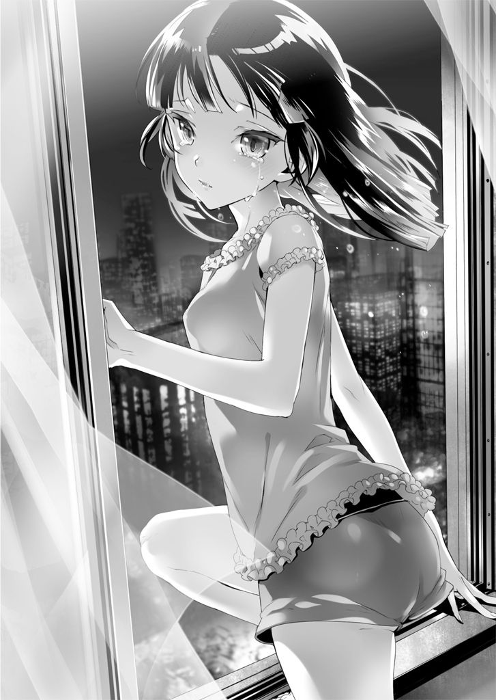
「あ......トモ......その、ごめん」
振り返り、ベッドにあぐらをかいた彼女に謝る。しかし智花は不服そうだ。
「ごめん？ それは何に対する謝罪なのかな？ 君がかれこれ三分二十秒もぼけーっと空を見上げていたことに対してかな？ それとも、可憐な美少女たるボクを乱暴にも突き飛ばしたことかな？ 後者だとしたら、それは不当だと言わせてもらおう。いや、この言い方は違うな。うん、そうだ」
彼女が半眼で言う。
「それはずるいよ、エーリ」
「......ごめんなさい」
それ以外に、返す言葉を思いつかなかった。
「だいたい君はせっかちなんだよ。血液を入手する伝手はあるんだ。君が短気を起こさなければ、ケイに比較的安全に血液を摂取させることができたのに」
「えっ？ そんな、それならそうと早く言ってくれ！」
「君が言わせなかったんだけどねえ」
「ごめんなさい......」
「過ぎたことをどうこう言っても仕方ない。そんなことより早くケイを捜し出さないとまずいね。この辺には『H.A.W.K.』がいる。それも伊切くんたちがね。見た目だけでは判別できないと思うけど、ケイが『吸血鬼』だってバレたら問答無用で殺されるよ」
「そ、そうだっ。早く......」
そこで気持ちが沈んでしまう。
智花が眉をひそめた。
「どうしたんだい？ さっきみたくボクが止めるのも聞かずに飛び出していくのかと思いきや、随分おとなしいね」
「......俺が捜しに行っても、慧はまた逃げるかもしれない」
先程の拒絶の言葉は、予想以上に深く胸に突き刺さっていた。
智花は目を丸くし、それから「ハーッ」と深くため息をつく。身を乗り出し、叡理の顔を下から覗き込んだ。
「エーリ。君は何ていうか、すごく、アレだね。うん、アレだ。アレ過ぎてこっちが疲れてくるよ。ああ、何だろう。この感情。これは、そうだ。怒りだね。ボクは今、腹を立てているんだ。総上叡理という男に」
「トモ......？」
「本来なら小一時間ほど説教したいところだけどね。今は時間がないから手短にいくよ。エーリ、君は大いなる勘違いをしている。ケイは君のことが嫌いだから避けたんじゃない。むしろ逆だ。君を巻き込みたくなかったから、君の血を吸ってしまいたくなかったから、君に近づくなと言ったんだよ。ついでに言わせてもらうと、これはボクの乙女心からの推察だけれど、ケイは君に『吸血鬼』の顔を見せたくなかったんだ。だから枕で顔を隠したりして。なかなかいじらしいじゃないか。それなのに君と来たらっ」
人差し指を突きつけられる。そのまま鼻をぐいと突かれた。
「だいたい、拒まれたからって助けに行かないなんて選択肢があるのかい？ 君の妹愛はその程度だったのかな？ 総上叡理は随分と薄情者なんだね」
とどめを刺された気がする。
叡理は深々と息を吐いた。
「うん。そうだ。助けに行かないなんて選択肢は最初からない。慧が俺のことを嫌っていても、俺は、その、慧が、大切なんだ。絶対に守りたい」
ベッドから降りる。
「捜しに行くよ。ただ、慧は俺を見たら逃げるかもしれないし、今の俺に慧を止められるか分からない。力を貸してくれ、トモ」
「最初からそのつもりだよ。それにエーリ、君は無力じゃない」
智花もベッドから降り、叡理の腕時計を指さした。
「連絡は常時可能だ。ネメシスも上手く使いこなしてケイを捜し出そう」
「ありがとう」
二人は家を飛び出した。
ＣＯＤＥ：００８
『お兄ちゃん、どこに行くの？』
『遠足だよ。慧、この前、熱が出て学校の遠足に行けなかっただろ』
『本当っ？ どこに連れていってくれるのっ？』
『えっと、そうだな......』
叡理は、丘のふもとに立っていた。
そこは子どもの頃、よく妹と二人で登った丘。
頂上に杉の木が一本立っているだけの、特に何もない丘で、ただ見晴らしは良かった。
小さな頃から体の弱かった慧はよく学校を休むことがあり、それが遠足の日であったりすると、とても寂しそうにしていた。
そんなとき、慧の調子が良くなるのを見計らって、叡理は妹を丘に連れて行った。そこで自分の作った弁当を広げ、少しでも慧に遠足気分を味わわせようと思ったのだ。
あの頃は、おにぎりくらいの、下手な弁当だったけどな......。
楽しそうに笑っていた顔を、今も覚えている。
午後十一時過ぎ。
一時間以上走り回っているが、慧の行方は杳として知れなかった。
オラクル№88『吸血鬼』は、感染者を吸血鬼にする。
感染者はヒトの血液からしか養分を摂取できなくなるため、飢えれば他者の血を求めるようになる。
吸血鬼の特長としては、まず超人的な身体能力が挙げられる。
片手で軽々と数トンの物を持ち上げたり、一跳びで地上から高層ビルの屋上に達したりすることも可能だ。さらに車で轢かれたくらいでは傷一つ負わない。
ただ、これら驚異的な身体能力を発揮すると、体内の血液をエネルギーとして大量に消費する。逆に大量の血液を消費すれば膨大な力を使うことができるともいえる。
そして最大の弱点が、日光だ。
日の光に当たると、直ちに水ぶくれができ、さらに浴び続けると灰と化して崩れ落ちてしまう。昼間、屋外に出ることは死を意味すると言って良い。
腕時計に搭載されていた図鑑には、そういったことが列挙されていた。
つまり、日の出までに妹を見つけなければ最悪の結果もあり得る。
さっき慧が跳んでいった方角とはまるで違うし、距離も近すぎる。でも......。
叡理は一縷の望みを託し、丘を登った。
やがて階段が見えてくる。
子どもの頃はとても大きく見えていたそれを、一段飛ばしに駆け上がった。
登り上がった先からは舗装されていない土の道だ。森に入り、足下が真っ暗になったけれど気にしない。記憶をたどり、森を抜けた。
夜風が吹きつける。
淡い月明かり。
見晴らしの良くなった視界に、一本の木の影が入った。
雑草だらけの、ところどころ土が剥き出しになった斜面を登っていく。
息が上がっていた。
斜面を吹き上げる風が強い。
杉の木が、その輪郭をどんどん大きくしていく。
ふと、その根元に不自然な出っ張りが見て取れた。
気のせいかも知れない。
勝手な希望が見せた幻影かも。
それでも、それを目指して走った。
ふもとに近づくにつれ、希望は確信に変わっていった。
慧っ......。
慧っ。
慧！
たどり着く。
杉の木にもたれかかり、慧が倒れていた。
「慧っ！」
妹の側で屈み、顔を覗き込む。
険しい表情。
浅く、苦しそうな呼吸。
月明かりに浮かび上がった顔は真っ青だった。
「慧、慧っ。しっかりしろっ」
そっと肩に手を置く。
強く力を込めれば簡単に折れてしまいそうな華奢な体。
目の前にいるのに、あまりに儚い。
「慧、もう大丈夫だからなっ。すぐに血を用意してもらうから」
腕時計を操作する。
「トモっ。慧を見つけた！ どこに連れていけば良いっ？」
そう呼びかけると、すぐに返事が返ってきた。
『よくやったね、エーリ。とりあえず、シーさんの研究所は......位置情報を送るから、そこに向かって移動してくれ。途中で合流しよう』
『分かった』
端末の方にメールが来た。開くと、一軒の病院が地図上に出てくる。ここを目指せば良いのだろう。
ここからだと、直線で２キロくらいか。ざっと３キロと考えて......。
妹に背を向け、彼女の両腕を肩に乗せる。胸の前で交差させて左手で固定した。
自分の体を前に倒して慧の体重が全て自分にかかるようにする。
リビングで担いだときより軽く感じられた。
一旦、左手を離し、彼女の両足を抱えて重心を整える。
それから足を踏ん張って、立ち上がった。
軽く背負い直し、胸の前で交差している腕も整える。
右肩に妹の頭が乗っている。
そうっと右を向き、その吐息を感じ、気持ちを引き締めた。
よし！ 急ごうっ。
空中に浮かぶ地図を見つめ、叡理は病院に向けて斜面を下っていった。
丘を下って車道に出る。
タクシーを拾えたら良いんだけど......。
もう深夜といって良い。街中ならともかく、この辺りでは車そのものがほとんど走っていなかった。
端末で位置を確認しながら走る。
慧の体温と感触だけが支えだった。
大丈夫。大丈夫だからな、慧。絶対に......。
目指す病院は町外れにあり、どんどん町の中心部から離れていく。
道のりを半分ほど来た。
道順を端末で確認していると、後ろからライトが近づいてくる。
少し揺れながら近づく小さな点は複数あった。じきにそれが、自転車のライトだと分かる。自転車に乗った少年たちが数人、叡理の脇を抜けていった。
何とはなしに彼らの背を見送り、ギョッとする。
白のライダースジャケット。赤文字で「H.A.W.K.」と書かれている。
まずい、と思ったときには遅かった。
「大丈夫っすか？」
追い抜いていった自転車集団が、引き返してきたのだ。
「うちら『H.A.W.K.』っていって、知ってます？ この辺、見回ってるんすけど」
「少し先でフェクター絡みの事件があって。で、周辺の警戒してるんです」
「その子、どうかしたんすか？ 救急車呼びましょうか？」
あっという間に囲まれてしまう。
どうやら単に親切心で戻ってきてくれたようだが、かなりまずい状況だ。
「あ、いえ、大丈夫です。妹を家に連れて帰ってるだけですから」
「妹さんっすか。家、近いんすかね？ 何だったら送りますよ」
パッと光が当てられた。
叡理は眩しさに目を細める。少年の一人が懐中電灯をこちらに向けていた。
「妹さん。顔色悪くないっすか？ やっぱ救急車呼んだ方が」
「いえ、本当に大丈夫ですからっ。気にせず見回りを続けて下さいっ」
少し口調が強くなってしまった。
少年たちは訝しげな顔になり、互いに目配せする。
「そうはいっても、これで何かあったら俺らが伊切隊長に叱られるからなあ」
思いがけず、知っている名前が出てきた。
「ううっ......」
叡理の耳元で、慧が呻く。
「......お兄ちゃん」
反射的に、少年たちを押しのけていた。
「えっ？ ちょっと」
「待って待って、おいって」
「すみません！ 本当に急いでるんでっ」
強い語気で言い返す。
少年たちは狼狽え、また互いに顔を見合わせた。
「わ、わかりましたっ。じゃ、最後にこれだけっ。これだけ確認させて下さい！」
一人が駆け寄ってくる。その手には波形探査器が握られていた。
「何ですか？」
睨む。追ってきた少年は苦笑いを浮かべた。
「これ、波形探査器っていって、フェクターかどうかを調べる器具なんすよ。別に疑ってるとかそういうんじゃなくて、見かけた人には全員やれって言われてるんで。ご協力お願いしまーす」
愛想の良さそうな相手の笑顔が、叡理には悪魔の嘲笑に見えた。
「......あ、それなら、もうやりましたよ」
「あれ？ それっていつですか？ どんな奴でした？ 名前とか聞いてます？」
立て続けの質問に、つい口走る。
「伊切にっ、佐嶋さんでもいいや。学校でチェックは受けてます！ だから」
「伊切隊長？ それに佐嶋......ああ、同じ学校なんすか」
「あ、ああっ。クラスメイトで」
「それはそれは、失礼しましたっ」
頭を下げられる。叡理はホッと胸をなで下ろした。
「じゃあ、そっちの妹さんだけ」
顔を上げた少年は、笑みを張りつけたまま言う。
「お兄さんは結構ですんで、妹さんだけ、お願いしますっ」
「............」
「すぐなんで。学校でチェック受けたってことは、例の『土蜘蛛』騒ぎのときっすよね？ 妹さん、高校生には見えないっすけど」
いつの間にか、他の隊員たちも叡理を囲み直していた。
「何か、まずいことでも？」
尋ねられる。その声音には、疑念が混じっていた。
「いえ......。でも、本当に急いでるんです。今、何時だろ？」
叡理は腕時計を見る。
少年たちは慧に意識を向けているようだった。
素早く腕時計を操作する。一か八か、「コウイカ」を投与した。
立ちくらみに襲われ、よろける。
全身に異様な震えが走った。
「ちょ、大丈夫っすか？」
「やっぱ救急車呼びますよ。先に探査、済ませちまおうぜ......？」
叡理の体が、透けていく。
続いて服が、そして担いでいる慧まで。
少年たちが目を見張った。
「ごめん！」
目の前の少年に体当たりを食らわす。
不意を突かれた相手は尻餅をついた。その上を飛び越える。
そして一心に駆けた。
途中の路地に滑り込み、懸命に走る。
追っ手はすぐに振り切れた。離れたところから少年たちの「どこいった!?」という叫び声が聞こえてくる。歩調を落とし、息を整えた。
助かった......。かなりの賭けだったけど。
コウイカの能力は、不思議なことに体だけでなく服や触れているものにまで効果がある。どういう原理なのか叡理は理解できていないが、能力が発現すると全身を薄い膜状のもので覆われる感覚があった。その膜で包める範囲に効果が及ぶのかもしれない。
多少、遠回りになったものの、その後は白ジャケットを見かけることなく進めた。一時間かからず、目的地の病院近くまでたどり着く。
「？」
腕時計から智花の声が聞こえてきた。いつになく固い声音で呼んでいる。
「トモ、どうした？」
『エーリ、ごめん。まんまとしてやられたよ』
嫌な予感に囚われる。
『ボクが尾行されていた。あのとき随分あっさり帰してくれたと思ったら、思い切り疑われていたみたいだね』
『疑いは晴れている』
別の声が聞こえてきた。伊切のものだ。
『ただ、この眼帯女には何かあると睨んでいたんだ。総上、目的地の病院にそのまま向かえ。俺たちも向かう。こいつが言うには、「蛇」の正体が分かったそうじゃないか。その情報とこいつを交換という取引でどうだ？』
「俺がこのまま逃げたらどうするんだ？」
『そのときは「H.A.W.K.」が総力を挙げてお前を追うだけだ。総上、どうして、うちの部下を振り切った？ お前の妹は、本当にフェクターなのか？ 妹の身の潔白を証明したいなら、病院まで来い』
「......分かった」
妹を背負い直し、叡理は病院へ向かった。
目的地の建物が、夜の闇に輪郭を浮かび上がらせていた。
病院の玄関前にたどり着く。四階建ての近代的なビルだ。人気は全く感じられない。
「ここか？」
首を捻る叡理に、駐車場の方から声がかけられた。
「総上、こっちだ」
車が一台も駐められていない駐車場。広いスペースのほぼ中央に人影が三つあった。
伊切と智花、そして佐嶋だ。
「二人だけとは、余裕だね」
叡理は、彼らとある程度の距離を置いて立ち止まる。そっと慧を下ろし、寝かせた。
伊切に後ろ手を取られて動きを封じられている智花が「来てくれたんだね、エーリ」と感極まったような声を上げているけれど、あれはただの演技だろう。
「この眼帯女が、そうしないと俺が後悔すると言うものだからな。まあ、余裕があるのは間違いない。連絡すれば、他の隊員も五分とかからず集結させられる」
「ぬかりはないってことか」
伊切たちと少し離れたところに立っている佐嶋を一瞥する。
彼女は厳しい顔つきで、こちらを見ていた。
「色々と聞きたいことはあるが、まずは『蛇』のことを片付けよう。水無月がいうには『蛇神』だったか？ そいつを特定できたそうだな。どこにいる？」
伊切が切り出す。
叡理はもう一度、佐嶋を見た。
「エーリ、無理をすることはないよっ。ボクのことは構わず、早く逃げるんだ！」
智花の叫びに苦笑してしまう。
「ああ、そうか。そういうことか」
額に手を当てる。智花を見つめた。
「トモ、捕まったことを利用したな。俺に『蛇』のことを喋らせるために」
それまで大げさに騒いでいた彼女が、動きを止めて真顔になる。
「ふうん。気づいちゃったか。だって君、公表する気なかっただろ？」
「確かに、証拠を掴んだら本人とだけ話をして、あとは黙っておくつもりだったよ」
「エーリのお人好しっぷりは小さな頃から変わってないね。そういうところも好きだよ」
「トモのそういう計算高いところは、むしろ信頼できる」
その返事は予想していなかったのか、智花が右目を泳がせて俯いた。
「おい。この状況で、よくいちゃつけるな」
伊切が呆れている。
叡理は覚悟を決めた。
「伊切。一つだけ、お前が知らないネメシスの真実がある」
「ほう。聞こうじゃないか」
「ネメシスはオラクルのワクチンじゃない。単なる失敗作だ。だから、ネメシスをいくら投与しようと、オラクルには感染するんだ」
佐嶋の肩がぴくりと跳ねる。伊切は黙ったままだ。
「ネメシスの副作用を発現させられるからといって、そいつがフェクターじゃないという証明にはならないんだよ。今のところ、調べる方法は精度の高い波形探査器を直接押し当てるしかない」
「......それが本当だとして、『蛇』の特定にどう役立つんだ？ 逆に容疑者が増えるだけじゃないか」
「ああ、そうだ。でも、この前提を間違えていると『蛇』にたどり着けなくなる。伊切、お前みたいにね」
相手の表情は変わらない。
「それじゃあ、『蛇』であり得る条件を挙げていこう。一つは、この町に住む十代女子。これには最近やって来たトモも含んでいいだろう」
「ひどいなエーリ。ボクを疑うだなんて」
白々しくも智花が口を尖らせた。
「二つ目は、警察の情報を盗み見ることができる奴、だろ？」
伊切が告げる。叡理は頷いた。佐嶋が目を見開き、智花は「おや？ 君も気づいてたのか」と伊切を振り向く。
「伊切が単独行動をしていたのは、『蛇』が警察の裏を掻いて行動していることに気づいたからだ。月、火、水と成果がなかったのはもちろん、前五件の事件だって上手く警察と『H.A.W.K.』の目を盗んで動いていたから目撃情報がなかった」
「警察の情報を知ることができる十代女子。これでかなり絞れるな。ただ、ここからが難しい。俺は、この眼帯女を疑っていた。こいつは事件について、公表されていない事実を知っていた」
「土蜘蛛事件の後だろ。『蛇』が被害者を丸かじりしてるって。あれは俺も内心、トモが口を滑らせたなあと思っていたんだ」
「気づいていたなら、エーリもフォローしてくれれば良かったのに」
智花が口を尖らせた。それを見ながら伊切に尋ねる。
「疑いが晴れたのは、『蛇神』がフェクターだって確認が取れたからか？」
「いや、その前に......そんなことはどうでもいいだろう。総上、さっさと続けろ」
促され、叡理は一度、深呼吸をした。
「警察の情報を知ることができるのは、『H.A.W.K.』隊員もだ。伊切が単独行動に出たのも、それに気づいたからだろ？ 『H.A.W.K.』隊員の中に『蛇』がいる。この町にいる十代女子。かなり限定されるよな」
「それでも、一人には絞れない。総上は知らんだろうが、この町には──」
「君の部隊の隊員だよ、伊切」
叡理はあえて伊切の言葉を遮る。
相手の表情がじわじわと苦しそうに歪んでいくのを、見ていられなかった。
ここまできたら、早く結論を言うべきだ。
「実はトモに頼んで、警察の情報網をハッキングしてもらったんだ。フェクター関連の部署だけで良かったから、二日で何とかなったらしい。そして月曜から始まった総動員作戦の情報に仕掛けを施した」
「............」
「伊切。『H.A.W.K.』の各部隊に届けられた警察の情報には、少しずつ違いがあるんだ。どこに警官が配備されるのか。『H.A.W.K.』はどこを担当するのか。それぞれ『穴』を別の場所に作った。伊切がさっき夜警をしていた地区。そこが『穴』になっているという情報を得ているのは、お前の部隊の隊員だけだ」
「大した仕掛けだな」
伊切が苦々しく呟く。
「ここまで言えば、もう分かるよな。お前の部隊に女子は一人しかいない」
叡理は改めて佐嶋を見た。
「佐嶋さん。君が『蛇』だ。『蛇神』のオラクルに感染したフェクターだ」
「............」
佐嶋は押し黙っている。伊切が振り向き、「反論はないのか」と訊いた。
「......証拠は、あるの？」
か細い声で、彼女は言う。
「あるよ。まだ用意できていないけど。今夜中にトモに見つけてもらって、明日、佐嶋さんと話そうと思っていたから」
「......証拠なんて、ないと思うんだけどなあ」
「佐嶋さん。今日、隣町の夜警に行ってたんだよね」
「そうだよ。そう。私、アリバイがあるんだよ......」
「でも、隣町ではバラバラに行動してたらしいね。普通、二人組とか作って動くんじゃないのかな？ 不自然だよね」
「私、そういうの詳しくないから、指示をミスしちゃったんだよ......」
「じゃあ、こっちにはいつ戻ってきたのかな？ 少なくとも行きは他の隊員の目もあるし、一緒に電車で向かったんだろうね」
「そうだよ。証明してくれる隊員も、いるよ」
「じゃあ、帰りは？ やっぱり電車なのかな？」
「............」
「答えられるよね、すぐに。ほんの数時間前のことだよ。他の隊員と同じ電車に乗らなかったの？ 証明してくれる人はいないの？」
「た、たまたま、一人だったからっ。急いでたしっ......」
佐嶋の言い訳は、とても弱々しかった。本人も自覚しているだろう。
それでも叡理は、とどめを刺さないといけない。
「改札を通るとき、支払いに端末を使うよね？ あれってデータが残るんだ。追跡しようと思えば、どの端末がどこの改札を何時に通ったのかが分かるんだよ。警察が動けば、一発で特定される。佐嶋さんの端末が、何時にどこの改札を通ったのか」
「............」
「もし事件の前に戻ってきていたら。もし全く改札を通った記録がなかったら。どう説明してくれるんだ。佐嶋さん！」
「わ、私はっ......」
頭を抱え、佐嶋が屈み込んだ。
「私、違う......違うの......」
「伊切、学校で波形探査器を使った調査をしたとき、佐嶋さんだけは調べてないよな」
「......ああ。礼は、初めから会議室でスタンバイしていた」
「今、ここで、調べてみればいい。彼女がフェクターか、そうでないか」
「............」
伊切は佐嶋をじっと見下ろす。彼女は縮こまっていた。
「行け」
智花が解放される。背中を押され、彼女は「エーリ！」と駆け寄ってきた。飛びついてきたので受け止めたが、突き出された唇は避ける。
「何だい、感動の再会なのに」
「そういう状況じゃないだろ」
伊切の方を見た。彼は眼鏡のつるを押さえて両肩を回している。
「礼」
幼なじみの名を呼んだ。
「そこを動くなよ、絶対に」
「おやおや、すぐに捕まえて処理しなくていいのかな？」
智花が意地悪く言うと、ギロリと睨んできた。
「取引は成立した。お前たちは『蛇』の情報を提供し、俺は眼帯女を返す。次は、そこで寝ているフェクターについてだ。総上、人の身内に散々言ってくれたな。今度はこっちの番だぞ」
「波形探査器を使う必要はない」
「それは、認めるということだな。お前の妹がフェクターだと」
「ああ、そうだ。その上で、慧には指一本触れさせない」
拳を握りしめ、一歩前に出る。伊切が口の端をつり上げた。
「いいだろう。フェクターを庇う奴相手に、容赦はせんぞ」
伊切の体が変化する。
全身に鱗を纏い、身長よりも長い尻尾を生やした。
「オナガセンザンコウかい。攻撃と防御を同時にできる優れものだね」
智花が呟く。
鱗や硬い甲皮は、大抵、防御のためのものだ。
しかし鱗に攻撃能力も備えさせた動物がいる。その鱗は縁が鋭く尖っており、長い尾を振り回して攻撃することもできる。鱗に防御と攻撃の両方の能力を持たせた存在。
オナガセンザンコウ。
「ボクが相手をしてあげよう」
智花が眼帯を押さえ、不敵な笑みを浮かべた。
「いや、俺がやる。妹を守るのは兄の役目だ」
そんな彼女を制し、叡理は前に出る。伊切が目つきを鋭くした。
「たとえ一般人だろうと、手加減はできんからなっ」
尻尾を振る。松毬状に尖った鱗に包まれた尾が、鞭のようにしなって叡理に襲いかかった。それを躱し、腕時計を見る。
ネメシスの特性が発現し、周囲と色味を同化させた。
「『コウイカ』か。それで、どうするつもりだ？」
伊切は平然としている。出来る限り音をさせないよう叡理は慎重に歩を進めた。
どんなに固い鱗に覆われていても、弱点はある！
相手に身を寄せ、拳を下から突き上げる。喉か顎を打つことができれば──
「まあ、そうするよな」
叡理の拳はすんでのところで止められた。
オナガセンザンコウの太い爪が食い込む。叡理は歯を食いしばった。
「俺の体が鱗で守られている以上、素手のお前にできるのは鱗に覆われていない部分を狙うことくらいだ。特に、一撃で昏倒させられるくらいの箇所」
伊切がニヤリと笑う。
「悪くないセンスだ。だからこそ、読めた」
瞬間、尻尾が叡理の脇腹に叩き込まれた。
「かはっ......」
息を吐き出し、よろける。
拳を掴まれたままだったので、逃げることも適わない。
「捕まえてしまえば、消えていようがいまいが関係ない」
伊切の拳が繰り出される。
数発は躱したが、その数倍殴られた。
「動くな、眼帯女！ 妙な真似をするんじゃない！」
不意に伊切が怒鳴る。
智花が慧に何かを飲ませようとしていた。
あれは......血液っ？ そうか、トモは捕まる前に準備を......。
それに気づくや否や、異常な膂力で投げ飛ばされた。
叡理は宙を舞い、智花たちにぶつけられてしまう。
三人ともアスファルトの上に倒れた。
血液の入った袋が地面を滑っていく。
「フェクターは......全員、処理する」
伊切が近づいてきた。
「......させるか！」
挑みかかるが、尻尾で打ち据えられる。尖った鱗に切り裂かれ、鮮血が散った。
ネメシスの効果が切れて傷だらけの姿が露わになる。
「エーリ！」
智花の悲鳴。
「慧っ......」
すぐ側に倒れている妹に覆い被さった。
「どけ、総上。もう、そいつはお前の妹じゃない。フェクターだ」
「それがどうしたっ。慧は、俺の妹だっ。大切な、たった一人のっ......」
「どけと言っている！」
尻尾が振り回され、叡理を叩きのめす。
背中が裂けて血が舞った。
胸ぐらを掴まれる。引っ張り起こされ、尖った鱗に覆われた拳で殴られた。
意識が飛びそうになる激痛。
頬も切れ、血が流れ落ちる。
「諦めろ！ もう、手遅れだ！ 手遅れなんだよっ！」
拳が次々に襲い来る。
叡理は腕を広げ、背後の慧を守り続けた。
腕が抉られる。
激痛に全身が震えた。
尻尾で脇腹を打たれる。傷口が広がり、痛みに咳き込んだ。膝が沈む。
それでも必死に妹を庇った。
「こいつっ......。本当に死ぬぞ!?」
「......殺せよ」
歯を食いしばり、意地で意識を保って睨み返す。
「......総上、そうやって妹を守ろうとする、お前が羨ましいよ」
眦を決し、どこか辛そうに、伊切は拳を握りしめた。
慧、ごめん......。
叡理は最後に妹の顔を見ようと、振り向いた。
慧と目が合う。
えっ？
戸惑う叡理を真っ直ぐ見つめる妹の顔には、血が点々とついていた。
自分の体からしたたり落ちる鮮血。
その数滴が、慧の顔を、唇を、濡らしている。
ぺろり。
惚けた顔をしていた妹が、舌なめずりをした。
叡理の血を嘗め取り、恍惚とした表情になる。
「あ......あああ......」
蒼白だった顔に、僅かに赤みが差した。
「あああああ......美味しい......」
その呟きに、総毛立つ。
妹はのろのろと身を動かし、自身の服に染みている叡理の血を啜った。
「あ、甘い......美味しいっ......お兄ちゃんっ......」
何かに魅入られたような笑顔になり、次の瞬間、叡理の腕にむしゃぶりついた。
「け、慧っ？」
「あああ美味しい美味しい美味しいよおっ。お兄ちゃん、お兄ちゃんの、すごく甘くて美味しいいいっ。もっと！ もっとおおっ！」
上腕の傷口から血を啜り、さらに舌を這わせて肩の傷まで嘗め上げる。
ズルズルと音を立てて血を啜ると、美味しそうに喉を鳴らした。
「ああああああっ。我慢してたのにいっ。絶対ダメだって我慢してたのにいっ。止まらないよおおっ。止められないよおおおっ......」
腕にしがみつく慧の瞳から、ぽろぽろと涙がこぼれ落ちる。
至福の悦びに満たされながら、ぽろぽろぽろぽろ涙を流した。
固い音が響く。
慌てて振り向いた叡理は、目を剥いて突っ立っている伊切の姿を見止めた。
「総上......そいつは、お前の妹は、『吸血鬼』なのかっ？」
「......ああ、そうだよ」
泣きながら血を啜る慧の頭を、そっと撫でる。
「吸血鬼でも、俺の大事な妹だっ」
「何てことだ......」
眼鏡のつるに指を当て、伊切は眉間にしわを寄せた。
「最悪の展開じゃないか！」
叫び、尻尾を振り回す。
叡理は妹を庇おうとして、
「もう、邪魔っ」
苛立ちを帯びた彼女の声に、耳を疑った。
こともなげに、慧がオナガセンザンコウの尻尾を掴む。
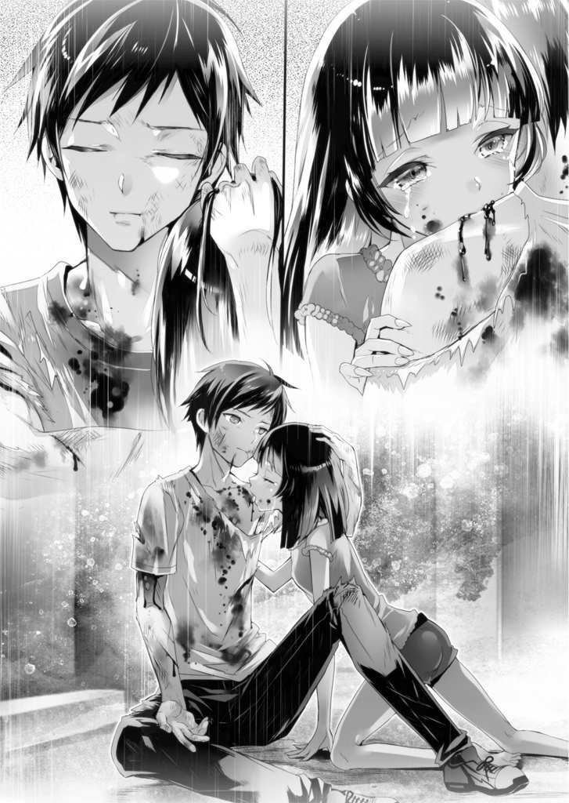
「ぐっ......」
伊切が呻いた。
「邪魔だから、あなた、あっちいってて」
その細い腕を軽く振る。
たったそれだけで、伊切の体が宙に浮いた。
「うわあああっ！」
一回、二回、三回......伊切を振り回すと、慧はゴミでも捨てるように放り投げる。
ものすごい速さで吹っ飛んだ伊切は、廃病院の窓に突っ込んだ。
窓ガラスの割れる音が夜空に響く。
「伊切......？」
にわかには信じがたい光景に、叡理はただただ病院の壁を見上げた。
「コウちゃん！」
佐嶋が悲鳴を上げる。
智花は厳しい表情でこちらを見ていた。
「痛っ」
肩の痛みに振り向く。
慧がうっとりと肩に吸いついていた。
「もっとお......。もっと欲しいよお、お兄ちゃあん......。ずっと我慢してたんだから。ずっとずっと我慢してたんだから、いいよねえ？ もっと、いいよねえ？」
口元を真っ赤に染め、だらしなく舌を出して叡理を見上げる。
ぎゅっと抱きついてきた。
艶然と笑う口内には、二本の牙がはっきり見える。
「慧......」
恐れは全くなかった。
陶然と、彼女の瞳に吸い寄せられる。
慧が首に腕を回した。
喉に噛みつかれる。
叡理は妹をしっかり抱きしめた。
「ああ。全部、持っていけ。全部......」
痛みはすぐに薄れ、奇妙な悦楽に満たされる。
四肢が痺れ、頭がぼうっとしてきた。
慧......慧......。
そのまま目を閉じようとしたとき。
「しっかりするんだ、エーリ！ ケイも！」
智花の怒鳴り声が耳朶を打った。
強引に妹と引き離そうとしている。
「ケイ！ それ以上吸ったら、エーリが死ぬよ！ 正気に戻れっ」
慧に突き飛ばされ、あっけなく彼女はアスファルトの上に倒れた。
いいんだよ、トモ。これでいいんだ。だから......。
妹の背を撫でる。
「慧」
愛おしい名を呼んだ。
不意に、慧の感触を失う。支えをなくし、叡理はその場に頽れた。
バタバタと足音が広がる。
白ジャケットを羽織った少年たちが、周りを囲んだようだ。
「佐嶋！ 何がどうなってんだっ？」
「伊切隊長はどうしたっ？」
「こ、こいつら、どうすればいいっ？」
「まさか、吸血鬼......？」
ようやく駆けつけた「H.A.W.K.」の面々も、予想外の状況に動揺しているらしい。せっかく多数で囲んでいるのに、それ以上、何もできずにいる。
「......お兄ちゃん？」
慧の声が耳に入った。
懸命に首を巡らして妹の方を向く。
慧は、泣きはらした顔でこちらを見下ろしていた。
隣で智花が何か言っているようだが、その声は聞こえない。
のろのろと腕を上げ、妹が口元に触れた。
血を確認し、さらに自分の口から生えた二本の牙にも指を這わせる。
小さく頭を振った。
「嘘......嘘だよっ......嘘っ......」
叡理に腕を伸ばし、途中でビクッと手を止める。
いいんだ。いいんだ、慧。
ショックを受けているのだろう妹を落ち着かせようと、叡理は動かない腕を必死に動かそうとした。
じりじりと、アスファルトの上を滑らせる。
慧に向けて、手を伸ばす。
しかし妹は僅かに身を引き、自分の頭に手をやった。
そして、絶叫。
周囲の「H.A.W.K.」たちが騒ぎ出す。
誰かが「殺せ！」と叫んだ。
皆がそれぞれにネメシスを投与して身構える。
ほんの一呼吸だった。
たったそれだけの間。
それだけで、慧は、周りの「H.A.W.K.」十数人を蹴散らした。
吹き飛び、叩きつけられ、地面に転がる白ジャケットたち。
数人が悲鳴を上げて逃げ出した。
彼らを一顧だにすることなく、慧は叡理の下にやって来る。
叡理を見下ろし、寂しそうに微笑んだ。
「ごめんなさい......」
頬から伝う涙。
それがぽろりと落ちて叡理の頬に当たる前に──
慧は夜の闇へと、姿を消してしまった。
ＣＯＤＥ：００９
※ ※ ※
「自己犠牲とは何だろうな」
チェス盤の前で、黒コートはそんなことを言い出した。
「利他的行為とは違うのか？」
叡理はポーンを進める。
「究極的には同質だろ。ただし、利他的行為には巡り巡って自分自身が得をするという予測が含まれている。『情けは人のためならず』というやつだな。それに対し、自己犠牲は自身が完全に損をする。死が、その典型例だ」
相手はナイトを動かし、叡理のクイーンを狙ってきた。
「利他的行為は打算に過ぎないって？」
「いやいや。生存本能という観点から見れば、利他的行為の方が正しいんだ。自分が生き残る確率を高めるために、周囲を助ける。この方法で人間は生存確率を上げ、拡大を続けてきた。ところが自己犠牲は、それに反する」
「......生存本能に反する行為か。何か、それ以上の価値が付与されれば、実行する人はいるんじゃないかな。自己犠牲は大抵、美化されるだろ」
クイーンを逃がしつつ、相手のルークを封じにかかる。
「悪くない発想だ。そういう自己犠牲を利己的だとして忌避する言説もある。自己満足だとね。自己の満足が達成されるなら、それはもはや利他的行為ですらないな」
「ドＭの理論だ」
黒コートが声を上げて笑った、ようだ。
「だが、その言説が示唆するのは純粋な自己犠牲に対する疑義だろ。究極的には自己犠牲も利他的行為も同じ利己的な行為に過ぎないというね」
ビショップが動き、こちらのポーンを一つ潰す。
「そう思い込みたい利己的な奴の発想じゃないかな。自分が他人のために何かする気がないから、利他的なことをする人間を貶めないと自身の生存が危ぶまれるんだよ」
「そこでも生存本能が働くわけだ。自分のやりたくないことを是とする社会になってしまうと自身の生存確率が下がる。だから自分に有利な言説を押しつけて広めようとする」
「結局は、そういうものの鬩ぎ合いだろ、世の中って。どうしたら自分に有利になるかを考えて、みんな行動している」
「なら、自己犠牲とは何だろうな？」
「......昆虫の世界では、そういうものがあるって聞いたような。ミツバチだっけ？」
「遺伝子にプログラムされているのだと言われるな。種が生き延びるために犠牲となる個体が用意されている。しかし、プログラムによる行動だとしたら、そこに意思はないということにならないか？ 自動的に行われる行為を自己犠牲と呼べるのか？」
叡理はナイトを使って相手のキングにチェックをかけた。
「意思が重要だというなら、結局は優先順位の問題だと思う。自分にとって何が一番大切か。それによって行動は変化するだろう。それが端から見れば自己犠牲に映ったり利他的行為だって見なされたりする。それだけのことかもしれない」
「個の生存本能よりも上位に位置するものからの要請に、自己犠牲という言葉が当てられると？ それは、やはり自己満足でしかないな」
相手のキングが逃げる。
「でも、社会的に価値ある行為なら、ただの自己満足とは言い切れないだろ」
ポーンを敵ナイトの前に進めた。
「社会的にねえ。それも疑義の対象だな。さっき、お前が言ったんだぞ。自己犠牲は大抵、美化されると。逆に自己犠牲を美化し、価値あるものだと錯覚させられれば、利己的な人間が他人をいくらでも死地に送り込めるわけだ」
「......嫌な単語が思い浮かぶな」
敵ルークがポーンを蹴る。
「さて、三度問おうか。自己犠牲とは、何だ？」
「............」
叡理は腕を組み、しばらく考えた後、自身のクイーンを相手キングに寄せた。
「ふむ」
黒コートが首を傾げる。
クイーンのチェックから逃れるためには、キングで取るしかない。
しかし、それをすればナイトが相手キングを取ってしまう。
逃げようにも、相手ナイトとルークが逃げ場所を遮ってしまっていた。
チェックメイト。
敵ルークにポーンが殺されたお陰で、この状況が出来上がった。
黒コートが「ううむ」と呻いた。
※ ※ ※
「今際の際から生還するなり、他人の胸に顔を埋めるとは、なかなかの逸材ね」
険のこもった声に、目を覚ます。
目を開いたはずなのに、叡理は暗闇の中にいた。
顔全体を覆う柔らかな感触。
ハタと気がつき、体を後ろに引いた。
視界が開ける。
目の前に、紫のブラジャーに包まれた豊満な胸が現れた。
「あ、あれ？」
恐る恐る顔を上げる。
嗜虐的な笑みを浮かべた安西シエラがいた。
「お目覚めかな、総上叡理くん。お姉さんのおっぱいがそんなに恋しかった？」
化粧気は全くないのに、蠱惑的な色気が漂っている。以前見たのと同じ、紫の下着に白衣を羽織るという大胆な格好で叡理の顔を覗き込んでいた。
「あ、その......」
さらに身を引く。
安西が左手を挙げ、叡理にデコピンをした。
「痛っ」
「いきなり起きちゃダメよ。もう少しおとなしくしてなさい。君、出血多量で死にかけてたんだから」
「出血、多量......」
一瞬で先程のことを思い出す。
「慧はっ？ 慧はどうなって」
「寝てなさいって、言ってるでしょ！」
顔面を掴まれ、枕に無理やり押しつけられた。
「細かい話は水無月に聞きなさい。ったく、人ん家の前で散々騒いだあげく勝手に上がりこむとか、いい迷惑だわ」
安西がぼやき、叡理の寝かされているベッドから離れる。理科室で見るような広いテーブルに乱雑に置かれたものの中から菓子箱を引っ張り出した。ポッキーを一本咥えて鼻歌を歌い出す。
「あ、あの......」
「何？」
横目で睨まれた。
「......ここ、トモが言っていた、安西さんの研究所ですか？」
見回す限り、研究室のようにも、個人の私室のようにも見える。
「そうよ。廃病院の地下。私の隠れ家ね」
高級そうなデスクチェアをベッドの脇まで持ってきて、安西はどっかり腰掛けた。
下着姿のまま、堂々と足を組む。
「トモは、どこに？」
「水無月？ ああ、そろそろ戻ってくるんじゃないかしら」
その言葉に重なるようにドアがノックされる。
「シーさん、一通り買ってきたよ」
コンビニ袋を手にした智花が入ってきた。叡理を見るなり、「意識が戻ったんだね！」と駆け寄る。
「トモ......慧は？」
悲愴な声が出てしまった。
飛びつかんばかりの勢いでやって来た智花は、その勢いのまま叡理を平手打ちする。
「このバカエーリ！」
「怪我人相手に随分手荒ね、水無月」
「ちょっと、腹が立ったから。って、シーさんもエーリの前でその格好はやめてくれって言っただろ！ エーリが欲情したらどうしてくれるんだっ」
「そうねえ。ご無沙汰だし、若い男を摘むのもいいわね」
「ちょっと、あっちに行っててくれ」
椅子ごと安西を押しのけると、智花はベッドに片膝をついて身を乗り出してきた。
「念のために言っておくけど、ボクは怒っているんだよ」
「ご、ごめん......」
「それは何に対する謝罪かな？ ああ、この発言は二度目だ。君はどうしてこうも手間がかかるんだろうね、エーリ」
天を仰ぐ智花に、叡理は何も言い返せない。
「慧は、今のところは無事だよ」
智花が目を見て言った。
「ただし、あくまで今のところは、だ。『H.A.W.K.』は彼女を最優先で追っている。今の彼女なら奇襲を食らおうが大多数で攻められようが負けることはないだろうけど、一つだけ重大な問題がある」
「伊切が、何か仕掛けてるのか？」
彼があのまま終わるわけがない。そんな直感からの言葉だったが、智花は「ううん」と複雑な顔で唸った。
「間接的には、そうなるんだろうね。エーリの予想通り、あいつは無事だよ。多少の怪我はしてるみたいだけど、あれから、君が気絶してから、すぐに復帰した」
「やっぱり......」
「でも、本当に重大なのは、時間だ」
そう言って智花が腕時計を見せる。時刻は午前三時八分。
「三時......俺は、三時間くらい眠ってたってことか」
「たった三時間と言えるね。あんな出血多量状態から、もうここまで回復している。エーリ、君は──」
「時間がないんじゃないの？ 水無月」
安西が割り込む。「ああ」と頷き、智花は叡理の腕時計を指さした。
「いいかい、エーリ。この時期の日の出はざっと四時半だ。つまり、あと一時間あまりで夜が明けるんだよ」
その言葉の意味を理解した途端、全身に電流が走る。
「あと一時間あまりで......慧はっ？ 慧は今、どこにっ？」
「エーリがケイを見つけた丘があるよね。あそこにいる」
智花は眼帯を操作し、ＧＰＳの画面を叡理に共有させた。
「ＧＰＳ？ いつの間に慧にそんなのつけたんだ？」
「君とケイを引き離そうとしたときだよ。あ、何かまた腹が立ってきたなあ」
半眼で見つめられ、恐縮する。
「......そうだ。佐嶋さんは？ 彼女は、どうなったか知ってる？」
その問いに、智花は腕を組んだ。
「いなくなっていたよ、気づいたときには。とりあえず、伊切くんに殺されてはいない。逃げたんだろうね。仕方ないけど」
「そっか。良かった」
胸をなで下ろす。
「佐嶋って子が感染したの、『蛇神』らしいわね。川にでも逃げ込めば、もう誰にも捕まえられないでしょ」
安西が話に加わってきた。
「どういうことですか？」
「エーリ。オラクルは神話や伝承の存在に基づいてデザインされているんだ。そういう波形プログラムだけが上手く機能したからね。佐嶋さんが感染したのはオラクル№56『蛇神』。ナーガ、彼女の場合はナーギィか。蛇の神様を模してデザインされたんだけど、蛇の神様は昔から川と繋がりが深いんだ」
「川は氾濫して水難を引き起こす。それが人を丸呑みするイメージと繋がるのよ。全てのオラクル感染者にいえることなんだけど、どうしても負のイメージからくる悪影響を排除することはできなかった。『悪魔』だって、私は美しくデザインしたのに」
智花の説明を引き継ぐように、安西がぼやく。
「佐嶋さんが食人を避けられないのは、それが理由だ。ケイと違って、彼女の場合は通常の食事でも栄養は摂れる。でも、強烈な衝動に苛まれるんだよ。『蛇神』として、荒れ狂う川として、人を飲み込む衝動がね。これはボクらの想像以上に凄まじいものみたいだ」
苦い顔になって、智花が語を継いだ。
「彼女がいつ感染したのか、どうして感染したのかは本人に訊くしかないけど、かなり辛かったろうね」
「そうかしら？ せっかく進化できたのに、贅沢なことよねえ」
安西がまたポッキーを咥えながら言う。叡理は彼女を睨んだ。
「望まずに化け物にされて、喜ぶ人なんていないでしょうっ」
「あら、言うわね」
鼻を鳴らし、冷笑する。
「オラクルが何なのか、どうして天満が開発に全てを捧げたのか、ちょっと坊やに懇々と説いてあげたい気分だわ。でも、そうね、それはまたの機会にしましょう。水無月がすごい形相で私を見てるし」
振り向くと、素早く表情を取り繕った智花の笑顔があった。
「さて、佐嶋さんの話はこのくらいにしよう。今はケイのことに集中しようか」
智花が左目の眼帯をトントンと軽く叩く。
「ふうん。伊切くんたちはケイの周りを囲んでいるだけで積極的に攻める気はないみたいだ。どうやら理解しているようだね。『吸血鬼』の弱点を」
「......慧。多分、慧はそこで死ぬ気なんだ」
「まさか、そんな......。ケイは、そこまで思い詰めてるのかい？」
「行こう、トモ。慧を助けに」
「......止めても無駄なんだろうね。できればケイのことはボクに任せて、エーリにはもう少し休んでいてもらいたいんだけど」
「ごめん。いや、ありがとう、トモ。俺は大丈夫だから」
「ああ、ううん。やっぱり君はずるいね、エーリ。分かったよ、一緒に行こう」
頬に手を当て、智花は頷いた。手にしていたコンビニ袋を叡理に差し出す。
「出発する前に着替えた方が良い。服がボロボロだからね」
そう言われて改めて自分を見下ろすと、上着もシャツも破れて血まみれだった。ズボンもあちこち擦れて傷だらけになっている。
「男物の下着を買うときは、さすがのボクも困ってしまったよ」
智花が目を逸らして呟いた。袋の中にはシャツとトランクス、靴下が入っている。
「ボクたちは廊下に出ているから、早く着替えるんだ」
「ちょっと待ちなさい」
智花に腕を引かれた安西が、パチンと指を鳴らした。部屋の隅に置かれたクローゼットを開け、中をごそごそと漁り出す。
「この辺に入れたと思ったんだけど......。あ、あったあった」
彼女が引っ張り出してきたのは、白いカッターシャツのような上着だった。ロッカーの中に適当に突っ込まれていたのか、皺だらけのそれを安西は軽く振って広げる。「これでも着なさい」と叡理に放り投げた。
「あ、どうも......」
何の感慨もなく受け取ったが、智花が右目を見開く。「それって」と安西を見た。
「天満が着てた、寸足らずの白衣よ」
「やっぱり、そうなんだねっ。どうしてシーさんが持ってるのかな？」
「前から気になってたのよ。それって白衣にしては短すぎるし、だからって普段着にはし難いデザインでしょ。何か秘密があるんじゃないかと思って、一着、無断で借りてたの。あいつ何着か持ってたし。......返し損ねてたから、息子に返しとくわ」
そう言って、安西は少し寂しそうな顔になる。
「......天満博士の、白衣」
叡理は受け取った上着を見下ろす。身丈が腰までしかないので、白衣というには確かに丈が足りない。袖も八分袖だ。夏場の今は丁度いいかもしれないが。
「着たくないなら着なくてもいいわよ。君だって、色々思うところはあるだろうし」
「......いえ、ありがとうございます」
安西に礼を言い、叡理は破れたシャツに指をかけた。
真っ赤なアルファロメオが夜明け前の道を疾駆する。
「やっぱり、この加速が良いのよねえ」
安西が目を爛々と輝かせてギアを切り替えた。
「シーさん、運転が乱暴すぎるよ。アルファロメオが泣いてるんじゃないかい？」
「何言ってるの？ もっとぶっ飛ばしたいって滾ってるに決まってるでしょ！」
さらに速度が上がった。
「ああ、もう。相変わらずだねえ。エーリ、この調子なら一分もしないで到着するよ。作戦を決めておこう。やっぱり、ボクとシーさんで他の隊員を引きつけてエーリがコウイカの特性で忍び込むのが最善かな」
「ああ。あとは俺が伊切に勝てるかどうかだけど......」
「真正面からやり合おうとしなきゃいいのよ。ほら、そこに違法スタンガンとか睡眠薬入りの狙撃銃とかあるわよ。そういうの使いなさい」
安西が助手席を指さす。
「シーさん、何でリアルに違法なもの持ってるのかな？」
「もちろん護身用よ。こんな美人が一人暮らししてるんだから当然でしょ」
「ボクが思うに、シーさんが一番危険だよ」
「水無月、その冗談、全然笑えないわ」
二人が軽口を叩いているうちに、叡理は助手席を覗いてみた。
まず手にしたのは、グリップがゴム製の特殊警棒。
「それ、いいでしょ。通称、ライトセーバーよ。ただの警棒に見えるかもしれないけど、スイッチ一つで高電圧がかかるスタンガン機能付きなの」
「ああ、いかにも違法臭いですね......」
次に手にした催涙スプレーには「ブチルメルカプタン」の文字があった。「催涙どころの騒ぎじゃないね」と智花が呟く。
他にも危険そうなものが幾つもある。叡理は二、三個選んでポケットにねじ込んだ。
「見えてきたよ」
智花が前方を指さした。
暗闇に、うっすらと浮かぶ丘の輪郭。
ふもとへと続く道は、通行止めになっていた。
道路に通行止めの看板が立てられ、誘導灯を点けて警察が車を迂回させている。
「じゃ、行くわよー！」
安西がアクセルを踏みつけた。
一気に加速した真紅のアルファロメオが通行止めの看板を吹っ飛ばす。
騒ぐ警察を尻目に、安西は高笑いを上げた。
すぐに白ジャケットの一団が目に止まる。
何か叫んでいるが、容赦なく彼女は車を突っ込ませた。
「出るわよ、水無月！ 叡理くんは伊切だけを目指しなさい！」
白ジャケットが散り散りになったところで車を急停止させ、安西と智花が外に飛び出す。叡理は素早く「コウイカ」を投与した。
「ほらほら、ボクはここだよ！」
「お姉さんと遊びたい子はどこかなあ？」
智花が「H.A.W.K.」隊員たちを煽る。
安西は堂々と白衣をはためかせて白ジャケットの一団に向かっていった。
叡理は気づかれないよう、ゆっくり外に出る。
壁に沿って進んだ。
安西が白衣のポケットから懐中時計を取り出す。否、懐中時計型の携帯端末だ。それでネメシスを投与した。すぐに彼女の体が二回りは大きくなる。
「アハハハハ！ どうしたの？ 最近の子は草食系ってやつぅ？」
まるでゴリラだ。周りの少年たちを掴んでは投げ、掴んでは投げ、軽々と弄ぶ。
智花は獰猛そうな獣の雰囲気をまとっていた。太い爪を生やし、白ジャケットたちの中に躊躇いなく突っ込んで打ち倒していく。
「あっちだ！」
「もう二組来てくれ！」
叡理の脇を数人の少年たちが駆け抜けていく。叡理には全く気づかず去っていった。
急な階段を上がり、土の道に出たところで速度を上げる。
周りに白のジャケットは見当たらない。
森を抜け、視界が開ける。叡理は一度、木の陰に隠れて様子を窺った。
頂上の杉の木を囲む人影。
一定の距離を保って身構えているだけだが、ここから見えるだけでも十人以上いる。
まだ、あんなにいるのか。それに、あの中に伊切が......。
地面に身を伏せ、そうっと這って進む。
時折、ふもとからの風が地面を撫でていった。その音に紛れて下草を踏む。
まだ日は出ていないが、周囲は藍色に包まれ始めていた。白ジャケットの背中が見える。「H.A.W.K.」の赤文字もくっきりと。
上手くやれば、隙間を縫って慧のところにいけるかも。
そんな期待を抱いたときだった。
「まさか？」
白ジャケットの一人が振り向く。
ギクッとして動きを止めた。地面に張りつくように伏せる。
「どうかしました、隊長？」
もう一人の声。それに対し、隊長と呼ばれた方が答えた。
「少し離れる。お前らは持ち場を離れるな。何があっても動くんじゃないぞ。それから、あの吸血鬼に動きがあったら、すぐに知らせろ」
「分かりました！」
伊切だ。彼が斜面を降りてくる。叡理は息を止めた。
頼む、通り過ぎてくれっ。
祈る。この薄暗がりで自分を見つけるのは不可能なはずだ。もし伊切をやり過ごすことができたら、展開がかなり楽になる。
ざくざくと下草を踏みつけて伊切が下ってきた。
叡理の潜む、ほんの数歩右を歩いていく。
通り過ぎた。
よし！
念のため、まだ動かない。
伊切はさらに数歩下り、
「ああ、そこか」
立ち止まった。
ハッタリかもしれない。叡理は迂闊に動くことを避けた。
沈黙が続く。
細く、息をする。
「かくれんぼは終わりだ、総上。見えているぞ」
背中に刺さる声。
背後を振り返った叡理は、伊切が拳を正確に振り下ろそうとしているのを見た。
飛び退く。
ほぼ同時にコウイカの効果が切れた。
「やはり来たか。あのまま朝まで寝ていれば良かったものをっ」
「良いわけないだろ！ 絶対に慧は助け出す！」
腕時計を見ながら言い返す。
伊切は眼鏡のつるに指を当てた。
「悪いが、こっちも切羽詰まってるんだ。礼がいなくなってしまったから、あいつを捜さないといけない」
白ジャケットのポケットからナイフを引き抜く。逆手に持って構えた。
叡理もコウイカを投与して、周囲と色味を同化させる。
「俺には通用しない。見えているぞ」
伊切の動きは迅速で、精確だった。
「ふっ」
一呼吸で間合いを詰め、動き出そうとする叡理の足を引っかける。
ナイフを振るった。
叡理が何とか躱したところに、肘打ちを放つ。
肩を打たれ、叡理は体勢を崩して斜面を転がった。
起き上がったところに蹴りが入る。
「がっ......」
もんどり打って転がり、更に斜面を滑った。
「どうした？ 俺を倒さないと妹は助けられないぞ」
あえて深追いせず、伊切は叡理を煽る。
予想していたことだが、レベルが違った。間違いなく、伊切には叡理が見えている。
さっき眼鏡のつるを押さえていたのでネメシスを投与したのは確かだ。しかし姿形が変わった様子はない。
これじゃ、何のネメシスか判断がつかない......。
叡理は懐から特殊警棒を引っ張り出した。安西の私物の一つ。
「うん？」
伊切が眉を顰める。
叡理は腕時計のカウントを見た。効果が切れる寸前、投与し直す。
そして飛び出した。
見えているっていうんなら、対処してもらおうじゃないかっ。
安西お手製の改造特殊警棒にはスタンガン機能が備わっている。それも、先端部分だけでなくグリップ以外の部分全てに高電圧がかかる仕組みだ。
「武器を出してきたか」
伊切は冷静にステップを踏み、叡理の攻撃を躱す。
反転し、瞬時に身を寄せてきた。
脇腹に肘打ちを食らう。
歯を食いしばり、叡理は堪えた。
特殊警棒を相手の腕に叩き込む。
紙一重のところでナイフが繰り出された。
バチンと火花が散り、伊切が頬を引きつらせる。
「スタンガンっ？ さすがに、そっちも必死だな」
伊切が距離を取った。
少しは警戒させることができたらしい。
目を細め、じりじりと位置を変えていく相手に、叡理は呼吸を整えて狙いを定める。
そうしながら、ひたすら考えた。
伊切は俺の位置を精確に把握している。武器を出した途端、そのことにも気づいた。
でも、スタンガンだとは気づかなかった。
確かに見た目は特殊警棒だから、気づかないのも無理はない......。
いや、待てよ？
叡理はそっと屈み、地面に落ちていた小石を拾った。
見ているとは限らないよな。
スナップを利かせて真横に石を放る。
地面に落ちた小石が小さな音をさせた。
「残念。音を聞いているんじゃない」
ところが伊切は微動だにしない。余裕の笑みで首を振った。
音じゃない......。なら、本当に見えているのか？ どうやって？
次に考えたのは、赤外線スコープのような能力。蛇の中には獲物の体温を感知する器官をもっている種がいるという。
......違うな。体温を感知できるなら、俺をもっと早く見つけられたはずだ。
さっき伊切は俺の側を通り過ぎて、斜面を少し下ってから気づいた。
何で、少し下ってから？
しかし、それ以上考える時間を与えてはもらえなかった。
「しっ」
音もなく疾駆し、伊切が両手にナイフを持って襲いかかってきた。
特殊警棒で応戦するが、相手の方が数段早い。
二、三度打ち合った後、警棒を手から弾き飛ばされる。
返す刀で腕を切られた。
「あぐっ」
更にもう一撃。二撃。三撃。
鮮血が散る。
踊るようにナイフが繰り出される。
加えて肘や膝による攻撃。
そして拳が叡理の顔面に入った。
滅多打ちにされ、滅多切りにされる。
コウイカの効果が切れてしまった。
「時間切れか」
右太ももに、ナイフが突き刺さった。
「ああああああああっ！」
絶叫。
引き抜かれた傷口から血が溢れ出す。
耐えきれず屈み込み、叡理は傷口を手の平で押さえつけた。
「話にならん」
眉間に膝が叩き込まれる。
世界が反転し、ぐにゃりと歪んだ。
叡理は仰向けに倒れ、斜面を転がり落ちていった。
圧倒的だ。
力量差がありすぎる。
頭に霞がかかったような状態で、叡理はぼんやりと思った。
妹の顔が浮かぶ。
別れ際に見せた、ひどく悲しそうな顔が。
......考えろっ。真正面からやり合っても勝てない相手に勝つ方法を。
絶望しそうな心を叱咤し、思考を巡らせる。
今までの出来事が蘇ってきた。
走馬燈というには、非常に短い期間の記憶。一週間前、あの狼男に襲われたときから、全てが変わってしまった。
伊切の転入。「蛇」事件の独自調査。土蜘蛛との戦い。それから──
「？」
そこで唐突に気づいた。
そういえば、おかしい。土蜘蛛のとき、あいつ、何で......。それに、六件目の事件のとき、あいつは......。さっきも......。
叡理は左腕を意地で引きずり上げた。
顔の前に持ってきて、画面を確認する。
そうだ。とても単純なことだ。確信はないけど、他に手は思いつかない。
ネメシスを投与する。
それから新たな武器を手の中に隠し持った。
肘を突き、身を起こす。
失血がひどかった。立ち上がるだけでも辛い。
頭がクラクラした。
それでも進む。
慧の下へ。
「しつこい奴だな」
包囲網の手前で、伊切は待ち構えていた。
コウイカの能力で見えなくなっているはずの叡理に、焦点を合わせている。
「............」
右足を引きずるようにして、斜面を上った。
伊切が眼鏡のつるを押さえる。フウと息を吐き、両手のナイフを交差させて構えた。
右足に激痛が走り、叡理はよろける。
踏みとどまったが、全身に脂汗が浮いていた。少し寒い。血が流れすぎて体温が下がっているのだろう。震えが止まらなかった。
「そんなボロボロの体で、何ができる？」
顰め面で伊切が尋ねる。
叡理は無言で進んだ。
伊切がナイフを仕舞い、首を振る。叡理の胸ぐらを掴んだ。
「もうやめろ！ お前の負けだ！」
「......ありがとう」
呟く。伊切が不気味なものを見る目つきになった。
「自分から近づいてくれて」
叡理は相手の後頭部を掴み、互いの額をぶつけさせる。
「プレゼントだ」
右手を挙げた。
「！」
伊切が叡理の胸を突き飛ばす。
それが狙いだった。
ちょうどいい距離になる。
相手の顔面に催涙スプレーを放つには。
「うっ、ぐぎゃああああああああああああっ？」
この世のものとは思えないような絶叫。
咄嗟に目を閉じ、顔を背けたものの、その程度では逃れられない。
伊切は斜面に倒れ、転げ回った。
のたうち、藻掻き苦しむ。
必死になって顔を擦り、それでも足りず顔面をかきむしった。
悲鳴を上げ、身を強ばらせ、とうとう泡を吹いて力尽きる。
失神したか......。
苦笑いが洩れる。
そりゃそうだよな。こんなの間近で食らったら。
こちらを見下ろす「H.A.W.K.」の面々も、「うわっ？」「臭ぇっ」と悲鳴を上げた。
「文明の利器、強いなあ」
叡理は催涙スプレーの成分表示を見る。
その主成分はブチルメルカプタン。スカンクの肛門傍洞腺から放出される分泌液の主成分と同じものだ。スカンク臭という表現が生まれるほど、その臭いの強烈さは有名で、人間でも耐えられるものではない。
まして人間の数千倍、場合によっては一億倍ともいわれる嗅覚を持っている「イヌ」なら気絶しても不思議ではなかった。
叡理は白目を剥いて倒れている伊切を見下ろし、「悪いな」と呟く。
読みは正しかった。
その強さからして、「ドーベルマン」といった犬種だろうか。狩猟犬の能力をもったネメシスに違いない。伊切は普段、イヌのネメシスを自身に投与していたのだ。
ヒントは幾つかあった。
土蜘蛛事件のとき、文化部棟の方で騒ぎが起きたのに、伊切は途中で何かに気づいて別の方向に走り出した。
見える範囲には何もなかった。音か匂いか。どちらかで異変を察知するしかない。
次に、六件目の事件。
少なくとも叡理には何の物音も聞こえなかったというのに、伊切は被害者のいた場所まで迷わず移動した。にもかかわらず、そこから「蛇神」の位置を特定できなかった。
あのとき、周りには負傷した連中が何人も転がっていて、血の臭いもすごかった。あれで一時的に鼻がバカになっていたんだ。あそこで聴覚が強化されていたなら、もっと早く「蛇神」の正体を掴めていたかもしれない。
そして先程のこと。
ふもとからの風が吹く丘で何かを感じ取って斜面を下り、叡理の脇を一旦通り過ぎて、風上に立ったところで振り返った。
つまり、俺の匂いが感じ取れなくなったから戻ったんだ。
そんなことを分析しながら、斜面を上る。
最大の難関である伊切は無力化した。
けれど、満身創痍だ。
恐らく、斜面を囲んでいる「H.A.W.K.」たちとはまともに渡り合えないだろう。
それでも、やってやる。
伊切が倒れたことで白ジャケットの間にも動揺が広がっていた。
包囲を崩して、数人が叡理に近づいてくる。
それぞれ、ネメシスを発現させていた。
「どけよ......」
彼らに向けて、言う。
「どけよおおおっ！」
一瞬たじろいだものの、数を頼みに少年たちはその場を動かなかった。
叡理は腕時計を見る。
右足を引きずりながら、丘の頂上、杉の木を見上げた。
慧。今、行く！
周囲と色味を同化させる。
白ジャケットの連中が腕を広げた。
「!?」
側面から衝撃を食らう。
驚くほど間近に、「H.A.W.K.」の文字。
そして、目が痛くなるほどの異臭。
「まだ、終わってない、ぞっ......」
体当たりを仕掛けてきたのは、失神したはずの伊切だった。
「......嘘だろ。到底、耐えられるはずないのに」
「ああ、俺も驚いてるよ......。自分の執念深さにっ」
そういう彼は目の焦点が合っていない。平衡感覚も失っているのか、体がふらふらと揺れていた。それでも叡理を放そうとしない。
「どけえっ！」
力を振り絞り、伊切を押しのけた。ひっくり返った隊長を助けようと、隊員たちが駆け寄る。しかし伊切はそれを制した。
「持ち場を離れるな！ こいつは......俺の獲物だっ」
立ち上がる。よろけながらも、叡理を睨みつけて構えた。
見えているはずがないっ。鼻も使いものにならなくなっているはずだっ。それなのに。
確かに自分を捉えていると、直感する。
叡理も拳を固めた。右足に無理やり力を入れる。
感覚が麻痺しつつあったはずなのに、しっかり地面を踏みしめることができた。
「ふっ！」
伊切が踏み出す。
鋭く重い拳。
本来なら叡理が躱すことなど不可能に近い。
けれど、今の伊切は執念だけで動いていた。拳に精確さがない。
だから叡理でも避けられた。
カウンターで胸を殴る。
固く、鈍い感触。
伊切がよろけ、それでもすぐに反撃をしかける。
彼の拳が脇腹をかすめた。
叡理もすかさず伊切の頬をぶん殴る。
急に足から力が抜けた。
伊切の拳を顔面に食らう。
血の味が口の中に広がった。お返しとばかり殴り返す。
すぐに殴り返される。
こちらも殴り返す。
数発、十数発、数十発、殴り合いが続く。
とっくにコウイカの効果は切れていた。もう、そんなもの関係なかった。
「ああああああああ！」
渾身の力を込めて、拳を叩き込む。
「何で、何でだよっ！」
叫ばずにはいられない。
「伊切！ お前だって、妹を失う辛さは、知ってるだろうがあああっ！」
殴られ、大きくよろけた伊切の目に、驚愕の色が混じる。
「......礼から聞いたのか？ 余計なことを。ああ、そうだな。よく分かるよ。よく分かる。だが、だがなあ......それでも、許せないんだっ！」
喉が張り裂けんばかりに叫んだ。
「仁美を殺した、吸血鬼をなあああああああっ!!」
殴り返される。
今までで一番の衝撃と痛撃に、叡理はぶっ倒れた。
腕に何か固い物が当たる。
「......分かってる。お前の妹は、仁美を殺した犯人じゃない。でも、だから、だから最悪なんだっ！ 何でよりにもよって、吸血鬼だ！ 何で別のフェクターじゃなかったんだ！ 何で、何で俺の前に現れたんだ！」
血を吐くような叫びが、胸に突き刺さる。
「会いたくなかったぞ、総上ぃっ。知り合っていなければ、もっと楽にっ......」
ギシッと歯を食いしばる。
怒りと憎しみと悲しみと苦しみと痛みと戸惑いと諦めと──
その全てがない交ぜになった表情が、そこにあった。
「すまない」
叡理は呟く。
そうして、伊切の脇腹にスタンガンを叩きつけた。
弾き飛ばされ、偶然にも、倒れた叡理のすぐ側に落ちていたもの。
さしもの伊切も大きく体を跳ねさせ、頽れた。
「......すまない」
もう一度呟き、立ち上がる。
「と、取り押さえろおおっ！」
側にいた白ジャケットの一人が叫んだ。たちまち押し倒される。
「放せっ。放せえええっ......」
叡理は両手足を押さえつけられた。スタンガンを毟り取られる。
「誰かロープ持ってこい！」
「タオル貸せ！ 出血酷いぞ、こいつっ。縛っとかねえと！」
藻掻いても、両腕両足を一人ずつが押さえつけているのでほとんど動けない。
「よっしゃ！ これで縛り上げればっ」
ロープを持った白ジャケットが駆けてくる。
嫌だ。
叡理は杉の木を見ようと身を捩った。
嫌だ。嫌だっ。嫌だ嫌だ嫌だあっ。
慧！
空が白んでいた。
日の出が近い。
慧いいいいいっ！
足掻いた。
まともに動かすこともできない体で。
無情にもタオルで猿ぐつわを噛まされ、叫ぶことすらままならない。
それでも、叡理は抗った。
「いい加減、おとなしくしろって！」
白ジャケットの呆れ声。
杉の木が、視界の隅に微かに見えた。
そのとき。
風がうなりを上げて吹きつけた。
数人の「H.A.W.K.」を吹き飛ばす。
悲鳴を上げる少年たち。
叡理を捕らえていた面々も弾き飛ばされる。
自由の身になった叡理は、口からタオルを吐き出し、顔を上げた。
目の前に、「蛇神」がいた。
ＣＯＤＥ：０１０
癖のない黒髪を背に流している。
白のライダースジャケットは着ておらず、Ｔシャツ一枚だ。
肌の色は濃い緑で、ところどころ鱗が浮かび上がっている。
それでも、上半身はヒトの姿を保っていた。両手の爪が鋭く尖っているけれど、両腕ともヒトのそれだ。
ただ、下半身は完全に蛇だった。
腰から下は全て鱗に覆われ、色も緑と黒や黄色といった線で格子模様を描いている。
叡理の側でとぐろを巻き、寂しげに微笑む彼女。
佐嶋礼だった。
「佐嶋、さん......」
「うん」
佐嶋が頷く。
呻きながら身を起こそうとしていた少年に、鋭い尻尾の一撃が飛んだ。
叩き伏せられ、白ジャケットが地に沈む。
「とうとう、見られちゃったね。できればクラスメイトには見られたくなかったんだけど。もう、関係ないか」
ぺろりとイタズラっぽく出した舌は、細く長かった。
「総上くん。妹さんのところに行ってあげて。それから、逃げて。水無月さんたちに協力してもらえば、きっと何とかなるよ」
「......佐嶋さんは、どうするの？」
「私は、コウちゃんのところに行く」
「でも、それじゃ......」
「うん」
佐嶋はしっかりと頷く。
「仕方ないよ。罪を犯したのは間違いないんだし......。せめて、コウちゃんに殺してもらいたい」
「佐嶋さん！」
「早く行って！ 日の出はもうすぐだよ！」
有無を言わせぬ言葉に、叡理は拳を握りしめる。
「このまま終わらせはしない。佐嶋さんも諦めないでっ」
そう言い残し、足を踏み出した。
もはや痛みすら感じなくなり、ずっと痺れているような感覚ばかりある右足を引きずって、丘の斜面を登っていく。
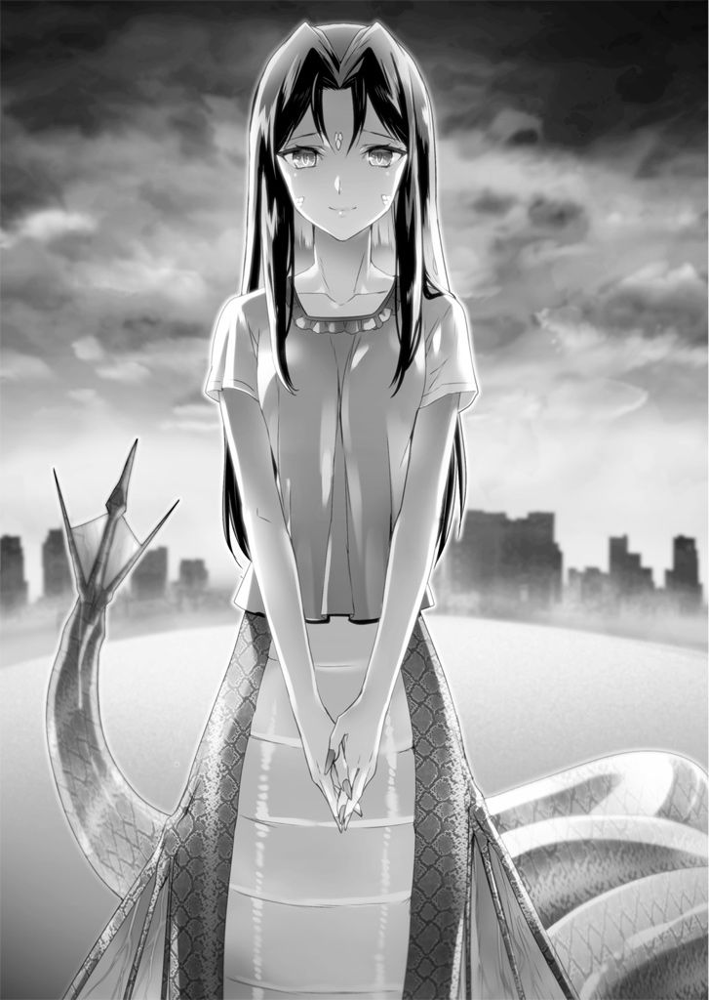
空は白み、杉の木のふもとに座り込んでいる妹の姿がはっきり見えていた。
体育座りで顔を伏せている慧に声を掛ける。
「慧！」
彼女は反応しなかった。
「慧！ 慧！」
声を張り上げる。
彼女の肩が、ぴくっと跳ねた。
「慧!!」
ありったけの思いを込めて、叫ぶ。
慧が、顔を上げた。
叡理を見る。
その瞳が大きく見開かれた。
「お兄ちゃん......」
ようやく木の根もとまでたどり着き、その場に座り込む。
慧の真正面で視線を合わせた。
「大丈夫。大丈夫だから。俺は、慧がどんな姿になっても、ヒトじゃなくなっても、ずっと、その、大好きだよ」
「......ダメだよ」
ポツリ。妹が言葉を落とす。
「ダメだよ、お兄ちゃん。もう、私のことは忘れて。私、ここで死にたいの......」
「そんなこと言うな！ トモもいる。安西さんって研究者の人もきっと力になってくれる。だから何も心配することないんだっ」
「違うよ」
慧は大きく首を振った。
「そうじゃないんだよ。もうダメなのっ。もう、耐えられないのっ......」
「何がだっ？ 血を吸わなきゃいけないことか？ それも解決法はあるよ。確かに辛いだろうけど、一緒に乗り越えていこう」
手を伸ばし、俯いている妹の頭に手を置く。
ぎゅっと、慧が身を竦ませた。
そして、
「違うの！ そうじゃないの！」
叡理の手を払いのけた。
突風が吹き、叡理はひっくり返ってしまう。
何とか身を起こしたとき、慧は目に涙を溜めていた。
「慧......？」
「違うんだよ、お兄ちゃんっ......。お兄ちゃんの『好き』と、私の『好き』は違うのっ」
見抜かれていた。
慧に、自分の想いを見抜かれてしまっていた。
「そういうことか......」
「ごめんなさい......」
慧が謝った。
「ごめんなさいごめんなさいごめんなさい......」
謝り続ける。
「お兄ちゃん。私のことは忘れて、トモちゃんと仲良く暮らして。私はこのまま、消えてなくなるから。お兄ちゃんの邪魔はしないから」
妹の頬に涙が伝い落ちた。
「邪魔なわけないだろ！」
身を乗り出し、妹に近づく。上手く力が入らず、無様に倒れてしまった。
「邪魔なわけないだろっ。慧は、慧は大切な......」
妹？
身のうちから声がした。
慧は、大切な、妹なのか？
違う。そうじゃない。
叡理は深呼吸をした。
最後の力を振り絞って、体を起こす。
心配そうにこちらを見つめる慧に、腕を伸ばした。
身を竦ませる彼女を一心に抱き寄せる。
華奢で、柔らかな体。
しっかりと抱きしめ、耳元で囁いた。
「ごめん」
もう何がどうなろうと知ったことではない。ただ自分の気持ちを、本心を、伝えなければならない。
慧にきちんと、言わなければならない。
「ごめん。本当にごめん、慧。さっき慧が言った通りだよ。俺の好きと慧の好きは違う。俺は慧のことが、妹としてじゃなく、異性として好きなんだ」
ごめん。本当にごめん。
心の中で謝り続ける。
拒絶される覚悟はできていた。
今にも押しのけられ、吸血鬼の腕力で突き飛ばされるのをむしろ待ち望んですらいた。
けれど、そうはならなかった。
抱きしめた慧の体は硬直していたが、少しずつ力が抜けていく。
それから、すすり泣きが聞こえてきた。
「違うよ......」
慧が呟く。
「違うよ、お兄ちゃん。そうじゃないよ......。ずるいよっ」
「慧？」
少しだけ身を離し、彼女の横顔を見た。
慧も振り向き、目と目が合った。鼻が触れあいそうな距離で見つめ合う。
「ずるいよ......。そういうの、ずるい。私だって......」
涙を流しながら、幸せそうに笑った。
「私だって、ずっと前から......お兄ちゃんのこと......」
そのとき、光が差した。
日の出。
朝日が丘を照らす。
慧の体にも日光が当たった。
叡理は慌てて彼女を覆う。
しかし、そんなもの気休めにすらならなかった。
彼女の全身から煙が立ち上る。
瞬時に水ぶくれができ、あっという間に腕が黒こげになった。
ボロリと崩れ落ちる。
「あ、ああ、ああああああああああっ......」
目の前で慧が灰になっていく。
叡理に抱かれ、安らかに笑ったままザラザラと。
「慧っ。慧、慧っ、慧いっ！」
泣き叫び、崩れいく彼女の体をかき抱く。
しかし崩壊は止まらない。どうすることもできない。
「お兄ちゃん」
慧が顔を近づけてきた。
「大好き」
唇が重なる。
確かに、彼女を感じた。
※ ※ ※
「そろそろ、決めなきゃならないんじゃないか？」
カードが並べられたテーブル。
その向かいに座る黒コートが笑んでいる、ように見える。
「そうだな。決めないといけない」
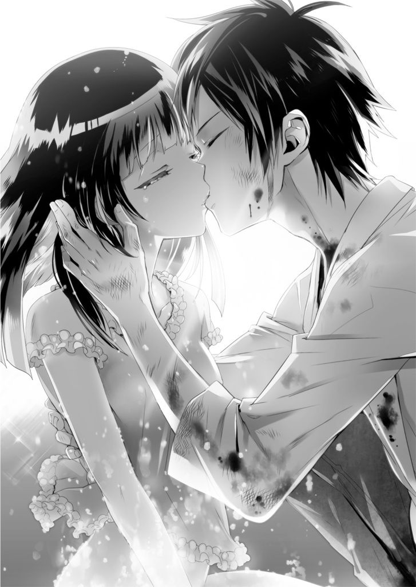
叡理は手元にあるスペードのＫを見つめた。
「お前と話ができて楽しかったよ。もっと色んなことを話してみたかったな」
「俺が決断したら、君はどうなる？」
「決断の内容にもよるが、いずれにしても、こうして会うことはなくなる」
「そうか......」
「どうした？ 寂しいのか？」
おどけた口調。叡理は微笑んだ。
「君が誰か、ようやく分かったよ。いや、思い出したというべきかな。君は『王』のオラクルだ。俺はとっくの昔に感染していたんだな」
「今までは、潜伏期間だった。だから波形探査器にも引っかからなかったんだ。このまま、私を発現させることなく生きていくことも可能だぞ」
「それはできない」
「随分、あっさり言うんだな。妹のためか？ でも、それでお前はどれだけのものを失うか知れん。人間をやめて、自己犠牲に浸りたいのか？」
テーブルの両脇に新たなテーブルが現れる。そこには将棋とチェスがあった。
「人間とは何か。自己犠牲とは何か。だったな......」
局面はともに、あのときのまま。
「正直、まだ答えは出せそうにない。だから、もっと単純なことで決めるよ」
「単純なこと？」
「ああ。愛だ」
オラクルが呆れた顔になった。
「また安直なものを出してきたな。そんな言葉で誤魔化す気か？」
「誤魔化す気はない。愛が全てだ」
「ありきたりな台詞だ」
「そうかもな。でも、ありきたりな台詞すら言えなくなったら、お終いだと思う」
スペードのＫをオラクルに向けて示す。
「そうか。お前がそれで納得してるんなら、これ以上言うことは何もない。命運はお前に託そう。......もう、後戻りはできんぞ」
「分かってる」
そして叡理は、「王」のカードを切った。
瞬間、世界が弾け飛ぶ。
床がなくなり、テーブルが宙を舞う。
無数のカードが飛び回り、将棋とチェスの駒が辺り一面に浮き上がる。
オラクルと二人、真っ白な空間に投げ出された叡理は、巨大な扉が開く音を聞いた。
振り向く。
底知れぬ闇。いや、眩しい輝き。その両方が扉の先に見える。
「さあ、行こうか。今からお前が、王だ」
オラクルが扉の先を指し示す。
「全てのオラクル、ネメシスは、お前の思うがままに。その代わり、お前自身を生贄に捧げろ。この先が天国か地獄か、極楽か冥土か。それは私にも分からん」
「それなら、自分で決めるよ」
叡理は扉に向かって歩き出した。
「餞別だ。もらってくれ」
その背に声が掛かる。オラクルが着ていたコートを脱ぎ去った。
漆黒のそれが大きく翻り、叡理の手に収まる。
「今、夏なんだけどな」
「気にするな。季節は巡る」
声だけが返ってきた。
辺りを見回しても、オラクルの姿は、もうどこにもない。
少し笑み、叡理は漆黒のコートを羽織った。
扉の先へ、踏み入る。
そして、命じた。
※ ※ ※
「止まれ」
一言。
慧の体が、崩壊を止めた。
「......お兄ちゃん？」
両腕を失い、腹から上だけになっていた慧が、呆けた顔で見つめる。
叡理は妹に囁いた。
「俺の血を吸うんだ、慧。大丈夫。少し飲めば体を再生させられるから」
傷口は体の至るところにあるが、あえて首筋をさらす。
慧は頬を染め、少し視線を逸らしたが、そっと舌を出した。
震える舌で叡理の首筋を一嘗めする。
それから、ゆっくり噛みついた。
血を吸われる感触。
叡理は慧をしっかり抱いた。
「んっ」
ビクンと妹の体が震え、崩れて灰になった体がすぐに再生していく。
ほどなくして元通りになった慧は、目を見開いてまじまじと自分の手足を見つめた。
「お兄ちゃん、どうなってるの？」
「それは慧自身の能力だよ。血さえあれば、吸血鬼は肉体を再生できるんだ」
「そ、そのことじゃないよっ」
叡理を見上げる。
「崩壊が止まった。お兄ちゃんが『止まれ』って言っただけで」
可愛い妹に微笑み、叡理は羽織っていた黒のコートを妹に被せてやった。
着ていたはずの天満博士の白衣は消えている。コートと引き替えだったのか、それとも白衣が変化したのか。
「これは一時的なものだから、日に当たらないよう木陰に入っていなさい。説明は後にしよう。その前に、やっておかないといけないことがあるんだ」
慧にそう告げて振り返る。
視線の先には、佐嶋がいた。
周囲を「H.A.W.K.」に取り囲まれている。その中には伊切の姿もあった。
「お兄ちゃん、あの人......」
「うん。『蛇神』に感染してる。俺たちを助けてくれたんだよ」
「あの人も、助けられる？」
「多分。やってみるよ」
慧に頷き、叡理は丘を下る。
佐嶋は数人に組み伏せられていた。おそらく無抵抗だったのだろう。
「また邪魔をするのか」
叡理を見止め、伊切が苦い顔になった。立っているだけでも辛そうだ。それでも眼鏡のつるに指を当てて戦う意思を示す。
「お前の目当ては妹だろう？ 早く逃げたらどうだ？ 今が絶好のチャンスだ」
「その前に、ケジメをつけないとね」
「ケジメだと？」
周囲から向けられる敵意。しかし叡理は悠然と構える。伊切に訊いた。
「彼女をどうする気だ？」
「殺す」
「正気か？」
「正気だ。俺が、この手で殺す。その罪は背負う」
彼は叡理にナイフを見せる。
「幼なじみだろ？ ずっと君を支えてきたんじゃないのか？」
「だからこそだ。身内に甘くはできない。俺の覚悟と隊の規律。両方を守るためだ」
「そういうのは、正直、良く分からない。単に意固地になってるだけじゃないのか？」
「良く分からないのなら、口を挟むな。総上、お前には関係ないことだ」
「関係なくはない。佐嶋さんはクラスメイトで、俺たちを助けてくれた恩人だ。佐嶋さんが来てくれなかったら、俺は慧を失っていた」
「恩返しというわけか？ こいつも連れて逃げるか？」
白ジャケットの一団が、一斉に剣呑な空気をまとった。
「そんなことはしない。佐嶋さんだって、それは望んでないはずだ」
項垂れたまま、一言も発しない彼女。
「礼から、『蛇』事件の全貌を聞いた。罪を贖うため、俺に殺して欲しいとも頼んできた。俺は、その願いを遂行するだけだ」
「妹さんの呪縛は、かなり強力なんだね」
「......総上。お前は助けられたようだな」
叡理の問いには、そんな言葉だけが返された。
「状況を変えよう」
叡理は人差し指を立てる。
「これから俺が、一つ、状況を変える。その上で尚、君が佐嶋さんを殺すというなら仕方ない。でも、俺はそんなの間違っていると思う」
「何が言いたい？ お前に何ができるというんだ？」
「伊切公平。佐嶋さんが、『蛇神』が人類に対する脅威でないなら、どうする？」
「脅威ではない？ バカを言うな。あれは脅威そのものだ。定期的に人を食い殺さないといけないなんて、脅威以外の何だというんだ？」
「つまり、佐嶋さんが人を喰わなければいいんだね？」
伊切が眉をひそめた。
「佐嶋さんが、『蛇神』のままでも、人を喰うことがなければ、いいんだよな？」
一言一言、確かめるように言う。伊切が「ハッ」と吐き捨てた。
「そんなことができるのなら、礼だってとっくの昔にやっている。礼が罪を犯したのは、もう、それしか選択肢がなかったからだ。そのくらいの状況なんだ。それで、耐えきれずに殺してくれと頼んでいる。それを、お前ごときが、どうにかできるっていうのか!!」
突然の激昂。
伊切は本気で怒っている。
それが肌で感じられた。
叡理はほくそ笑む。
「やっと素の感情を見せたな」
「何だと？」
「フェクターがどうだとか、罪がどうだとか、身内がどうだとか、そんなのは良く分からない。でも、今のは良く分かった」
「総上っ、からかうのもいい加減に──」
「動くな」
その一言で、伊切の動きが止まった。
怪訝な顔をする相手の肩をポンと叩き、佐嶋の方に向かう。
白ジャケットが行く手を遮った。
「全員、動くな」
周囲の「H.A.W.K.」隊員に向けて命じる。
全員が、その場から動けなくなった。
戸惑い、焦る少年たちの脇をすり抜け、叡理は佐嶋の前に立つ。
「佐嶋さん」
呼びかけると、彼女はそろそろと顔を上げた。緑色の肌は、日差しの下で見ると存外にきれいで神々しさすら感じられる。
「ごめん。今から、佐嶋さんが望んでないかもしれないことをする」
叡理の意図を計りかね、きょとんとしている佐嶋の額に人差し指を当てた。
意識を集中させる。
「『蛇神』。大河より生まれ、水の流れを模して蛇と喩えられし、氾濫と豊穣の標。ときに人を呑んで喰らう畏怖の源。その神性をして尚、激情治まらんや」
脳裏に「蛇神」のプログラムが導き出された。
叡理は言葉を紡ぐ。
「佐嶋さん。君が負う衝動は食人じゃない。食事だ。大食らいは全てを飲み込み、けれど無用の害を成さず」
王の声が波動となり、佐嶋礼に放たれた。
同時に、二人とも弾き飛ばされる。
凄まじい衝撃が叡理を襲った。
異様な吐き気と鈍痛。
体内で何かが暴れ回る。
そして、微かに割れる音がした。
尻餅をついた叡理は荒い息を吐き、佐嶋の方を見る。
彼女もまた斜面に倒れていた。じきに身を起こすと自身を不思議そうな顔で見つめる。それから叡理の方を向く。
「総上、くん。これって......」
「もう、人を食べたいとは思わないよ」
立ち上がりながら伝えた。
「食人衝動を消した。正確には別の欲求に書き換えたんだ。佐嶋さん、これからすごくお腹が減るようになると思う。食費がかさむけど、それは許して」
「どうやって......どうやって、こんなことっ？」
信じられないと佐嶋は頭を振る。叡理は杉の木の方を見て言った。
「プログラムコードを一部、書き換えたんだ。俺は全てのオラクルに干渉できる。ついでにネメシスにもね。そういうオラクルに感染したんだよ」
「ああ、やっぱり感染してたんだねえ」
呑気な声に振り向くと、丘の斜面を智花が上ってきていた。少し後ろに安西もいる。
「トモ、無事だったんだな」
「もちろん。それにしても、いつ感染したんだろうねえ。最強にして最凶のオラクル。№０『王』に。これを発現させちゃったら、もう後には引けないよ」
「ああ、それならさっき、覚悟を決めた」
「№０だとっ？ そんなオラクル、聞いたことないぞっ」
伊切が睨んでいた。
「伊切、こっちに来いよ」
叡理がそう言うなり、彼はバランスを崩して転んだ。苦虫を噛み潰したような顔で立ち上がると、こちらに歩いてくる。
「ったく、天満も人の子よね。あ、この場合、人の親？ 結局、息子に未練たらたらだったわけだ」
のんびりやってきた安西が、白衣をバタバタさせながら言った。
「どのタイミングだったのか知らないけど、切り札を息子に投与しておいたのねえ。総上叡理。あんた、とんでもない存在になったって自覚ある？」
「エーリ。君の能力はオラクル感染者に対するカウンターにもなれば、人類を滅ぼす決め手にもなるんだ」
真剣な表情の智花に、叡理はすぐさま答えた。
「ああ。俺は慧のためなら、人類の敵にも、フェクターの敵にもなるよ」
あんぐりと口を開け、次いで智花がお手上げというポーズを取る。
「君の妹愛は、あっぱれだね」
「どうも。さてと、伊切」
「......何だ」
不機嫌そうな相手に佐嶋を示す。
「佐嶋さんはもう、人を襲うことはない。その必要もなければ衝動も起こらない。そして彼女自身が本来、善良な人間であることは君が一番良く知っているはずだ。さあ、聞かせてくれ。彼女をどうするんだ？」
沈黙が訪れる。
叡理や智花だけではない。
白ジャケットの「H.A.W.K.」たちも固唾を呑んで見守っている。
伊切公平の判断を。
「俺は......」
苦悩の表情が浮かぶ。
一度俯き、伊切は決然と佐嶋を見つめた。
「コウちゃん......」
彼女の口から、か細い声が洩れる。
「礼は、罪を犯した。俺は、それを許すべきでないと考える」
「隊長！」
「そりゃないっすよ！」
隊員たちから悲愴な声が飛んだ。
伊切は彼らの声を押しつぶすように、言い放った。
「そして、俺も罪を犯し続けている。許されざる存在だ。だから、佐嶋礼は俺が監視する。あとは本部の判断を仰ぐしかないっ」
おおっと歓声が上がる。
口笛まで聞こえた。
叡理は頬を緩める。
佐嶋は泣いていた。「ごめんなさい」「ごめんなさい」と繰り返しながら。
「んじゃ、あたしらはそろそろ行きましょうか」
「そうだね。ボクは眠くて仕方ないよ。こんなに動き回ったのは何年ぶりだろう。エーリと一緒に早くベッドで寝たいね」
安西と智花が斜面を下っていく。
叡理は慧を迎えに走った。
「総上！」
その背中に伊切が声を掛ける。
「このままで済むと思っているのか？」
「思ってはいない」
叡理は振り返らずに答えた。
「でも、君だって今回の件で色々と気になったはずだ。セントラル・メディックは本当に正義なのか？ オラクルとは？ ネメシスとは？ 考えることがあるだろ」
「......次に会ったときは、容赦しない」
「肝に銘じておくよ」
再び駆け出す。
頂上では、コートで日差しを避けながら妹が心配そうにこちらを見ていた。
大きく手を振る。
はにかみながら、慧も手を振り返してくれた。
それだけで、幸せな気持ちになる。
「帰ろう、慧。家に帰ろう」
「うん。叡理お兄ちゃん」
強く抱き合った。
ＣＯＤＥ：ＮＥＸＴ？
「じゃあ、ケイから『日光』という弱点を取り除いたわけではないんだね」
「ああ。そこまでの書き換えは不可能だった。プログラムに異常をきたさない範囲でないと遺伝子そのものを壊してしまうみたいで。あのときは一定時間、崩壊の進行を極端に遅くしたってだけだな」
「さすがに王様といえど、何でもありってわけにはいかないか」
夕方。叡理は自宅のリビングで智花と話していた。
慧は台所で鼻歌交じりに料理を作っている。
あれから安西の車で自宅に送ってもらった叡理と慧は、疲れ切っていたこともあり二人ともすぐに寝てしまった。
昼過ぎ、シャワーの音で目が覚めた叡理は廊下で慧と会い、お互いに何となく気恥ずかしい思いをしながら何も言わずにすれ違った。
洗面所で怪我の具合を確認したが、叡理は無傷といって良かった。
それが「王」の力なのかまでは分からない。
そして午後六時を回った頃、智花が家を訪れたのだ。彼女もそれまで寝ていたらしい。
智花は安西からの伝言を預かっていた。
『落ち着いたら、うちに来なさい。診察しておいた方が良いし、こっちから話したいこともあるし』
そんな彼女はまだ寝ているそうだ。
「オラクルについて、俺は何も知らないに等しいんだよな......」
「だけど、王になった。ううん、天満博士はこうなることを予測していたのかなあ」
「感染率は極端に低いはずだ。だけど、もし高い確率で感染させる方法を天満博士が知っていたのだとしたら、俺に因子を仕込んでおくことは可能だよね」
「それを言い出すと、色々と根幹から崩れてしまうからボクは好きじゃないなあ」
椅子に凭れ、智花が「ううん」と唸る。
「それに、エーリが見たっていう夢。君を生贄に捧げるって話だけど、それはつまり王の力を使うたび何らかのリスクを負うってことだよね。エーリ、あれから体に不調は？ 何か異変はなかったかい？」
真剣な目で見つめられた。
しかし叡理は肩をすくめる。
「それが、特に何も。むしろ怪我が完治していたり気分も良かったり、これといって悪いことは起きていないんだ」
「ふうん。そうかい。......でも、まだ気づいてないだけかもしれない」
「そうなのかな？」
首を捻る。
「お待たせしましたーっ」
慧が笑顔でやってきた。お盆に料理を載せて運んでくる。
「今夜はケイが作ったんだね」
「そうだよ。トモちゃんも料理くらいできた方がいいと思うな」
智花に含みのある笑みを向けてから、叡理を振り向いた。
「お兄ちゃんも、そう思うよね」
「そんなこと言って、慧だって普段、料理しないじゃないか」
そう返し、出された皿を見る。
美味しそうな肉じゃがだ。
一口大に切られた牛の薄切り肉に、少し不格好な乱切りの人参。
たまねぎは飴色に炒められてほどよくしんなりしている。
みりんのお陰で、じゃがいもの照りも美しい。
「......慧、肉じゃが作るの、上手くなったんだな」
「本当っ？ えへへ」
慧が嬉しそうに笑い、ご飯を装いに台所へと戻る。
「うん。本当に美味しそう......？」
叡理は目を瞬いた。
耳を押さえ、次いで鼻をつまむ。額にも手を当ててみた。
「......どうしたんだい、エーリ？」
智花が眉間に皺を寄せる。
「あ、いや、何でもない......気のせいだった」
そう返した。しかし、彼女の眼差しは更に険しくなる。
......もう、後戻りはできんぞ。
耳元で、そんな声が聞こえた気がした。
（了）
あとがき
ＭＦ文庫Ｊでは初めまして。櫂末高彰と申します。
当方、作品の内容については、あとがきで書かないよう心がけておりますので、ここでは内容と全く関係のない話をしましょう。
とりあえず、近況でも。
先日、身の回りを整理したいなと思いまして、長年放置していたものを思い切って捨ててみました。それはもう容赦なく。うわ、これなくなったら後々困るんじゃね？ と思っていたものも知ったことかと捨ててみました。
そして現状、何の不都合もなく暮らせているという事実。
まあ、そんなもんよね。
それにしても、物がなくなってすっきりしていたはずの床や棚に、気づいたら本やＢＤが積まれているのはどういうことなんでしょうか？ おかしいな？ 本棚のスペースを空けたはずなのに、そこが埋まっているぞ。これは、空間が歪んでいるのかっ？
ヒント：ネット通販
......そうか。つまり、こういうことだな。
買う速度 > 読む（観る）速度 > 片付ける速度
故に身辺整理に必要な時間は限りなく無限大へと近づく Ｑ．Ｅ．Ｄ．
まいったな。また一つ、世界の真理を解き明かしちまったぜ。（勘違い）
バカなことばかり言ってないで、謝辞を。
大変美麗なイラストで妖しくも美しく作品世界を彩って頂きました、ミユキルリア先生。ありがとう、ありがとう。最後の最後まで細々とお手数かけました、担当編集さん。ありがとう、ありがとう。毎度お騒がせ致しております、友人知人に親類縁者。ありがとう、ありがとう。ステキなツッコミを入れて下さった校正さん含め、この本に携わってくれた全ての方々。ありがとう、ありがとう。
そして読者の皆様。ありがとう、ありがとう。
それでは縁がありましたら、またお会いしましょう。
二〇一五年 二月 櫂末高彰
著者
櫂末高彰（かいま・たかあき）
１９７７年、福岡生まれ。
スマホゲームをやり始めた影響なのか、最近、指先に脂がなくなってしまって物を持つとき取り落としそうで怖いんです。指先を触るとすごくツルツルしていて、そのうち指紋が消えるんじゃないかと危惧しています。指紋認証が必須の世の中じゃなくて良かった。
それはそれとして、日々是精進。
イラスト
ミユキルリア（みゆきるりあ）
デザインしたてのキャラは馴染ませるのに試行錯誤です。がんばります！
この間インストールしたはずの未開封の素材ＲＯＭが出てきまして...。え、これ...いつ買ったの...？と。
意図しない被り購入は恐ろしいですね。
...この原稿が終わったら大掃除したいです。
Digital Eden Attracts Humanity
最凶の覚醒
2015年2月28日発行 ver.1.0
著者 櫂末高彰
発行者 三坂泰二
編集長 万木壮
発行所 株式会社ＫＡＤＯＫＡＷＡ
〒102-8177
東京都千代田区富士見2-13-3
03-3238-8745（営業）
編集 メディアファクトリー
0570-002-001（カスタマーサポートセンター）
年末年始を除く平日10:00～18:00まで
©Takaaki Kaima 2015
※無断で複製・複写・データ配信などをすることは、かたくお断りいたします。
本電子書籍は下記にもとづいて制作しました
ＭＦ文庫Ｊ
Digital Eden Attracts Humanity 最凶の覚醒
発行日 2015年2月28日 初版第一刷発行

本作品の全部または一部を無断で複製、転載、配信、送信したり、ホームページ上に転載することを禁止します。また、本作品の内容を無断で改変、改ざん等を行うことも禁止します。
本作品購入時にご承諾いただいた規約により、有償・無償にかかわらず本作品を第三者に譲渡することはできません。
本作品を示すサムネイルなどのイメージ画像は、再ダウンロード時に予告なく変更される場合があります。
本作品は縦書きでレイアウトされています。
また、ご覧になるリーディングシステムにより、表示の差が認められることがあります。